Видеонаблюдение
Загрузить руководство пользователя в PDF-формате
Нашли функцию, которая не описана в этой документации, или у вас есть вопросы или пожелания? Пожалуйста, сообщите нам.
ПОЛНОЕ РУКОВОДСТВО ПОЛЬЗОВАТЕЛЯ XEOMA
СОДЕРЖАНИЕ:
ГЛАВА 1. ЗНАКОМСТВО С ПРОГРАММОЙ
1.1. Знакомство с программой
1.2. Возможности программы и сферы применения
1.3. Минимальные системные требования
1.4. Режимы Xeoma
ГЛАВА 2. НАЧАЛО РАБОТЫ
2.1. Начало работы
2.2. Интерфейс главного окна Xeoma
2.2.1. Интерфейс главного окна Xeoma
2.2.2. Меню режимов просмотра
2.3. Окно быстрых настроек
2.4. Окно детальных настроек
2.5. Диалог настроек модуля
2.6. Порядок камер
2.7. Быстрое управление камерами: дерево камер
2.8. Управление PTZ-функциями камер и цифровое зуммирование
2.9. Быстрое управление камерами: eMap
2.10. Смена отображаемого имени камер
ГЛАВА 3. НАСТРОЙКИ МОДУЛЕЙ
3.1. Настройка источников
3.2. Настройка назначений
3.3. Настройка фильтров
3.4. Детектор движения
3.5. Архив
3.6. Детектор лиц и распознавание лиц
3.7. Подсчет посетителей
3.8. Маркировка
3.9. Реле-переключатель
3.10. Автоматическая маскировка зон
3.11. Детектор дыма
3.12. Детектор объектов
3.13. HTTP Маркировка (интеграция с кассовыми аппаратами)
3.14. Отправка HTTP запроса (интеграция с системами автоматизации)
3.15. HTTP Отправка на другую Xeoma
3.16. RTSP Транслятор
ГЛАВА 4. ДРУГИЕ ВОЗМОЖНОСТИ
4.1. Клиент-серверная архитектура
4.2. Установка и запуск
4.3. Лицензии: условия и покупка
4.4. Активация программы
4.4.1. Online активация
4.4.2. Offline активация
4.4.3. Активация на виртуальных машинах
4.4.4. Активация на виртуальных машинах с использованием сервера лицензий
4.4.5. Аппаратные ключи на твердотельном носителе
4.5. Обновление
4.6. Разделение прав доступа (раздельный просмотр источников)
4.6.1. Разделение прав доступа
4.6.2. PTZ-Блокировка
4.7. Восстановление настроек
4.8. Визуализация движения
4.9. Тепловая карта
4.10. Шифрование передачи данных (TLS)
4.11. Резервное хранилище архивов
4.12. Монтирование сетевых дисков
4.13. Резервирование серверов
4.14. Аппаратное ускорение декодирования
4.14.1. Сервер
4.14.2. Клиент
ГЛАВА 5. УДАЛЕННЫЙ ДОСТУП
5.1. Работа с прокси-серверами
5.2. Возможности удалённого подключения
5.3. Ретранслятор
5.4. Веб сервер
5.5. Кастомизация веб сервера
5.6. Приложение для Android
5.7. Приложение Xeoma для iPhone/iPad
5.8. Подключение Xeoma через VPN
ГЛАВА 6. ДРУГИЕ ПРОДУКТЫ
6.1. Xeoma Pro
6.2. Xeoma Cloud
6.3. Кастомизация и ребрендинг
ГЛАВА 7. В ЗАКЛЮЧЕНИЕ
7.1. Удаление программы
7.2. Советы по снижению нагрузки
ПРИЛОЖЕНИЕ
1 – Примеры использования Xeoma
2 – Часто требующиеся возможности и как их реализовать в Xeoma
3 – Видеонаблюдение для новичков
4 – Программа для видеонаблюдения для Linux Xeoma: инструкция по установке
5 – Поддерживаемые команды
6 – Возможные ошибки и их устранение
7 – Кастомизация веб сервера Xeoma
8 – Файлы настроек программы Xeoma
9 – Изменение порядка камер
10 – Мультисерверный режим
11 – Ретранслятор
12 – Инструкция по применению утилиты для ребрендинга Xeoma
13 – Быстрое подключение к серверам
14 –Дерево камер (“Устройства по группам”)
15 – FTP-приёмник: подключить камеру к видеонаблюдению – просто!
16 – Как снизить нагрузку на процессор при работе с rtsp (H264) камерами
17 – Как настроить Xeoma на Raspberry Pi с процессором ARM
18 – Как переместить архивы Xeoma
19 – Таймлапс-эффект в Xeoma
ГЛАВА 1. ЗНАКОМСТВО С ПРОГРАММОЙ
1.1. Xeoma: Знакомство с программой
Xeoma – это самая продаваемая программа для видеонаблюдения в России по версии allsoft.ru!
Простое видеонаблюдение благодаря лежащему в основе архитектуры Xeoma принципу детского конструктора. Понятный визуальный интерфейс и действительно гибкие настройки позволят построить систему видеонаблюдения, соединяя, добавляя и удаляя функции, всего за несколько минут!
Совместимость со всеми типами камер. Автоматический поиск и определение любых веб- и IP-камер (поддерживается до 99.9% камер в мире), до нескольких тысяч камер на одном компьютере, в том числе и разных производителей. Стабильная работа на множестве операционных систем Windows, Linux и Mac OS X, а также полноценное приложение для Android.
Функциональность превосходит ожидания. К Вашим услугам все современные возможности, необходимые даже для самых сложных систем. Мультисерверная и мультиклиентская архитектура программы позволяет строить системы видеонаблюдения любого масштаба!
Доступны стандартная версия программы и Xeoma Pro – профессиональное дополнение к ней.
Бесплатный ребрендинг и возможности кастомизации помогут Вам создать свою программу на основе Xeoma.
Качественная техническая поддержка всегда ответит на Ваши вопросы и поможет использовать возможности системы видеонаблюдения по максимуму!
Как экономить с Xeoma: Попробуйте бесплатную Xeoma без ограничения функциональности! В дальнейшем, если Вы захотите больше, Вы сможете приобрести лицензию по наиболее выгодной цене! Экономьте на охране, на дорогостоящих системах для видеонаблюдения, стоимости эксплуатации и обновления ПО.
Xeoma не содержит шпионского, вирусного и рекламного ПО, программа полностью безопасна для использования.
1.2. Возможности программы для видеонаблюдения:
Работа с камерами/источниками:
Профессиональное видеонаблюдение для всех:
Интеллектуальные модули и возможности:
Удалённый доступ:
Уведомления и реакции:
Топ-возможности:
Преимущества программы:
Сферы применения:
1.3. Минимальные системные требования:
Для Windows – Windows 7, Windows 8, 10, 64- и 32-битные версии; Windows Server 2008 R2/2012/2016.
Для Linux – 32- и 64-битные версии с графической оболочкой XWindows или консолью/сервером. Поддержка ARM-процессоров, например, Raspberry Pi, и Intel-процессоров.
Поддерживаемые дистрибутивы:
Ubuntu последних версий (12, 13, 14 и выше),
Debian 7 и выше,
openSUSE 12.2 и выше,
Mint 13 и выше,
CentOS версии 7 и выше,
Red Hat Enterprise Linux версии 6 и выше,
ArchLinux, начиная с archlinux 2015.06.01.
Внимание! В консольной версии Linux для поддержки звука требуется пакет libasound2. Распаковывать архив xeoma_linux.tgz нужно именно на той машине, где установлен Linux, или выполнить команду chmod a+x xeoma.app, после чего запустить Xeoma как обычно: ./xeoma.app
Если устанавливаете 32-битную Xeoma на Linux 64-бит (хотя рекомендуем скачать Xeoma 64-бит), может понадобиться установить ia32-libs.
Для Mac версии 10.7* и выше.
Для Android – операционная система Android 4.0 (API LEVEL 10) и выше (рекомендуется Android 4.2), 20 Mб оперативной памяти, разрешение экрана – от 450×450 пикс.
Для iPhone/iPad – iOS версии 6 и выше.
Воспользуйтесь нашим калькулятором системных требований и узнайте примерные требования для нужной Вам системы видеонаблюдения.
*Начиная с версии 17.6.23 прекращена поддержка операционных систем Windows XP, Vista или ниже и Linux Ubuntu 11.10 или ниже, 32-битных Mac OS, а также устройства Raspberry Pi 1. Если вы планируете использовать новые версии Xeoma, рекомендуем обновить систему до более новой версии.
**Начиная с версии Xeoma 17.7.31 для работы требуется GLIBC 2.17, в связи с чем рекомендуется использовать CentOS 7 или выше.
Языки интерфейса:
Основные:
Русский, английский, польский, испанский, итальянский, португальский, немецкий, японский, французский, китайский, венгерский.
Дополнительные:
Украинский, чешский, финский, турецкий, хорватский, греческий, голландский, румынский, датский, белорусский, болгарский. Описание программы на других языках
Данное программное обеспечение может использоваться в одном из трех режимов: бесплатном, пробном и коммерческом (редакции Lite, Standard, Pro).
Бесплатный режим – базовый – позволяет подключить до 1000 камер на просмотр (без записи архива)! В этом режиме вы можете использовать до 3 модулей в каждой цепочке, до 4 модулей “Просмотр и Архив” (запись архива) или “Отправка Email”, не более 1 источника в схеме, и управлять программой с того компьютера, где она установлена. Переключиться в Бесплатный режим можно через Главное меню – Регистрация – Переключиться на бесплатную версию. Подробнее про Бесплатный режим можно узнать из видео
Пробный режим – для тестирования – можно использовать неограниченное количество модулей в любых комбинациях, а также контролировать систему удалённо. При тестировании устанавливать программу не требуется. При запуске в пробном режиме программа начинает автоматический поиск локальных камер (поиск можно остановить, нажав на прогресс бар в правом нижнем углу). Заданные настройки сбрасываются на дефолтные через 4 часа с момента последнего изменения, а также после перезапуска (закрытия) программы. Обратите внимание, что время хранения Архива в пробной версии составляет максимум 1 час, затем архив будет перезаписан. Нужно продолжительное тестирование перед покупкой – – просто напишите нам, мы с радостью вышлем вам демо лицензию!
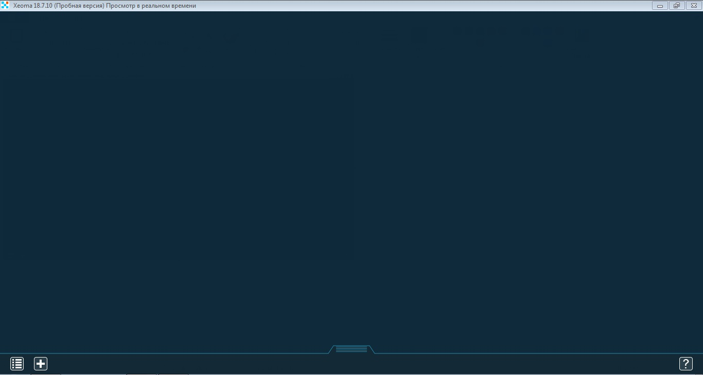
Коммерческий режим доступен после покупки лицензии на любое количество камер. Существует 3 редакции Xeoma: Lite, Standard и Pro. Этот режим позволяет использовать любые модули в любых сочетаниях. Доступна функция удаленного контроля программы. Общее количество используемых видеоисточников/камер задаётся активированной лицензией или несколькими лицензиями. Все настройки сохраняются после перезапуска программы.
Lite режим содержит самые необходимые и простые в освоении модули. Позволяет использовать до 4 источников видео (камер) и не более шести модулей в каждой схеме. Обновления программы в Xeoma Lite не поддерживаются: используйте версию, на которой производилась активация, в течение неограниченного времени. Лицензии продления на Xeoma Lite не требуются. Лицензии Lite не суммируются с другими лицензиями Xeoma (Standard и Pro). Активация Lite недоступна на виртуальных машинах. Активировать программу можно через Главное меню – Регистрация – Активировать. Версию можно посмотреть в шапке программы:
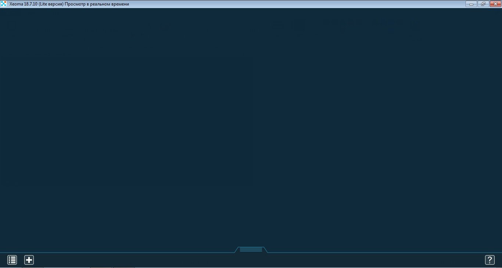
Standard (Стандартный) режим содержит все необходимые модули (недоступны только интеллектуальные Pro модули). Позволяет использовать неограниченное количество источников видео (камер) в зависимости от купленных лицензий, а также строить цепочки из любого количества модулей. Бесплатные обновления программы Xeoma Standard доступны в течение 1 года (или 3 лет, если была куплена лицензия с 3 годами обновлений). После окончания бесплатных обновлений лицензии можно приобрести дополнительные обновления Xeoma Standard на 1 или 3 года со скидкой или же использовать последнюю доступную для лицензии версию Xeoma в течение неограниченного периода времени. Лицензии Xeoma Standard суммируются между собой (а также суммируются с лицензиями Xeoma Pro), т.е. можно приобретать лицензии на дополнительное количество камер и расширять свою систему видеонаблюдения (количество добавляемых лицензий может быть любым). Активация лицензии Standard доступна на виртуальных машинах. Активировать программу можно через Главное меню – Регистрация – Активировать. Версию можно посмотреть в шапке программы:
Pro (Профессиональный) режим позволяет использовать любые доступные модули (включая интеллектуальные Pro модули, такие как «Распознавание автономеров», «Детектор лиц» и т.п.) и Pro-функции (интерактивные карты eMap для расположения камер, просмотр нескольких архивов одновременно и т.д.). Позволяет использовать неограниченное количество источников видео (камер) в зависимости от купленных лицензий, а также строить цепочки из любого количества модулей. Бесплатные обновления программы Xeoma Pro доступны в течение 1 года (или 3 лет, если была куплена лицензия с 3 годами обновлений). После окончания бесплатных обновлений лицензии можно приобрести дополнительные обновления Xeoma Pro на 1 или 3 года со скидкой или же использовать последнюю доступную для лицензии версию Xeoma в течение неограниченного периода времени. Лицензии Xeoma Pro суммируются между собой (а также суммируются с лицензиями Xeoma Standard), т.е. можно приобретать лицензии на дополнительное количество камер и расширять свою систему видеонаблюдения (количество добавляемых лицензий может быть любым). Активация лицензии Pro доступна на виртуальных машинах. Активировать программу можно через Главное меню – Регистрация – Активировать. Кроме того, Pro версия позволяет развернуть собственное Облако.
Версию можно посмотреть в шапке программы:
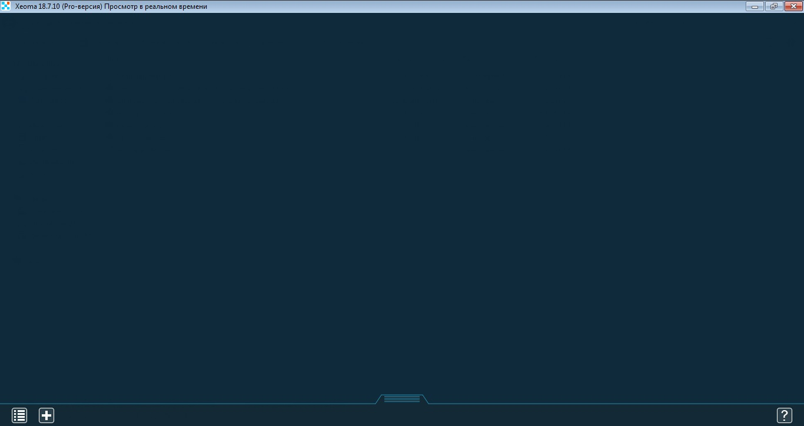
Переключение между режимами производится через Главное меню -> Информация или Главное меню -> Информация -> О программе.
Таблица сравнения режимов функционирования Xeoma:
|
Пробный |
Бесплатный |
Lite |
Стандарт |
Pro | |
|
Максимальное количество используемых источников |
Без ограничений |
Без ограничений |
4 |
Без ограничений (зависит от лицензии) |
Без ограничений (зависит от лицензии) |
|
Максимальное количество модулей в цепочке |
Без ограничений |
3 |
6 |
Без ограничений |
Без ограничений |
|
Максимальное время хранения архива до включения перезаписи |
1 час |
5 дней |
Без ограничений |
Без ограничений |
Без ограничений |
|
Удаленный доступ |
Доступен |
Недоступен |
Доступен |
Доступен |
Доступен |
|
Учётные записи операторов |
Доступны |
Недоступны |
Недоступны |
Доступны |
Доступны |
|
Отсутствие наложения логотипа Xeoma |
Да |
– |
Да |
Да |
Да |
|
Возможность подключения через Ретранслятор* |
Доступно |
Недоступно |
Доступно |
Доступно |
Доступно |
|
Обновления |
Дa |
Дa |
Нет |
Да (1 год включён в стоимость) |
Да (1 год включён в стоимость) |
|
Кастомизация |
Да |
Нет |
Да |
Да |
Да |
|
Другие особенности |
бесплатный режим настройки обнуляются через 4 часа и при закрытии для тестирования доступны все модули и возможности |
бесплатный режим доступны учетные записи пользователей для подключения с этого же компьютера максимум 4 модуля “Просмотр и Архив”, максимум 4 модуля “Отправка Email” |
требуется лицензия |
требуется лицензия лицензии Standard суммируются с Pro |
требуется лицензия лицензии Standard суммируются с Pro |
|
Просмотр через веб браузер |
Есть, |
Нет |
Есть, |
Есть |
Есть |
|
Изменение настроек через веб браузер |
Есть |
Нет |
Есть |
Есть |
Есть |
|
Управление PTZ камерами |
Есть |
Нет |
Есть |
Есть |
Есть |
|
Управление PTZ через браузер |
Есть |
– |
– |
– |
Есть |
|
Цифровое зуммирование |
Есть |
– |
– |
Есть |
Есть |
|
Автоматическое PTZ слежение |
Есть |
– |
– |
Есть |
Есть |
|
Коррекция Fisheye (“рыбий глаз”) |
Есть |
– |
– |
Есть |
Есть |
|
Поиск в просмотрщике архива по дате и времени |
Есть |
Есть |
Есть |
Есть |
Есть |
|
Поиск в просмотрщике архива по выделенной области |
Есть |
– |
– |
Есть |
Есть |
|
Синхронизированный просмотр нескольких архивов |
Есть |
– |
– |
– |
Есть |
|
Распознавание автономеров |
Есть |
– |
– |
– |
Есть |
|
Быстрое включение/выключение камер |
Есть |
Есть |
Есть |
Есть |
Есть |
|
Модуль быстрого включения/выключения |
Есть |
– |
– |
– |
Есть |
|
HTTP Переключатель |
Есть |
– |
– |
Есть |
Есть |
|
Дерево камер |
Есть |
Есть |
– |
Есть |
Есть |
|
Интерактивная карта eMap |
Есть |
– |
– |
– |
Есть |
|
Подсчёт посетителей |
Есть |
– |
– |
Есть |
Есть |
|
Детектор праздношатания |
Есть |
– |
– |
– |
Есть |
|
Детектор лиц |
Есть |
– |
– |
– |
Есть |
|
Распознавание лиц |
Есть |
– |
– |
– |
Есть |
|
Маскирование зон |
Есть |
– |
– |
– |
Есть |
|
Детектор движения |
Есть |
Есть |
Есть |
Есть |
Есть |
|
Детектор звука |
Есть |
– |
– |
Есть |
Есть |
|
Детектор пересечения линии |
Есть |
– |
– |
– |
Есть |
|
Детектор дыма |
Есть |
– |
– |
– |
Есть |
|
Детектор проблем |
Есть |
– |
– |
Есть |
Есть |
|
Детектор объектов |
Есть |
– |
– |
Есть |
Есть |
|
Детектор оставленных предметов |
Есть |
– |
– |
– |
Есть |
|
Отправка SMS |
Есть |
– |
– |
Есть |
Есть |
|
Визуализация движения – просмотр |
Есть |
Есть |
Есть |
Есть |
Есть |
|
Визуализация движения – архив |
Есть |
– |
– |
– |
Есть |
|
RTSP вещание |
Есть |
– |
– |
– |
Есть |
|
Отправка на FTP |
Есть |
– |
– |
Есть |
Есть |
|
Отправка автономеров на FTP |
Есть |
– |
– |
– |
Есть |
|
Сохранение скриншота (просмотр, архив) |
Есть |
– |
– |
Есть |
Есть |
|
Различные варианты расположения камер |
Есть |
– |
Есть |
Есть |
Есть |
|
Полноэкранный режим |
Есть |
– |
Есть |
Есть |
Есть |
|
Картинка в картинке |
Есть |
– |
Есть |
Есть |
Есть |
|
Автоматическое обновление клиентских частей |
Есть |
– |
– |
– |
Есть |
|
Синхронизация с LDAP |
Есть |
– |
– |
– |
Есть |
|
Возможность удаления интервалов из архива |
Есть |
Есть |
Есть |
Есть |
Есть |
|
Возможность сделать интервалы архива неудаляемыми |
Есть |
– |
– |
– |
Есть |
|
Звуковой сигнал на клиенте |
Есть |
– |
– |
– |
Есть |
|
Звуковой сигнал на сервере |
Есть |
Есть |
Есть |
Есть |
Есть |
|
HTTP маркировка |
Есть |
– |
– |
Есть |
Есть |
|
Запуск приложения |
Есть |
– |
– |
Есть |
Есть |
|
Реле-переключатель |
Есть |
– |
– |
Есть |
Есть |
|
Отправка email |
Есть |
Есть |
Есть |
Есть |
Есть |
|
Объединитель |
Есть |
– |
Есть |
Есть |
Есть |
|
Условие |
Есть |
– |
– |
Есть |
Есть |
|
HTTP приемник |
Есть |
– |
– |
Есть |
Есть |
|
HTTP отправка на другую Xeoma |
Есть |
– |
Есть |
Есть |
Есть |
|
Отправка HTTP запроса |
Есть |
– |
– |
Есть |
Есть |
|
Активация на виртуальных машинах, в т.ч. Docker |
– |
– |
– |
Есть |
Есть |
|
Запись в архив |
Есть |
Есть |
Есть |
Есть |
Есть |
|
Просмотр в режиме реального времени |
Есть |
Есть |
Есть |
Есть |
Есть |
|
Сохранение в файл |
Есть |
Есть |
Есть |
Есть |
Есть |
|
Уменьшение |
Есть |
Есть |
Есть |
Есть |
Есть |
|
Поворот изображения |
Есть |
Есть |
Есть |
Есть |
Есть |
*Ретранслятор – дополнительный сервис, покупка на который приобретается отдельно.
ГЛАВА 2. НАЧАЛО РАБОТЫ
2.1. Начало работы, или как использовать Xeoma максимально эффективно
Вы хотите вести наблюдение. У Вас есть компьютер или планшет, камера или несколько камер и объект, за которым нужно следить. В таких условиях Вам идеально подойдёт Xeoma, поскольку эта программа для видеонаблюдения работает со всеми типами камер (поддерживаются сотни моделей) и на различных операционных системах. Настроить систему можно всего за несколько простых шагов.
1. Загрузите Xeoma со страницы загрузки.
2. Запустите Xeoma на компьютере, мобильном устройстве или планшете, который станет сервером – центром Вашей системы видеонаблюдения. Здесь будут обрабатываться камеры и другие источники, записываться материалы в архив и т.п. Если Xeoma ещё не активирована, в том числе и при первом запуске, она запустится в пробном режиме. Вы можете переключаться между бесплатным, пробным и коммерческим режимами через Главное меню.
3. При первом запуске программа для видеонаблюдения сканирует сеть в поисках доступных камер. Все найденные камеры будут добавлены на Главное окно, за исключением камер, требующих авторизацию – такие камеры будут перечислены в списке в меню “+” в нижней панели. Вы можете добавить их, выбрав их из списка и введя необходимые данные для доступа. Вы можете продолжать работу во время поиска. Однако, если поиск занимает слишком много времени или если все нужные камеры уже были найдены и добавлены, поиск можно остановить, нажав на шкалу прогресса поиска.
4. Найденные камеры добавляются со схемой по умолчанию: Универсальная камера – Расписание – Детектор движения – Архив и Просмотр, с настройками по умолчанию, подходящими для большинства случаев. Вы можете добавить, удалить или перенастроить модули так, как Вам нужно.
5. Установите Xeoma, чтобы программа запускала автоматически со стартом Вашей операционной системы.
6. Чтобы просмотреть записи в архиве, нажмите на маленькую иконку “Play” в правом верхнем углу изображения с камеры на главном окне или на большую иконку “Play” в нижней панели. Откроется встроенный проигрыватель архива, где Вы сможете просмотреть и экспортировать записи.
Хотите делать снимки того, что происходит на экране компьютера? Воспользуйтесь модулем Xeoma “Захват экрана”.
Нужно, чтобы Ваша программа для видеонаблюдения работала незаметно для других пользователей? Отметьте галочкой опцию “Скрытый режим” в меню Установки.
Нужен удалённый доступ для просмотра камер и их записей из любой точки мира? Это также возможно в Xeoma. Для этого используйте данные из Диалога подключения.
Если удалённый доступ не нужен, программа может работать без выхода в Интернет! Инструкция по активации программы без Интернета
Вы можете добавлять учётные записи оператора и давать персоналу доступ к просмотру и управлению камерами, или использовать множество других полезных возможностей.
2.2. Интерфейс главного окна Xeoma
2.2.1. Интерфейс главного окна Xeoma
Главное окно системы безопасности Xeoma состоит из шапки окна (1), так называемого превью – ячеек просмотра (2) (изображения в режиме реального времени с камер или других источников видео) и выдвижной нижней панели (3).
В верхней панели окна программа расположены стандартные кнопки “Свернуть”, “Развернуть”, “Закрыть”. Передвигать окно и изменять его размер можно с помощью мыши.
В заголовке окна (1) отображается информация об IP-адресе сервера (при удалённом подключении), версии (4) и режиме программы (5), а также о названии окна, в котором Вы сейчас находитесь (6). В правом верхнем углу каждой ячейки просмотра (2) есть маленькие иконки архива (7) и настроек (8) – нажатием на них открывается окно просмотра архива этой камеры или её детальных настроек. Если у Вас активирована Pro-лицензия, начиная с версии 15.10.21, архив откроется прямо на главном окне, параллельно Вы сможете просматривать остальные камеры в режиме реального времени.
Если камера поддерживает PTZ-управление (функции “Поворот-Наклон-Масштабирование”), рядом будет также иконка PTZ для вызова PTZ-контрола. Если настроен звук для камеры, то будет показываться также и маленькая иконка “Динамик” (зелёный цвет иконки – звук включён, белый цвет иконки – звук для Главного окна выключен). На Главном окне может быть включен звук максимум с 1 камеры.
Под этими маленькими иконками Вы увидите время последнего обнаруженного движения (9) (если в цепочке этой камеры (видеоисточника) есть и включен модуль “Детектор движения”). При нажатии на это время будет открыт архив камеры на моменте начала этого движения. К тому же, при обнаружении движения рамка ячейки просмотра (10) станет красной, постепенно (в течение 3 минут) возвращаясь к обычному белому цвету (при наведении курсора – голубому). Если обнаруженное движение всё ещё продолжается, вместо времени будет значок “•Rec”.
В левом верхнем углу системы безопасности превью Вы видите название этой камеры (11) – оно задаётся в настройках модулей “Просмотр и Архив” или “Просмотр”. Кликните на название здесь, и настройки модуля будут сразу открыты.
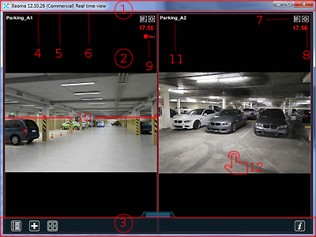
Щелчок кнопкой мышки в любом месте внутри ячейки просмотра (12) откроет окно Быстрых настроек, где в левой выдвижной панели Вы можете увидеть список подключённых модулей и быстро его редактировать.
Выдвигающаяся нижняя панель (3) содержит следующие иконки: “Список”, “Плюс”, “Гайка”, “Play”, “Окно” и “Инфо”. Чтобы скрыть/показать панель, потяните её вниз/вверх или просто кликните по ней мышкой.
-настроить удаленный доступ (включая Ретранслятор и учётные записи пользователей/операторов),
-выключить/включить “Дерево камер”,
-выключить/включить все источники,
-установить программу в автозагрузку или деинсталлировать программу,
-найти обучающее видео,
-переключиться между бесплатным, пробным или коммерческим режимами работы программы,
-купить лицензию и активировать коммерческую версию,
-найти информацию о программе (в меню “Информация”),
-оставить отзыв,
-перейти на официальный сайт разработчика,
-переключить язык интерфейса.
Также в этом меню Вы можете дублировать последнюю просмотренную камеру, что будет особенно удобно, когда нужно скопировать сложную настроенную схему системы безопасности и применить её для последующих камер с почти идентичными настройками.
2.2.1. Режимы просмотра в Xeoma
Нажмите на кнопку с изображением окна, чтобы начать наводить порядок на экране. Самая основная (и самая полезная) функция — это «Управление просмотром». Чтобы поместить на экран только определённый набор камер, выберите«Просмотр: настраиваемый» и щёлкните мышью по всем необходимым изображениям (они выделятся синим цветом), затем снова нажмите на кнопку с окном. Теперь в верхнем левом углу появятся 2 вкладки: «Все камеры» и «Страница 1». Вторую из них вы только что и создали, щёлкните по ней правой кнопкой мыши, чтобы переименовать вкладку, например, чтобы она указывала на ту область, которую просматривают камеры. Если вам нужно поменять картинки местами, можно просто зажимать их мышью и перетаскивать.
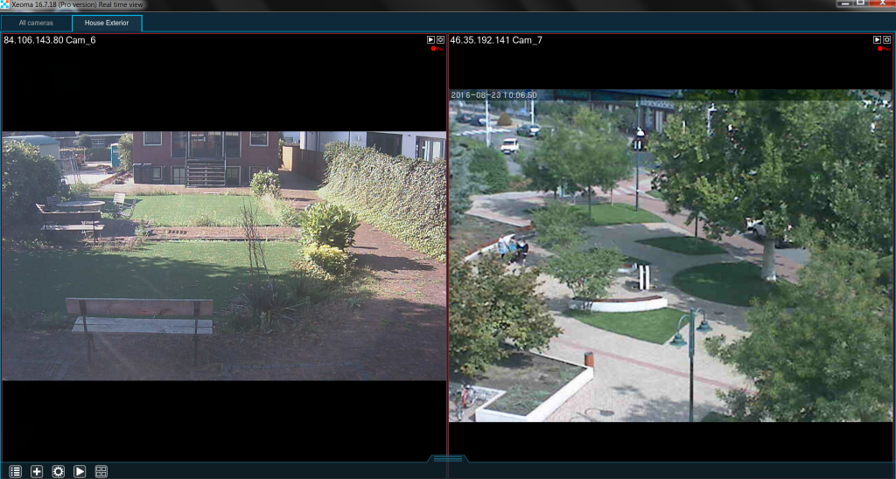
Если хотите добавить ещё одну страницу, зайдите в «Меню просмотра» → «Управление просмотром» → «Просмотр: настраиваемый» → «Добавить новую вкладку» и выделите нужные вам камеры. Ошиблись, выбирая камеры для определённой страницы? Не проблема, нажмите «Редактировать текущую вкладку» в том же меню и выделяйте/отключайте камеры. Если некая страница вам больше не нужна, нажмите «Удалить текущую вкладку» (камеры всё также будут подключены к серверу, вы сможете их просмотреть во вкладке «Все камеры»). Если же вы хотите, чтобы Xeoma сама расположила камеры по шаблону, нажмите «Просмотр: XxY» (первое число это количество камер на экране по горизонтали, а второе — по вертикали). Если вы хотите убрать из окна панель с вкладками, зайдите в «Меню Просмотра» → «Управление просмотром» → «Скрывать панель страниц».
Устранение черных полос по бокам
Многих раздражают чёрные полосы по бокам картинки. Чтобы от них избавиться можно зайти в «Меню просмотра» → «Управление просмотром» и выбрать «Растягивание: выбрать для камер» (если вы хотите использовать его только для определённого набора камер) или «Растягивание: для всех камер». Теперь стоит выбрать способ растягивания: «Оригинальное», «Растянуть» или «Вписать». Первое — это отсутствие растягивания, картинка остаётся как есть. Вариант «Растянуть» уберёт чёрные полосы, растянув изображения по всем необходимым краям, что несколько исказит пропорции. Учтите, пожалуйста, что функция «Вписать» насильно втиснет картинку в своё окно, даже если придётся часть обрезать. Мы рекомендуем убедиться, что на экране видна картинка с камеры целиком после включения этой функции.
Автоматическое листание
Если вы собираетесь оборудовать собственный охранный пост, вам пригодится возможность заставить программу автоматически пролистывать страницы через заданный интервал. Когда у вас уже созданы несколько страниц с камерами, зайдите в «Меню Просмотра» → «Управление просмотром» → «Автоматическое листание» и задайте интервал (5 сек., 1 мин. или 5 мин.). Всё готово!
Режим увеличенного просмотра
Когда на одном экране собрано несколько картинок с разных камер, одна-две из них могут быть важнее остальных. Если вы хотите, чтобы им на экране выделялось больше места, зайдите в меню «Режим увеличенного просмотра». В нём выберите «Просмотр увеличенный 1×1» (если нужно 1 крупное изображение, а если 2, то «Просмотр увеличенный 2×1»). Если Xeoma увеличила не ту картинку, которая вам нужна, зайдите в «Режим увеличенного просмотра» и нажмите на «Размещать по клику», а затем просто щёлкните по нужному изображению мышью.
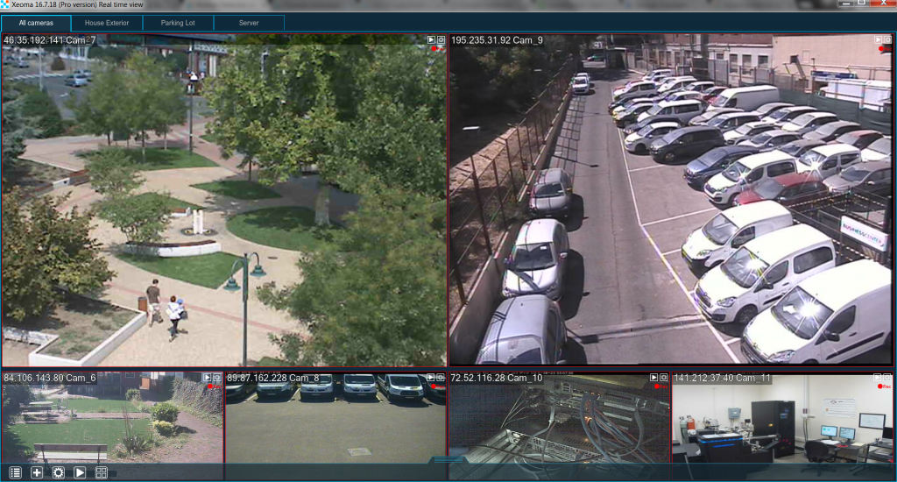
Если в цепочках к камерам у вас стоят детекторы (например, «Детектор движения»), то Xeoma может увеличивать нужное изображение на экране, как только детектор сработает. Зайдите в «Меню Просмотра» → «Режим увеличенного просмотра» → «Формирование группы детекторами». Вот и всё!
Улучшения интерфейса
Вы можете также внести изменения в окно самой Xeoma, если зайдёте в «Настройки окна». Если нагрузка на интернет трафик или процессор слишком велика, можно перетащить бегунок «Максимальная частота смены кадров» вправо. Однако видео станет несколько менее гладким. Если на экране не видны названия камер, проверьте бегунок «Размер шрифта названия камер» и выставьте его значение повыше. Ещё можно увеличить сам интерфейс с помощью бегунка «Масштабирование интерфейса (в процентах от обычного размера)». Также вы можете «Включить прозрачность», поставив галочку в соответствующем поле, и задать её значение с помощью бегунка «Прозрачность». А ещё можно поставить галочку в поле «Поверх всех окон», чтобы Xeoma никогда не перекрывали другие окна.
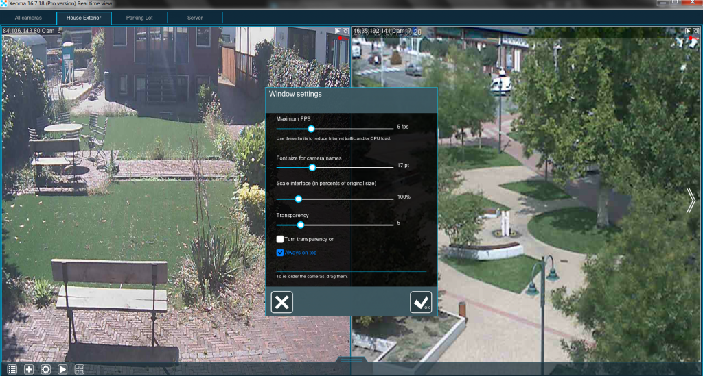
Если связь с какой-то камерой пропала или от неё не поступает картинка, то чем скорее об этом узнает пользователь, тем лучше. Xeoma может помочь и с этим, зайдите в «Меню Просмотра» → «Настройки визуализации» → «Перечёркивать неработающие камеры». После включения этой опции, когда картинка с камеры «зависает», она будет перечёркнута крестом, что не может не заметить пользователь.
Визуализация движения
Иногда бывает так, что программа проявляет больше внимательности, чем человек. Предположим, что Xeoma заметила движение, которое пропустил охранник. Сможет ли она указать, что именно сдвинулось на картинке? Безусловно. Зайдите в «Меню Просмотра» → «Настройки визуализации» → «Включить визуализацию движений». Теперь каждый раз, когда «Детектор движения» что-то заметит, Xeoma выделит нужную область рамочкой.
Также вы можете вывести на экран траекторию движения объекта, нажав на «Включить визуализацию пути движений» в том же меню. Теперь на картинку будут накладываться небольшие зелёные точки, повторяя движения объекта.
Интерактивная карта eMap
Если вы контролируете безопасность в пределах целого здания, вам будет значительно проще это делать с интерактивной картой, на которой отмечены все камеры. Зайдите в «Меню Просмотра» → «Интерактивная карта объекта (eMap)» и нажмите «Загрузить карту». Теперь щёлкните мышью по кнопке с изображением папки справа, чтобы выбрать файл с картой (подойдёт любой формат изображений: png, jpg, bmp и т.д.). Нажмите «Сохранить», чтобы Xeoma скопировала карту к себе. Как только карта загрузится, можно приступать к расстановке на ней камер, нажав на «Добавить камеру на карту». В выпадающем меню выберите IP-адрес камеры и щёлкните мышью по её местонахождению на карте. Когда камера уже добавлена на карту, её можно зажать левой кнопкой мыши и поворачивать, чтобы она смотрела в нужную сторону.
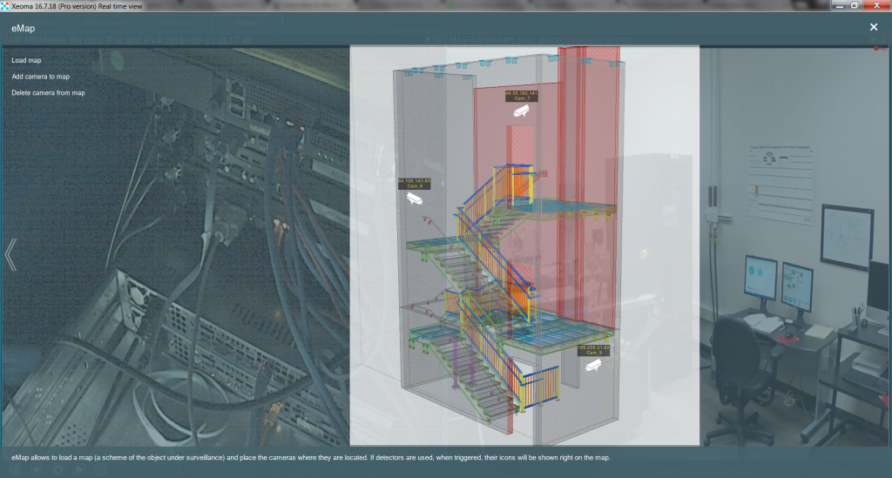
Если в цепочке какой-либо из камер сработает любой детектор, его изображение, выделенное красным цветом, появится под значком той камеры.
Настройки декодирования
Если используются H264 потоки и вас не устраивает FPS (частота смены кадров – «дёрганое» видео) при использовании камеры с достаточно крупным разрешением, стоит зайти в «Настройки декодирования» в «Меню Просмотра». Здесь можно сменить «Декодирование видео на клиенте при просмотре в реальном времени». По умолчанию оно стоит на «Автоматическом определении», но его можно поменять на «Выключено», если у вас проблемы с FPS при просмотре камер удалённо, через подключение к серверу. Пожалуйста, учтите, что это увеличит нагрузку на сервер. Если нужно снизить нагрузку на сервер, выберите «Включено для режима просмотра одной камеры» или «Включено». Однако это увеличит нагрузку на клиенте.
Нагрузку на сервер можно уменьшить и с помощью выпадающего меню «Декодирование видео на клиенте при просмотре архива». Проблемы с FPS можно решить с помощью «Аппаратного ускорения декодирования видео». Здесь можно выбрать или «Intel Quick Sync» (для процессоров со встроенной видеокартой), или «NVIDIA CUDA» (для видеокарт). Рекомендуем перед их использованием убедиться, что машина-клиент поддерживает хотя бы одну их этих опций, в противном случае эффекта не будет.
Ещё один способ понизить нагрузку на сервер за счёт клиента — это зайти в «Меню Просмотра» → «Включить буферизацию на клиенте». Другие способы снизить нагрузку на процессор.
2.3. Интерфейс окна быстрых настроек
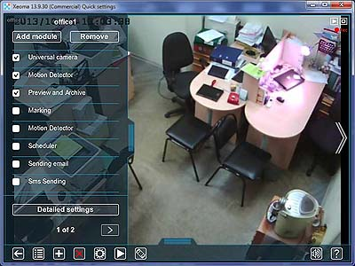
Интерфейс окна быстрых настроек содержит выдвигающуюся панель (“Левую панель”) со списком используемых для данной камеры возможностей программы Xeoma, окошки напротив которых позволяют оперативно включить или выключить их. Нажмите на название модуля, чтобы открыть его настройки. Для переключения на следующую/предыдущую камеру (цепочку) используйте стрелочки.
Нижняя панель быстрых настроек помимо иконок, описанных выше, содержит также “Стрелочку”, “Красный крест”, “Поворот” и “Громкость”.
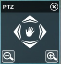
“Стрелочка” используется для возврата в предыдущее окно, в данном случае – в режим просмотра (главное окно).
“Красный крест” удаляет текущую камеру и все подсоединённые к ней модули (всю цепочку). Это действие нельзя отменить, поэтому будьте осторожны в своём выборе.
При нажатии на иконку “Поворот” активируется интуитивно-понятный PTZ контрол (управление поворотной камерой). Нажмите на “Громкость”, чтобы активировать регулятор громкости для этой камеры.
2.4. Интерфейс окна детальных настроек
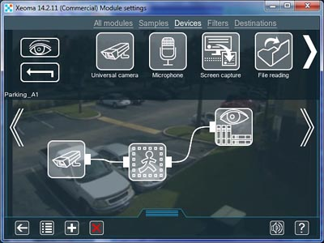
Нижняя панель этого окна имеет те же иконки, что и предыдущие экраны. Верхняя панель содержит список доступных модулей.
Модули представляют собой возможности программы Xeoma, которые можно соединять между собой, как элементы конструктора. Комбинации модулей используются для создания максимально эффективной системы видеобезопасности.
Слева от верхней панели – стрелка для перехода на предыдущий экран и иконка “Глаз” для перехода на главное окно. Под верхней панелью расположена схема работы камеры видеонаблюдения.
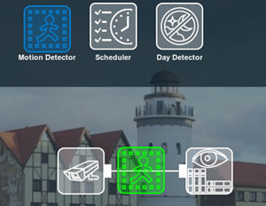 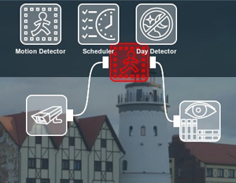
Для настройки модуля – кликните по нему в схеме. Некоторые настройки могут быть спрятаны. Чтобы развернуть их, нажмите “Показать дополнительные настройки”.
Опция “Открыть групповые настройки” в верхнем углу окна настроек модуля позволит применить внесённые изменения ко всем или некоторым модулям этого же типа (например, ко всем “Детекторам движения” или ко всем “Архивам”). Это очень удобно для быстрой настройки модулей одного типа.
Внимание: работающие соединения между модулями имеют белый цвет. Если соединения и последующие модули имеют серый цвет, значит, предыдущий модуль блокирует изображение.
Обычно для работы схемы требуется как минимум 2 модуля: 1 модуль-источник видеосигнала и 1 модуль-назначение. Например, Универсальная камера -> Детектор движения -> Просмотр и архив. Также можно создать и более сложную схему, в зависимости от задачи.
2.5. Интерфейс диалога настроек модуля
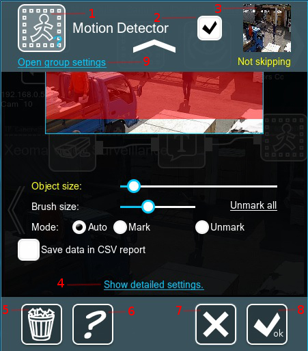
Чтобы открыть диалог настройки какого-либо модуля, Вы можете нажать либо на название модуля в перечне в левой панели в окне быстрых настроек, либо на иконку нужного модуля в цепочке.
Разные модули имеют различные настройки, но некоторые элементы повторяются.(1) – Иконка модуля, в настройках которого Вы находится. Нажмите на неё, чтобы открыть подсказку по модулю.
(2) – Состояние модуля: Включен, Включить и – только для модулей-фильтров – Пропускает. Включен – модуль работает и пропускает сигнал последующим в цепочке модулям, с которыми он соединён белыми линиями. Включить – модуль выключен, сигнал с камеры не передается последующим модулям. Пропускает – модуль игнорируется, сигнал передаётся последующим модулям, как если бы его не было в цепочке.
(3) – Изображение с камеры с комментарием, пропускается сейчас сигнал или нет.
(4) – У некоторых модулей есть опция ‘Показать дополнительные настройки’. Обычно там можно найти более сложные настройки, нужные не всем пользователям. Нажмите на надпись, чтобы открыть дополнительные настройки.
(5) – Корзина. Нажмите на эту иконку, чтобы удалить модуль. Действие нельзя отменить.
(6) – Иконка информации. Нажмите на неё, чтобы получить информацию о модуле.
(7) – Большой крест – иконка отмены. Нажав на неё, Вы выйдете из настроек модуля без сохранения последних изменений.
(8) – Большая галочка – иконка “ОК”. Нажмите на неё, чтобы сохранить последние изменения настроек и закрыть диалог.
(9) – Групповые настройки (где присутствуют) – опция позволит применить какие-то настройки ко всем или части модулей такого же типа (например, ко всем “Детекторам Движения”). Это удобно, когда нужно быстро и одинаково настроить множество модулей одного типа.
2.6. Изменение порядка камер на главном окне
Вы можете изменить порядок расположения камер на главном окне, просто перетянув изображение с камеры видеонаблюдения на нужное место (т.е. обменять ячейки просмотра местами).
Более подробная инструкция
При работе с большим количеством камер удобно использовать дерево камер. Инструкция по работе с деревом камер.
2.8. Управление поворотными камерами и зуммирование
В Xeoma можно управлять PTZ-функциями камеры (поворот, наклон, масштабирование) или, если камера не поддерживает эту возможность, пользоваться цифровым зуммированием.
1. Управление PTZ. Если PTZ-камера была успешно определена в Xeoma, а также распознаны команды для управления её PTZ-функциями, в правом верхнем углу превью камеры в Главном окне или окне Быстрых настроек появится иконка PTZ контрола. При нажатии на иконку будет открыт PTZ-контрол. Нажмите кнопки стрелок для поворота в соответствующую сторону. Нажмите на кнопки + или – для приближения/отдаления соответственно.
Решение проблем
Если камера поддерживает PTZ и контрол управления этими функциями появляется, но нажатие на стрелки или +/- не приносит результата, откройте настройки модуля “Универсальная камера” этой камеры и спуститесь до секции настройки PTZ. Попробуйте другие опции из ячейки “Доступные PTZ”. Если используется нестандартный порт для PTZ, укажите его в предоставленной для этого ячейке. Если это не помогает, попробуйте использовать другой URL для получения изображения с камеры или обратитесь за помощью в нашу техподдержку.
Если камера поддерживает PTZ, но PTZ контрол для этой камеры не появился, вы можете сделать следующее:
а) Проверить, что для камеры указаны верные данные авторизации.
б) Передобавить камеру с тем же URL.
в) Убедиться, что указан верный порт PTZ камеры.
2. Цифровой зум. Цифровой зум – это метод электронного приближения объектов без использования линзы. Если картинка с камеры достаточно большого разрешения и нужно приблизить отдалённый объект, включите зуммирование в Главном меню или меню окна Быстрых настроек и можете приближать/отдалять объекта на изображении по клику или колесом мыши (прокручивание вверх – приближение, вниз – отдаление).
3. Управление PTZ-функциями камеры в браузере – см. Веб сервер
eMap отображает область мониторинга на электронной карте, с ее помощью оператор может легко найти расположение камеры. Для этого Вам нужно загрузить в программу план объекта и указать расположение охранного оборудования.
Вам нужно перейти в меню “режим просмотра” – eMap.
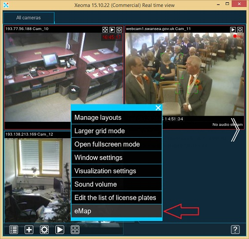
Загрузите план комнаты или здания в программу (используйте картинку в формате jpg, png, bmp).
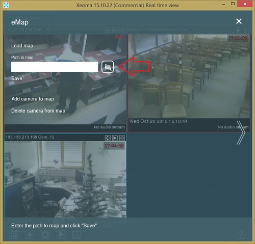
Выберите камеры из списка и укажите мышкой положения всех камер системы (они обозначаются значками) на схеме вашего объекта, задайте название и укажите угол обзора каждой камеры.
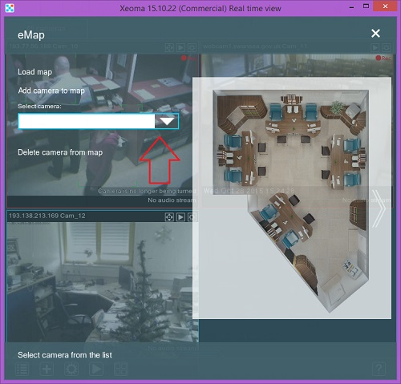
Повысить эффективность оперативного видеонаблюдения Вам помогут уже встроенные в программу детектор движения и шума. Как только сработает один из детекторов, программа покажет Вам происходящее на eMap, Вы увидите красный значок датчика и с легкостью сможете определить, в какой из комнат произошло движение или шумовой порог превысил указанный Вами лимит.
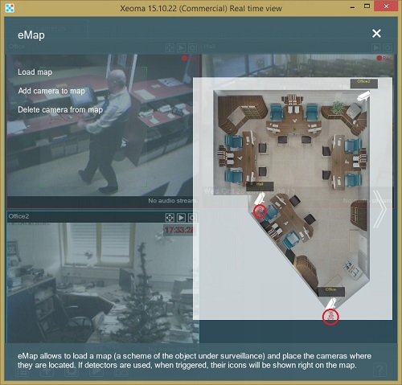
Для перехода в режим просмотра камеры, кликните на значок нужной камеры на eMap.
Многоэтажный eMap
По сути, вы можете хранить на одном сервере столько карт различных этажей, сколько вам нужно. Снова нажмите на кнопку «Загрузить карту» и введите другое имя и путь к файлу. Нажав «Сохранить», вы получите уже 2 разные карты. Между ними можно легко переключаться с помощью выпадающего меню «Выберите карту». Расставьте камеры на этой карте так же, как вы делали это на первой.
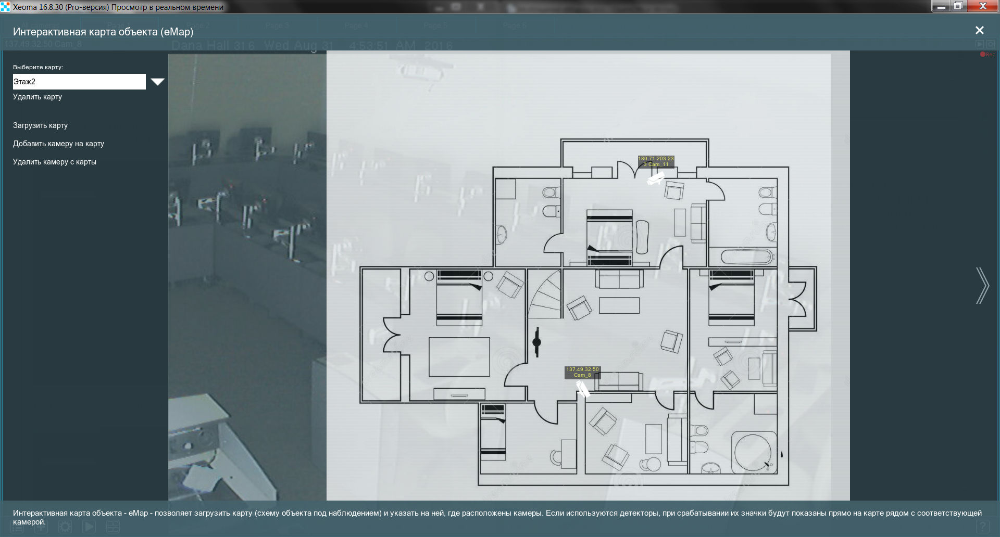
Теперь картинку с камеры можно посмотреть, просто щёлкнув по нужной камере. Более того, если в цепочке с камерой есть какие-нибудь детекторы (например, «Детектор движения»), eMap поможет вам следить и за ними. Каждый раз, когда детектор срабатывает, под нужной камерой появляется его символ, окрашенный в красный цвет.
Если одна из карт вам больше не требуется, можно нажать на её имя в выпадающем меню «Выберите карту» и щёлкнуть по кнопке «Удалить карту» ниже. Если вы где-то ошиблись при расстановке камер на карте, можно нажать кнопку «Удалить камеру с карты» и просто щёлкнуть по нужной камере. Таким образом, даже один экран может уместить всю необходимую вам информацию и при этом остаться понятным и легкодоступным.
2.10. Смена отображаемого имени камер
Если нужно сменить имя камеры или камер, отображаемых в левом верхнем углу окна просмотра всех или одной камеры, сделать это можно следующими способами:
1. Главным образом, имя (название) камер можно изменить в «Имени источника» в настройках модуля «Универсальная камера»:
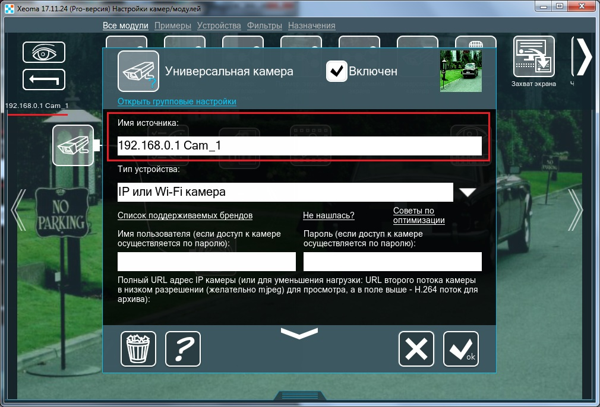
2. Также изменить имя камеры можно в настройках модуля “Просмотр и Архив” (или просто “Просмотр”):
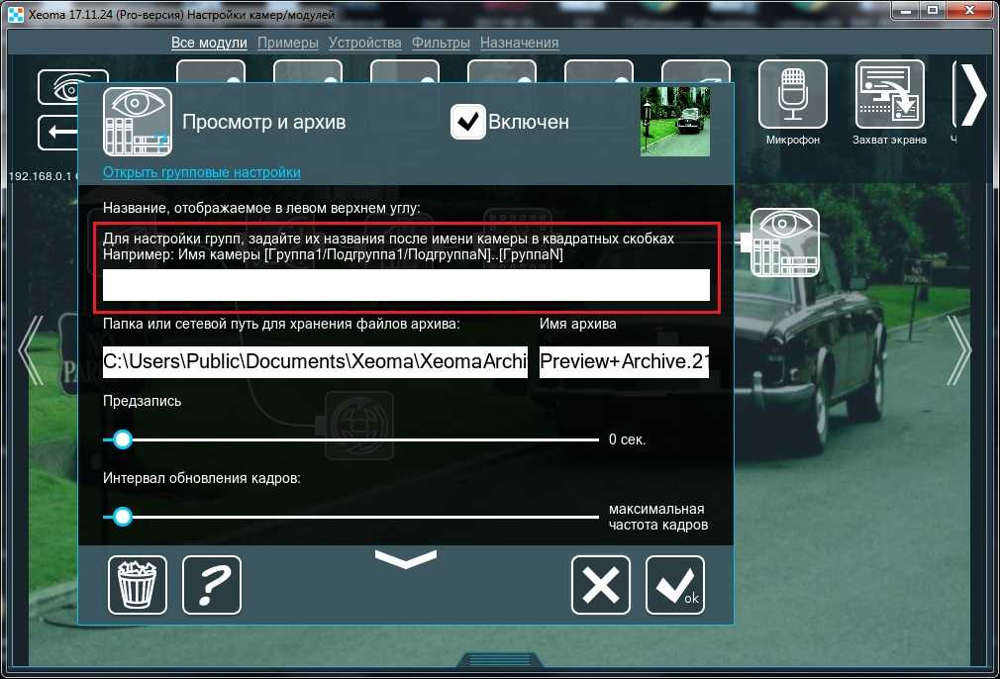
Настройки названия камеры применяются и из настроек “Просмотра и Архива” (или просто “Просмотра”), и из настроек “Универсальной камеры”, поэтому рекомендуем использовать один из указанных способов.
3. Также вы можете нажать на название камеры на Главном окне или окне просмотра одной камеры.
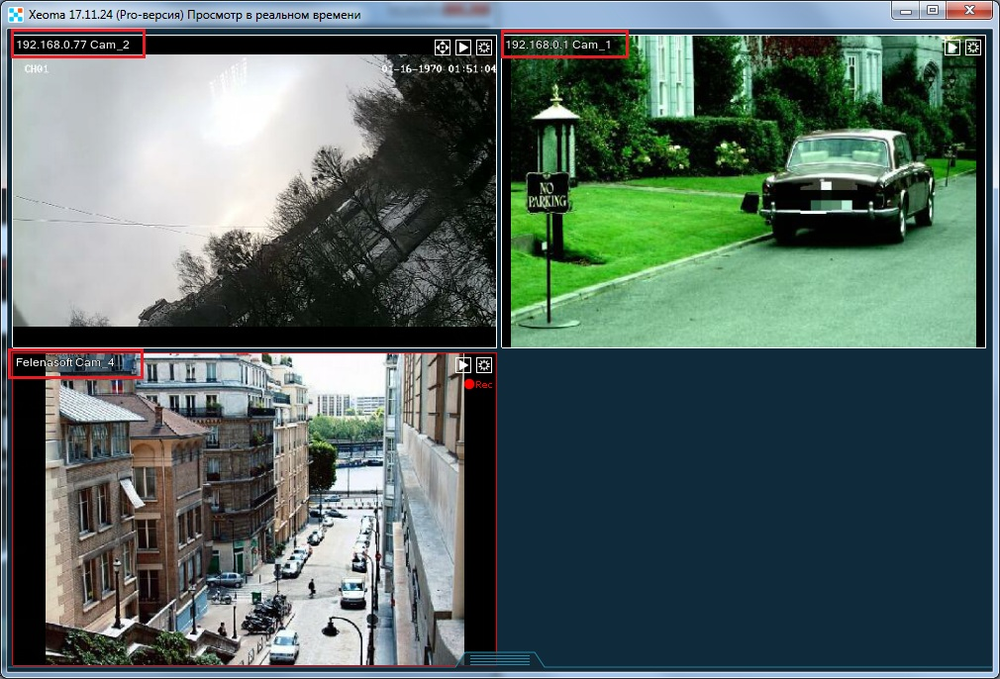
При этом прямо поверх окна Просмотра откроется диалог настройки модуля
– “Просмотр и Архив” (или просто “Просмотра”), если ранее вы не редактировали название этой камеры. См. п.2,
– “Универсальная камера”, если ранее вы уже изменяли название камеры. См. п.1
Изменение имени камеры для просмотра в веб браузерной странице, см. Веб Сервер
Настройки модулей
3.1. Источники
|
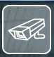 |
Универсальная камера Этот модуль позволяет выбрать источник изображения — камеру (IP, USB, включая беспроводные камеры) или установить в качестве изображения мировую Интернет-камеру («+» – «Добавить случайную камеру мира»). Отображаемое название камеры можно задать в модуле Просмотра (или Просмотр и Архив) и в модуле «Универсальная камера» (пункт «Имя источника»). |
|
Что делать, если моя камера не определилась автоматически в Xeoma? Добавление USB-камер: | |
|
Добавление случайных камер мира: 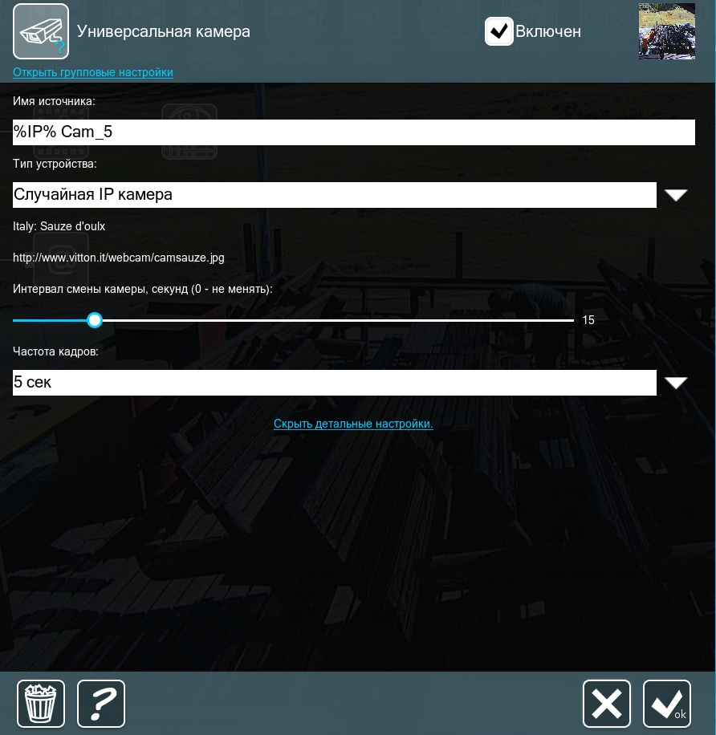 | |
|
Добавление IP камер: 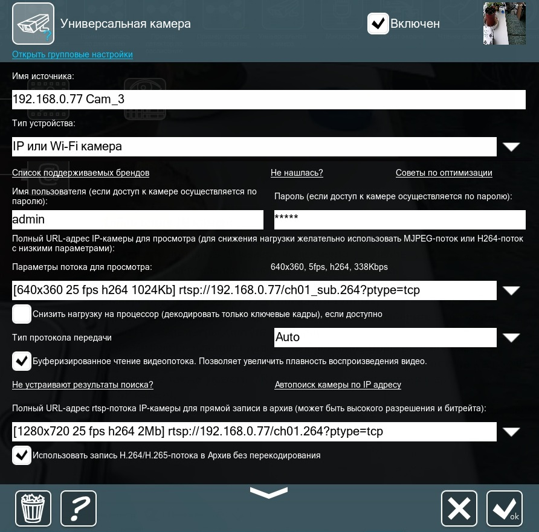 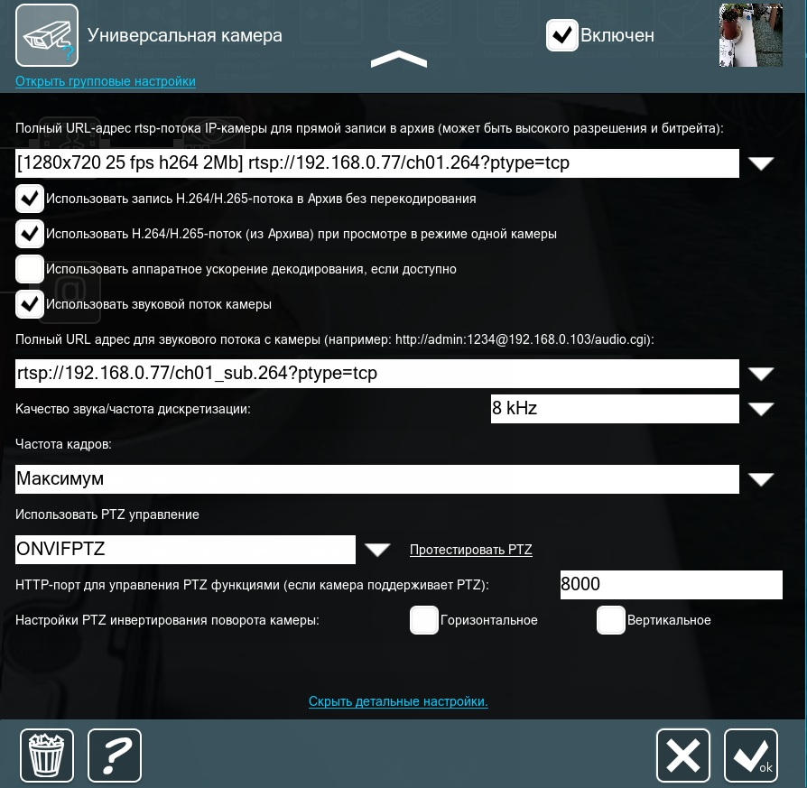 Имя источника: задать название камеры, которое будет отображаться в левом верхнем углу при просмотре камеры. Имя пользователя и пароль: задать логин и пароль к камере, если она запаролена (те же данные (логин и пароль), что используются для входа в админ-страницу камеры в браузере по ip адресу). Параметры потока для просмотра: задать URL (адрес потока) для режима просмотра всех камер (можно добавить вручную, если известен нужный адрес потока). При поиске камеры программой Xeoma обычно находятся разные URL (потоки), которые можно выбрать из выпадающего меню. В квадратных скобках [640×360 25 fps h264 1024 kb] указана информация о потоке (ее не нужно редактировать, т. к. Xeoma берет с камеры то, что уже настроено в админ-странице), в данном случае разрешение, частота кадров, формат потока и битрейт. Для оптимизации работы и снижения нагрузки рекомендуется использовать разделение потоков (поток низкого разрешения на просмотр и обычного в архив). Снизить нагрузку на процессор (декодировать только ключевые кадры), если доступно: данный пункт можно отметить галочкой для декодирования только ключевых кадров (доступно для H.264), таким образом можно снизить нагрузку на ЦП (чем выше используется разрешение для потока просмотра, тем лучше помогает данная опция снизить нагрузку на процессор). Тип протокола передачи: можно выбрать Auto, TCP, UDP, UDP Multicast Буферизированное чтение видеопотока. Позволяет увеличить плавность воспроизведения видео: данный пункт можно отметить галочкой для увеличения плавности при просмотре изображения с камеры (может вызывать задержку в 1-5 секунд от изображения в реальном времени). Полный URL-адрес rtsp-потока IP-камеры для прямой записи в архив: (может быть высокого разрешения и битрейта): задать URL (адрес потока) для записи в архив (можно добавить вручную, если известен нужный адрес потока) и для режима просмотра одной камеры – если стоит галочка «Использовать H.264/H.265-поток (из Архива) при просмотре в режиме одной камеры». При поиске камеры программой Xeoma обычно находятся разные URL (потоки), которые можно выбрать из выпадающего меню. В квадратных скобках [1280×720 25 fps h264 2 Mb] указана информация о потоке (ее не нужно редактировать, т. к. Xeoma берет с камеры то, что уже настроено в админ-странице), в данном случае разрешение, частота кадров, формат потока и битрейт. Для оптимизации работы и снижения нагрузки рекомендуется использовать разделение потоков (поток низкого разрешения на просмотр и обычного в архив) Использовать запись H.264/H.265-потока в Архив без перекодирования: данный пункт можно отметить галочкой для включения прямой записи, чтобы архив писался в формате H.264 или H.265 (для rtsp потоков). Использовать H.264/H.265-поток (из Архива) при просмотре в режиме одной камеры: данный пункт можно отметить галочкой, тогда в режиме просмотра одной камеры будет отображаться поток архива (обычно он более высокого разрешения). Использовать аппаратное ускорение декодирования, если оно доступно: данный пункт можно отметить галочкой для включения аппаратного ускорения декодирования. В Xeoma можно использовать аппаратное ускорение декодирования CUDA (для видеокарт Nvidia) и QuickSync (для процессоров Intel). Подробнее см. п. 4.14 Аппаратное ускорение декодирования Использовать звуковой поток камеры: данный пункт можно отметить галочкой для включения звука с камеры (если в камере есть встроенный микрофон). Полный URL адрес для звукового потока с камеры: в данном поле можно прописать аудио-URL (поток). Поискать его можно в админ-странице камеры в браузере (по ip адресу), в документации к камере, в Интернете или узнать у производителя. Качество звука/частота дискретизации: из выпадающего меню можно выбрать нужное значение в килогерцах. От выбора частоты дискретизации зависит частотный диапазон полученного цифрового звука. Частота кадров: из выпадающего меню можно выбрать частоту кадров: Максимум или определенную частоту кадров секунду (2, 5, 10 и т. д.) Использовать PTZ управление: если камера имеет функцию поворота и зума, то ей можно управлять в Xeoma. Из выпадающего меню можно выбрать нужный вариант использования PTZ и нажать «Протестировать PTZ». HTTP-порт для управления PTZ функциями (если камера поддерживает PTZ): в данном поле можно указать порт для PTZ (порт обычно можно посмотреть в админ-странице камеры в браузере по ip адресу). Настройки PTZ-инвертирования поворота камеры: здесь можно выбрать инверсию для PTZ, горизонтальную или вертикальную. | |
|
Для аналоговых камер: Xeoma также поддерживает видеорегистраторы – DVR, осуществляющие передачу данных по http/rtsp (есть прямые URL для MJPEG/JPEG/H264-потоков). Камеры будут определены в Xeoma как IP камеры при локальном поиске или поиске по IP/паролю. Также можно указать соответствующие URL (потоки) в ручной настройке при добавлении через меню «+» – Добавить новую камеру вручную. | |
|
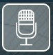 |
Микрофон Этот модуль позволяет выбрать источник звука — микрофон. Выберите микрофон из списка доступных аудиоустройств. Если микрофон не подключен или не настроен, то Вы получите соответствующее уведомление. |
|
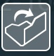 |
Чтение файла Этот модуль позволяет выбрать в качестве источника JPEG или MJPEG файлы. Отображаемое название камеры можно задать в модуле Просмотра (или Просмотр и Архив). Укажите полный путь к JPEG или MJPEG файлу, который Вы хотите использовать в качестве источника (выбранное изображение/видео будет отображаться как камера в Xeoma). 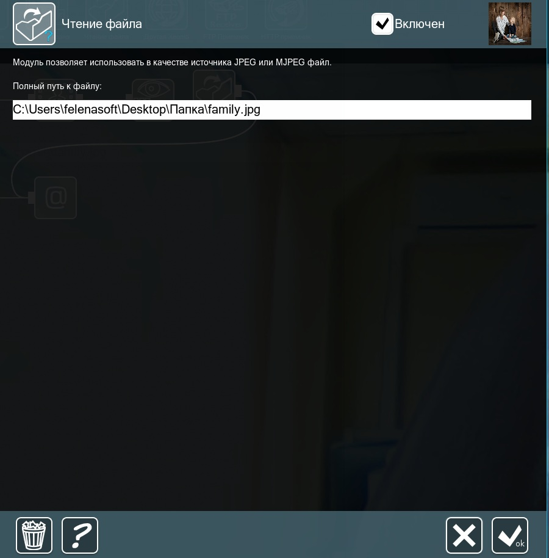 |
|
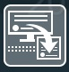 |
Захват экрана Этот модуль позволяет выбрать в качестве источника изображение с экрана (модуль можно использовать для Windows). Вы можете задать частоту снимков и размер изображения от исходного. |
|
|
Другая Xeoma Модуль позволяет принимать аудио/видео поток, транслируемый другими копиями Xeoma по сети. Для этого надо задать URL-адрес аудио/видео потока и параметры доступа (localhost можно заменить на нужный ip адрес), а в другой Xeoma использовать модуль «Веб Сервер»: В расширенных настройках можно задать разрешение изображения и частоту кадров (если выбрать параметр «Задано сервером», то будут использоваться значения той Xeoma, которая передает сигнал из модуля «Веб Сервер»). 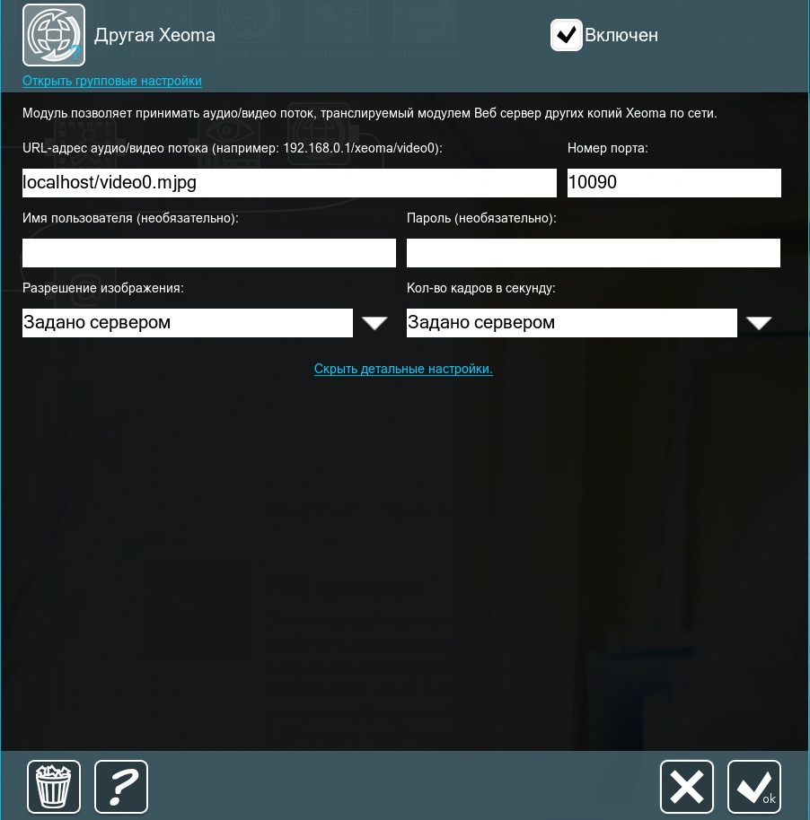 |
|
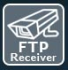 |
FTP приемник Этот модуль позволяет использовать в качестве источника видео FTP сервер (получать изображение от камеры по FTP). Этот модуль подойдёт в ситуациях, когда проброс портов от камеры на роутере нежелателен или невозможен, если камера подключена через мобильный Интернет и не имеет реального IP адреса. Настройте камеру на передачу изображения (JPEG) на FTP сервер по IP-адресу компьютера с Xeoma, используя настройки из модуля “FTP приёмник”: порт, имя пользователя, пароль. Этому источнику также можно дать имя в настройках модулей “Просмотр” или “Просмотр и Архив”. |
|
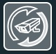 |
HTTP приемник Этот модуль позволяет получать видео и аудио по сети от другого сервера Xeoma. |
|
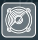 |
Звуковой сигнал Этот модуль позволяет проигрывать на сервере заданный звук при поступлении изображения. В Xeoma Pro звуковой сигнал может проигрываться на клиентах Xeoma (отметить галочкой «Включить звуковой сигнал на клиенте»). Если Вы хотите, чтобы сигнал срабатывал при обнаружении движения, подключите его после детектора движения. Можно выбрать звуковой файл в формате wav из предложенных или указать путь к файлу вручную («Звук для проигрывания» – Указать путь к файлу вручную), интервал проигрывания файла (звук будет воспроизводиться с каждым приходящим кадром, но не чаще указанного интервала) и продолжительность проигрывания (секунды, минуты, часы). Для Сервера и для Клиента можно указать разные звуковые сигналы в модуле. Нажмите «Протестировать», чтобы проверить правильность указанных настроек. 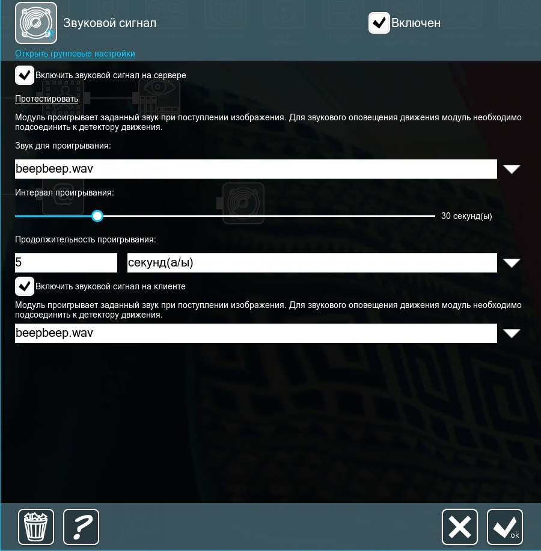 |
|
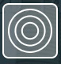 |
Запуск приложения Этот модуль позволяет запускать выбранное приложение. Если Вы хотите, чтобы сигнал срабатывал при обнаружении движения, подключите его после детектора движения. Укажите путь к запускаемой программе с использованием макросов и интервал запуска (программа будет запускаться с каждым приходящим кадром, но не чаще указанного интервала). Нажмите «Протестировать», чтобы проверить правильность указанных настроек. Данный модуль также подходит для запуска какого-либо стороннего скрипта. Доступные макросы: %JPEG% – передача в программу полного пути к JPEG-изображению, |
|
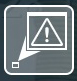 |
Всплывающее окно (на клиенте) Этот модуль позволяет автоматически разворачивать программу Xeoma из свёрнутого состояния при поступлении изображения. В настройках модуля можно задать пользователей, для которых будет включена данная опция. Модуль можно подключить к «Детектору движения» для разворачивания окна Xeoma (например, на посту охраны) при поступлении движения. |
|
Отправка sms Этот модуль позволяет организовать автоматическую отправку sms-сообщений на телефон. Выберите один из способов отправки сообщений: с помощью сайтов clickatell.com, bulksms.com, littlesms.ru, sms.ru или при помощи gsm-модема.
При выборе первых трёх вариантов Вам понадобится логин, пароль и API ID (или только API ID), полученные при регистрации на данном сайте. Для отправки с помощью модема достаточно подключить модем. Потом введите номер телефона (номера телефонов), на который (которые) будет производиться отправка sms, текст сообщения и выберите частоту отправки.
API ID (Api key) – этот ключ можно получить на том сайте, с помощью которого будет осуществляться рассылка. | |
|
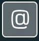 |
Отправка email Этот модуль позволяет организовать автоматическую отправку писем на электронную почту. Можно установить интервал отправки email и прикреплять поступающее с камеры видео и изображения. Также используйте макросы для работы с детекторами движения и проблем. Объединять в одно несколько событий с интервалом до…: в данном пункте можно бегунком задать интервал (в секундах) за какое время накапливать события и объединять их в одно сообщение Интервал задержки добавления картинок/видео: данный интервал можно задать бегунком в секундах Интервал отправки: можно задать бегунком время отправки сообщений Прикрепить: можно выбрать прикрепление картинки, видео или ничего не прикреплять. При выборе пункта «Прикрепить картинки» можно выбрать количество картинок, интервал между картинками и максимальный размер сообщения (Мбайт). Внизу модуля можно посмотреть максимальное число картинок при текущем максимальном размере сообщения. Максимальное количество прикрепляемых изображений рассчитывается исходя из заданного максимального размера сообщения и размера каждого изображения с данной камеры (в зависимости от разрешения и размера картинки, которые в большинстве случаев задаются в настройках камеры в её админ-странице). |
|
|
Сохранение в файл Этот модуль позволяет сохранять видео с камер по указанному пути. Данные видео предназначены для просмотра вне Xeoma (любым сторонним проигрывателем, например, VLC плеером), поэтому во встроенном проигрывателе Xeoma их просмотреть нельзя. %i%.avi – будет создавать новый файл каждую минуту, т.е. в начале следующего часа файлы начнут перезаписываться;
Также можно добавлять “/” для создания папок – т.е. если написать %d/h/i%.avi, то будут созданы папки/файл: 1/2/3.avi (текущее число/час/минута).Если записывать только jpeg картинки, можно указать параметр %#1-1000%.jpg (где 1000 – максимальный номер файла, т.е. 1000 файлов будут перезаписываться циклически), с настройкой интервала сохранения можно сделать циклическую запись нужной длины.Можно указать интервал сохранения изображений или кадров и выбрать тип сохраняемых данных. |
|
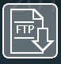 |
Загрузка на FTP-сервер Этот модуль позволяет загружать изображение или видео в заданный файл на FTP(SFTP)-сервер. В соответствующих полях укажите адрес сервера, порт и имя пользователя и пароль и поставьте галочку для безопасного соединения. Задайте путь к сохраняемому файлу, используя предложенные макросы. Можно выбрать интервал сохранения изображения или видео и тип сохраняемых данных. Нажмите «Протестировать», чтобы проверить правильность указанных настроек.
|
|
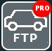 |
Отправка автономеров на FTP Данный модуль позволяет отправлять данные от детектора автомобильных номеров на FTP-сервер. Данные отправляются в виде tar-архива, содержащего JPEG-изображение, на котором был распознан номер, и текстового отчета. Текстовый отчет может содержать сам распознанный номер, его координаты на изображении, размер изображения и таймштамп. В соответствующих полях укажите адрес сервера, порт и имя пользователя FTP-сервера. Задайте путь к сохраняемому файлу, используя предложенные макросы, а также путь к файлу-шаблону отчета, который необходимо отправлять на сервер. |
|
|
Отправка HTTP команд Этот модуль позволяет формировать и отсылать HTTP запросы. Если Вы хотите, чтобы запрос отсылался при обнаружении движения, подключайте модуль после детектора движения. Установите флажок “Показать параметры” для задания параметров запроса. Используйте макрос {ID} в значениях параметров для подстановки идентификатора модуля. Вы можете увидеть результирующий запрос в поле “Конечный URL”. Подробнее: 3.14. Отправка HTTP запроса (интеграция с системами автоматизации) |
|
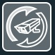 |
HTTP Отправка на другую Xeoma Этот модуль позволяет передавать видео и аудио по сети другим копиям Xeoma. Укажите номер порта и путь на удаленном сервере Xeoma, на который будет осуществляться передача видео и аудио информации.
Для ограничения доступа на удаленном сервере, задайте логин и пароль для доступа к нему. В соответствующем поле Вы увидите адрес, по которому будет осуществляться доступ к видео или изображению. |
|
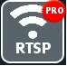 |
RTSP Транслятор Этот модуль позволяет передавать данные по сети, используя rtsp-трансляцию. Для трансляции в libx264 требуется использовать дополнительное ПО (ffmpeg). Вы можете скачать его с нашего сайта или использовать свой. Скачивая ffmpeg с нашего сайта, Вы принимаете условия лицензионного соглашения GNU GPLv2+. Если вы транслируете в mjpeg или mpeg4, где используется встроенный ffmpeg, то скачивать дополнительное ПО не требуется. Вы также можете выбрать степень сжатия видеопотока. |
|
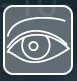 |
Просмотр Этот модуль позволяет просматривать текущее изображение в режиме реального времени. В этом модуле можно указать имя, которое будет отображаться на изображении данного Просмотра. |
|
|
Веб сервер Данный модуль позволяет просматривать изображения с камер через браузер. Ссылку можно найти в настройках модуля. При удаленном подключении ‘localhost’ в ссылке нужно будет заменить на ip адрес. При использовании веб сервера в браузере можно просматривать архив и экспортировать необходимый участок. Для каждой камеры необходимо использовать свой модуль «Веб Сервер», чтобы видеть ее через браузер по ссылке. Кроме того, можно отметить галочкой трансляцию со звуком (flv или через WebRTC) и поставить предзапись. В модуле также можно поставить пароль (верхние поля «Логин» и «Пароль» – эти данные будут для Администратора и на все используемые модули «Веб Сервер») на страницу общего входа или же запаролить конкретный поток/данную камеру при просмотре (нижние поля «Логин» и «Пароль» – для каждого модуля «Веб Сервер» можно поставить свой логин/пароль). |
|
|
Просмотр и Архив |
|
|
Детектор звука Этот модуль позволяет анализировать звуковые потоки и срабатывать, когда уровень звука превышает заданный предел. Если у вас камера со встроенным микрофоном, модуль можно подключить напрямую к «Универсальной камере». Если же микрофон установлен отдельно (например, IP-микрофон), не забудьте добавить в цепочку «Микрофон» и подключить модуль к нему. Время пост-записи – этот бегунок указывает, сколько времени после сработки детектора хранить в архиве. Пороговый уровень, % – здесь можно выставить чувствительность детектора, чтобы он реагировал только на определённые звуки (звон разбитого стекла или выстрел) и игнорировал прочие звуки (автомобильный сигнал). Обратите внимание, что чем выше выставлен бегунок, тем больше звуков детектор будет игнорировать. Текущий уровень звука, % – здесь можно увидеть, на что именно среагировал детектор, в реальном времени; это пригодится при первоначальной настройке модуля, чтобы верно выставить пороговый уровень. |
|
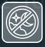 |
Детектор дня Этот модуль автоматически отсеивает кадры при недостаточном освещении (все ненужные затемненные кадры). Данный модуль можно использовать для записи в дневное время, например, на удаленных объектах, на которых настройка по «Расписанию» не будет такой актуальной. |
|
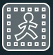 |
Детектор движения Данный модуль позволяет детектировать движение (или его отсутствие) в кадре. |
|
|
Счетчик посетителей С помощью этого модуля Вы можете вести автоматический подсчёт пересечений линии, заданной в Детекторе движения, с выводом этой информации на экран. Счётчик посетителей работает только при подключении после «Детектора движения» (опция «Непрерывное срабатывание для возможности поиска в архиве» должна быть отключена). Однонаправленный подсчет подходит для входов и/или выходов, где посетители движутся в одном направлении. Каждое пересечение линии добавит +1 к счётчику посетителей. Двунаправленный подсчет подходит, если движение может быть как внутрь, так и наружу. В таком случае +1 к счётчику посетителей прибавляется при каждом втором пересечении линии (т.е. одно пересечение линии будет считаться за 0,5). Интервал сброса счётчика задаёт, как часто начинать отсчёт заново (например, каждый новый день или в начале смены). Также Вам доступна функция сохранения отчетов в формате CSV. Настроить зону детектирования (например, провести линию на входе) необходимо в настройках модуля «Детектор движения». Подробнее см. Подсчет посетителей |
|
Детектор праздношатания Этот фильтр будет срабатывать когда какой-то объект находится в этой зоне указанное время. Подключите модуль в цепочку после модуля “Детектор Объектов”, в настройках которого выбрана зона детектирования, размер детектируемых объектов, и т.д. В настройках модуля “Детектор праздношатания” выставите время срабатывания и пост-запись (если необходимо). | |
|
Расписание Этот модуль позволяет установить дни недели и время, когда подключённые к нему модули будут работать. Вы можете указать дни недели и интервал времени работы, например, с 17:00 до 23:59 (запись ведётся до конца указанной минуты, т.е. до 23:59:59) по будням. Также можно отдельно указать время для будних дней и установить круглосуточную запись в выходные дни. Текущее время сервера указано сверху в настройках модуля. Поменять часовой пояс (при необходимости) можно через Главное меню – Удаленный доступ – Пользователи. Убедиться, что модуль срабатывает или не срабатывает в соответствии с настройками, можно с помощью надписи в правом верхнем углу настроек модуля: «Пропускает» – модуль срабатывает и пропускает сигнал, «Не пропускает» – модуль не срабатывает и не пропускает сигнал к следующему модулю. | |
|
Встроенные средства самодиагностики системы. Этот фильтр воспроизводит сообщения о нештатных ситуациях, возникающих в ходе работы Xeoma (отсутствие обновления картинки, отсутствие звука, затемнение картинки, засвет картинки, камера повернута или сдвинута, нет места на диске, заканчивается оперативная память, загруженность процессора, проверять доступ к сетевому ресурсу (отсутствие интернета), уведомлять о некорректной перезагрузке сервера (например, если произошел креш), отслеживать проблемы с базой данных, записывать найденные проблемы в лог-файл). Для каждого пункта (проблемы) можно настроить свои параметры (таймаут камеры, предел изменения яркости картинки и т.п.) – Срабатывать всегда Также данный модуль отображает на шкале интервалов в архиве, когда записи не было из-за возникших проблем (камера отключилась, была засвечена и т.д.). Осуществляет запись log-файла (логирование) о возникающих проблемах на диск в формате CSV. Для включения этой функции поставьте галочку в настройках модуля в пункте “Записывать найденные проблемы в лог-файл”. Файл логов будет храниться в папке Xeoma /Xeoma/Logs/ProblemsDetector.log
| |
|
Детектор дыма Этот модуль-фильтр позволяет обнаружить наличие дыма в зоне детектирования. Используйте шкалу порога чувствительности, чтобы установить, при каком уровне задымленности картинки должна произойти сработка. Нулевой порог чувствительности означает, что система будет очень восприимчива к любому уровню задымленности в зоне детектирования. 100 – самый высокий порог чувствительности, при котором только высокий уровень задымленности будет фиксироваться и вызывать заданное действие. Установите зону или зоны детектирования любого размера и формы. Выделите красным цветом область, в которой будет осуществляться мониторинг, и оставьте прозрачными те участки, где появление дыма может происходить без фиксирования системой. Вы можете изменить размер кисти для окрашивания или очистки зоны мониторинга. В режиме «Авто» кисть автоматически выбирает действие — выделение или очистку — в зависимости от области под кистью. Чекбокс “Непрерывное срабатывание”: если поставить галочку, детектор дыма будет фактически переведён в состояние “Пропускающий” – например, запись в архив будет идти непрерывно. Используется, если нужна постоянная запись, но Вы хотите использовать опцию поиска в архиве. Детектор будет использоваться только для сбора данных о событиях появления задымленности. Подробнее: 3.11. Детектор дыма | |
|
Детектор пересечения линии Этот модуль позволяет нарисовать в поле зрения камеры линию и реагировать на пересечение таких линий в нужном направлении, а также вести подсчёт пересечений. Подключите модуль в цепочку после модуля “Детектор Объектов”, в настройках которого выбрана зона детектирования, размер детектируемых объектов, и т.д. В настройках модуля «Детектор пересечения линии» протяните линию в зоне детектирования, по концам линии будут зеленые квадраты, нажав на которые, можно изменять размер линии и ее положение. Также у линии есть красный треугольник, показывающий в каком направлении будет идти детектирование. Чтобы задать направление линии, выберите линию и нажмите на «Поменять направление». Если у вас несколько линий, переключаться между ними вы можете с помощью списка “Выбрать линию” ниже. Отметьте галочкой «Показывать количество посетителей», чтобы программа также показывала счётчик пересечения линии. Кроме того, вы можете отметить пункт «Сохранять данные в CSV-отчет» для записи в лог. В самом логе вы можете посмотреть данные от каждого модуля, название модуля «Детектор пересечения линии» можно увидеть в настройках (например, CrossLineDetector.11). | |
|
Маскирование зон Данная функция позволяет Вам скрыть часть кадра, которая может содержать конфиденциальную информацию, от посторонних пользователей. Наша компания заботится о защите неприкосновенности частной собственности, особенно в больших городах, где в объектив Вашей камеры видеонаблюдения может с легкостью попасть окно Ваших соседей. В сочетании с фильтрами-детекторами может маскировать обнаруженные детектором объекты (например, лица или автомобильные номера). Модуль «Маскирование зон» можно подключить к модулю «Детектор движения» (рекомендуется в нем поставить режим «Сравнивать с накапливаемым фоном») или к модулю «Детектор объектов», а в модуле «Маскирование зон» поставить галочку «Использовать детектор для определения зон маскирования». Или же модуль можно использовать без детекторов и обозначить необходимую зону для маскирования в самом модуле кистью. | |
|
Объединитель С помощью модуля “Объединитель” Вы можете объединять изображения с двух видео источников в одно. Подключите к модулю «Объединитель» оба модуля «Универсальная камера», тогда на выходе будет картинка с двух источников сразу. В настройках модуля вы можете выбрать направление объединения и порядок изображений: Можно задать взаимное расположение картинок (объединять горизонтально или вертикально), а также менять порядок картинок.Обращаем Ваше внимание, что в результате объединения Вы получите также только 1 звуковой поток. | |
|
Уменьшение С помощью модуля “Уменьшение” Вы можете изменить размер поступающей картинки. В настройках модуля выберите размер результирующей картинки в процентах от размера исходной. Для записи уменьшенной картинки в архив необходимо убрать галочку с прямой записи «Использовать запись H.264 потока в Архив без перекодирования» в модуле «Универсальная камера». | |
|
Поворот изображения С помощью модуля “Поворот изображения” Вы можете повернуть или перевернуть изображение с камеры. С помощью слайдера в настройках модуля можно выбрать угол поворота изображения. Если отмечена галочкой опция “Привязать значения к интервалу в 90 градусов”, выставленное значение будет округлено в меньшую сторону до 0, 90 или 180 градусов. Если галочку снять, можно задать произвольный угол поворота. Для записи повернутого изображения в архив необходимо убрать галочку с прямой записи «Использовать запись H.264 потока в Архив без перекодирования» в модуле «Универсальная камера». | |
|
Обрезка изображения С помощью модуля “Обрезка изображения” Вы можете автоматически обрезать поступающее с камеры изображение. В настройках модуля выделите красным зону, которую нужно оставить. Невыделенные фрагменты изображения будут обрезаны. Для записи обрезанного изображения в архив необходимо убрать галочку с прямой записи «Использовать запись H.264 потока в Архив без перекодирования» в модуле «Универсальная камера». | |
|
Коррекция панорамного изображения Этот модуль позволяет устранить искажения панорамных камер (камер «Рыбий глаз» / «Fisheye») и получить картинку с камеры в привычном формате. Для записи изменений в архив необходимо убрать галочку с прямой записи «Использовать запись H.264 потока в Архив без перекодирования» в модуле «Универсальная камера». Подробнее о модуле | |
|
Реле-переключатель Этот модуль – переключатель потока. При поступлении сигнала от управляющего модуля (по умолчанию – модуль, подключённый к Реле первым, например, «Детектор проблем» или «Детектор движения» и т.д.) управляемая цепочка замыкается и начинает работать. В настройках самого модуля можно выбрать режим работы: Синхронно с сигналом (при поступлении сигнала от управляющего модуля цепочка будет замыкаться), 1й сигнал – включение, 2й – выключение и т.д. (цепочка будет замыкаться каждый последующий раз), Одноразовый, с выключением через: (цепочка замкнется один раз), Передавать главный поток, а если его нет – управляющий (при использовании нескольких модулей «Универсальная камера» можно управлять сигналами с камер, цепочка будет замыкаться если главного потока нет, т.е. если с Камеры 1 потока нет, то будет идти поток с Камеры 2). Подробнее о модуле и его настройках – здесь | |
|
Условие Этот модуль пропускает входящие потоки при заданном условии. Этот модуль, в отличие от остальных фильтров, срабатывает, когда подключенные к нему модули не пропускают сигнал. Подключите “Условие” после детекторов (фильтров) и перед модулями-назначениями. | |
|
Быстрое включение/выключение Этот модуль позволяет быстро включить последующие модули в цепочке через кнопку в нижней панели или Главном Меню. Добавьте его в нужное место в цепочке и, когда необходимо, например, чтобы начать быструю запись, нажмите кнопку в нижней панели или выберите пункт в Главном Меню. Можно задать название модуля (ID модуля). Если название одинаковое в разных цепочках, все такие модули будут срабатывать одновременно. Кроме того, в модуле можно настроить: – Отсрочка перед стартом: задержка в секундах или минутах настраивается бегунком – После включения, работать в течение: можно настроить бегунком время работы модуля после нажатия – Пост-запись: время можно настроить бегунком В настройках модуля также можно поставить галочку «Показывать имя события при активации в режиме просмотра», чтобы видеть какой именно модуль сработал (надпись отображается в правом нижнем углу). | |
|
Распознавание автономеров Данный модуль позволяет распознавать автомобильные номера различных стран, создавать белый список, сохранять логи и многое другое. | |
|
Детектор объектов Модуль автоматически обнаруживает предметы в зоне детектирования. Вы можете указать размер нужного Вам объекта, а программа с легкостью определит его местоположение в кадре. Для поиска в архиве вы можете отметить галочкой пункт «Непрерывное срабатывание для возможности поиска в архиве», тогда модуль будет работать постоянно. Настроить детектирование в модуле можно с помощью надписи в правом верхнем углу, зеленая надпись «Пропускает» означает, что модуль фиксирует объект при данных настройках, а желтая «Не пропускает» означает, что модуль не фиксирует объект при заданных настройках. Такой модуль поможет Вам контролировать, например, загруженность парковки. Подробнее: 3.12. Детектор объектов | |
|
|
Детектор оставленных предметов Модуль обнаруживает объекты, появившиеся и оставшиеся в зоне детектирования на определенное время, и может вызывать предустановленные действия-реакции. Для уменьшения количества ложных срабатываний, рекомендуется задать минимальный и максимальный размеры объектов, при обнаружении которых будет происходить сработка (модуль начнет пропускать сигнал на следующий модуль). Это поможет, например, срабатывать только на оставленный без присмотра багаж, но не на людей на платформе вокзала. Установите зону детектирования любого размера и формы. Выделите красным цветом область, в которой будет осуществляться мониторинг, и оставьте прозрачными те участки, где объекты могут находиться без фиксирования системой. Вы можете изменить размер кисти для окрашивания или очистки зоны мониторинга. В режиме «Авто» кисть автоматически выбирает действие — выделение или очистку — в зависимости от области под кистью. Вы можете задать время, по прошествии которого объект в зоне детектирования будет считаться оставленным. Например, если выставить 10 секунд, сработку будут вызывать только объекты, находившиеся в зоне детектирования дольше 10 секунд. «Непрерывное срабатывание»: если поставить галочку, детектор будет фактически переведён в состояние “Пропускающий” – видео сигнал будет передаваться дальше по цепочке непрерывно. Используется, если нужна постоянная запись, но Вы хотите использовать опцию поиска объектов в архиве. Так детектор будет использоваться только для сбора данных об объектах в зоне детектирования. |
|
Детектор лиц Этот модуль автоматически обнаруживает лица всех людей, перемещающихся в зоне детектирования. Опция “Распознавание лиц” поможет не просто выхватывать лица из потока, а также осуществлять идентификацию людей по заданным фотографиям. Для работы функции распознавания лиц предварительно нужно провести обучение – добавить лица людей, которых в дальнейшем необходимо распознавать. Обучение возможно двумя способами: в реальном времени с текущей картинки с камеры или выделить лицо при воспроизведении архива. Подробнее см. “Помощь по распознаванию лиц” в настройках модуля. Может использоваться с “Маскировкой зон” для автоматического маскирования лиц в поле зрения камеры. В настройках модуля можно настроить различные параметры: Использовать поток из архива, Пост-запись, Алгоритм детектирования лиц, Дальность обнаружения лиц, Минимальная точность распознавания, Максимальное и Минимальное количество лиц для срабатывания, Тип срабатывания. А также можно выбрать дополнительно детектировать глаза для уменьшения количества ложных срабатываний, Сохранять данные в CSV-отчет или Игнорировать объекты, исчезнувшие из поле зрения за какое-то время. Подробнее см. Детектор лиц | |
|
PTZ-слежение Этот модуль позволяет перемещать PTZ-камеру в сторону движущихся объектов. Для работы данного модуля камера должна поддерживать функции PTZ, сам модуль должен быть подключен в цепочку после модуля “Детектор движения”. Настройте чувствительность, способ детектирования и другие параметры в настройках модуля “Детектор движения”. В этом случае модуль “PTZ-слежение” будет работать соответствующим образом. Можно задать скорость реакции на движущиеся объекты (камера будет поворачиваться, если движение длиннее заданной продолжительности); время возврата в исходную позицию и ожидания до начала следующего слежения; максимально допустимый поворот камеры; максимальное увеличение; а также размер шага поворота и увеличения (влияет на скорость/угол поворота). | |
|
Маркировка С помощью модуля “Маркировка” Вы можете добавить дату и время, произвольный текст, GPS координаты или логотип (картинку) прямо в получаемое с камеры изображение. Можно задать место расположения маркировки, формат даты/времени и размер шрифта. Дата и время «Маркировки» берется из настроек пользователей (Главное меню – Удаленный доступ – Пользователи). Для записи маркировки в архив необходимо убрать галочку с прямой записи «Использовать запись H.264 потока в Архив без перекодирования» в модуле «Универсальная камера». Подробнее см. Маркировка | |
|
HTTP Маркировщик Этот модуль – комбинация “HTTP переключателя” и “Маркировки”. Способен принимать по сети команду и включать/выключать (с сохранением метаинформации) последующие модули (все модули далее в цепочке после HTTP маркировщика), при этом передавая им заданный идентификатор (ID). По идентификатору (ID) можно найти эту запись в архиве в браузере и просмотреть её (в таком случае, чтобы просматривать архив онлайн, в цепочке должен быть включен модуль “Веб Сервер”). Как и HTTP переключатель, работает по принципу размыкателя/замыкателя цепи. При получении команды на включение замыкает цепь. При получении команды на выключение размыкает цепь. При получении команды на продолжение – продолжает держать цепь замкнутой. Если в течение длительного времени не пришла команда на продолжение/выключение, тогда цепь размыкается автоматически. Например, подключите HTTP маркировщик перед архивом и отправьте запрос на URL включения, указав идентификатор (например, “id=123”). Чтобы продолжить запись в архив, отправьте команду на продолжение. Для остановки записи в архив отправьте команду выключения.Запрос можно посылать через программы автоматизации или через адресную строку веб браузера. Для записи маркировки в архив необходимо убрать галочку с прямой записи «Использовать запись H.264 потока в Архив без перекодирования» в модуле «Универсальная камера». Подробнее: 3.13. HTTP Маркировка (интеграция с кассовыми аппаратами) | |
|
HTTP переключатель Этот модуль позволяет включать/выключать последующие модули (все модули далее в цепочке после HTTP переключателя) при приеме http-запроса (можно вставить команду в адресную строку браузера вручную, использовать скрипт для отправки запроса, или же сам запрос может генерировать и отправлять какое-либо устройство, например, пожарная сигнализация, шлагбаум или домофон). Работает по принципу размыкателя/замыкателя цепи – при получении команды на выключение размыкает цепь, при получении команды на включение замыкает цепь. URL-путь для включения: при поступлении запроса по этому URL модуль не будет блокировать видеопоток, и, если указан таймаут, по его истечению модуль начнет блокировать видеопоток. Например, подключите HTTP переключатель перед архивом и отправьте запрос на URL выключения, если надо остановить запись в архив. Чтобы возобновить запись в архив, отправьте запрос на URL включения. Запрос можно посылать через программы автоматизации или через адресную строку веб браузера.Для задания/изменения времени работы используйте параметр “timeout_seconds” (например: http://10.1.10.10:10090/http_switcher_on?module=HttpSwitcher.7&timeout_seconds=5).Для получения текущего состояния модуля используйте параметр “show_status” (например: http://10.1.10.10:10090/http_switcher_on?module=HttpSwitcher.7&show_status). Подробнее о модуле – в статье Xeoma модуль: НТТР переключатель |
Этот модуль позволяет установить детектирование движения в заданной зоне, прекращение движения, проникновение в запрещенную зону, определить количество Ваших посетителей (при совместном использовании с счетчиком посетителей), позволяет контролировать активность персонала, различать подвижные объекты и фон.
Распознавание характерных визуальных признаков людей в видеопотоке. Фиксация события в журнале с возможностью поиска. Интегральный поиск по метаданным и информации от всех систем.
Установите зону детектирования любого размера и формы. Выделите красным цветом область, в которой будет осуществляться мониторинг, и оставьте прозрачными те участки, где движение может происходить без фиксирования системой. Вы можете изменить размер кисти для окрашивания или очистки зоны мониторинга. В режиме «Авто» кисть автоматически выбирает действие — выделение или очистку — в зависимости от области под кистью.
Задав размер объекта, можно уменьшить уровень ложного срабатывания на движение не интересующих объектов: слишком крупных или слишком мелких объектов, а также на полное изменение картинки, например, при перемещении камеры.
Ориентируйтесь на шкалу порога чувствительности, чтобы установить, что будет писаться в архив. Нулевой порог чувствительности означает, что система будет очень восприимчива к движению любых объектов на любой скорости. 100 – самый высокий порог чувствительности, при котором только самые крупные объекты с неоспоримым движением будут фиксироваться и вызывать заданное действие. Ориентироваться можно на верхний правый угол и надпись «Пропускает» (в таком случае движение детектируется, и запись ведется) и «Не пропускает» (в таком случае движение не детектируется).
Шкала “текущий уровень” поможет Вам определить, движения какой скорости и интенсивности вызывают данный уровень чувствительности и какое значение Вам следует задать.
Чекбокс “Непрерывное срабатывание для возможности поиска движению в архиве”: если поставить галочку, детектор движения будет фактически переведён в состояние “Пропускающий” – запись в архив будет идти непрерывно. Используется, если детектор движения не нужен (напротив, нужна постоянная запись), но Вы хотите использовать опцию поиска по движению в архиве. Детектор будет использоваться только для сбора данных о движении.
Пост-запись: время, в течение которого будет продолжаться передача сигнала далее по цепочке после окончания сработки (движения).
Игнорировать движения короче: можно указать значение в секундах. В таком случае движение короче отмеченного промежутка детектироваться и записываться в архив не будет.
Способ детектирования: в выпадающем меню можно выбрать опцию «Сравнивать соседние кадры» (при таком варианте за основу берется сопоставление нескольких соседних кадров) или «Сравнивать с накапливаемым фоном» (при таком варианте сравнивается несколько кадров, и одинаковый фон накапливается). Опция «Сравнивать с накапливаемым фоном» может быть полезна при исключении ложного срабатывания, например, при присутсвии в кадре постоянно движущихся облаков, деревьев и т. п.
С помощью опции “Детектировать только отсутствие движения в течение” можно заставить детектор движения работать наоборот – срабатывать, когда движение в поле зрения камеры прекратилось (например, при мониторинге счётчиков или оборудования). Слайдером задайте время, в течение которого движение должно возобновиться, иначе произойдёт сработка последующих модулей.
Сохранять данные в CSV-отчет: логи от детектора движения можно сохранять в CSV-отчет.
Настройки в детекторе движения меняют цвет в зависимости от того, блокируют ли они видео или пропускают дальше по цепочке. Жёлтый цвет – видео блокировано, зелёный – видео передаётся последующим модулям.
Если в течение последних 5 минут было обнаружено движение в заданном секторе, соответствующее превью в режиме просмотра подсвечивается цветом в цветовом интервале от красного до белого (чем цвет светлее, тем больше времени прошло с момента обнаружения движения). При этом на изображении появляется время последнего обнаружения движения. При наведении мыши на такое изображение – рамка приобретает розовый цвет. Если движение не было зафиксировано в течение последних 5 минут – рамка белая, при наведении – голубая.
Настройки модуля “Просмотр и Архив”
Модуль “Просмотр и Архив” позволяет сохранять поступающее изображение в архив программы для видеонаблюдения с возможностью последующего просмотра и выводит это изображение на экран. Как и модуль «Просмотр», он позволяет просматривать текущее изображение в режиме реального времени. Система интерактивного поиска в архиве по заданным параметрам.
При использовании в комбинации с детектором движения ячейка просмотра подсвечивается цветом в цветовом интервале от красного до белого, если в течение последних 5 минут было обнаружено движение (чем цвет светлее, тем больше времени прошло с момента обнаружения движения). При этом на изображении появляется время последнего обнаружения движения. Если движение не было зафиксировано в течение последних 5 минут – рамка белая, при наведении – голубая.
В настройках модуля можно указать имя, которое будет отображаться на ячейке просмотра данной камеры. Оно же будет использоваться в функции “eMap” и “Дерево камер”. Как изменить размер шрифта, см. “Режимы просмотра”.
Папка или сетевой путь для хранения файлов архива: в данном поле можно указать путь до папки, в которую нужно сохранять архив
Имя архива: в данном поле можно указать название папки, в которую будут сохраняться видеофайлы. Название папки, в которую сохраняются записи с каждой отдельной камеры, указано под ячейкой пути и имеет вид Preview.Archive.{Число} – эта информация пригодится при поиске записей Xeoma непосредственно на диске. Название можно использовать любое, но модифицировать название Preview+Archive.XX не нужно (не менять цифры), т.к. это название системное и предназначено для использования программой Xeoma.
Предзапись: можно указать бегунком необходимое время предзаписи (события, предшествующие вызвавшему сработку событию, и произошедшие в течение заданного промежутка времени от него, будут также сохранены в архив)
Интервал обновления кадров: можно указать бегунком частоту кадров для записи архива
Максимальное суммарное время хранения этого архива: можно указать нужное время бегунком. Обратите внимание: теперь учитывается не фактическое время создания файла, а общая продолжительность архива. Например, если есть записи 1 час, сделанные 32 дня назад, и 1 час за сегодня, продолжительность записи в архиве для автоудаления по настройке длительности хранения будет считаться 2 днями, а не 32 днями, как раньше, т.е. 1 час месячной давности теперь не удалится при выставленнной настройке времени хранения архива 1 месяц;
Максимальный размер архива: место, которое будет занимать архив на жёстком диске. Можно указать в Мб, Гб или оставить без ограничений
Всегда оставлять свободного места на диске (“глобальная”, общая настройка для всех архивов): данный параметр будет регулировать место на диске и всегда оставлять заданное место свободным (старый архив будет перезаписываться). Можно выставить количество Мб или Гб бегунком.
Размер изображения (в % от оригинального) и Качество изображения (%): позволяют уменьшить размер изображения и качество сохраняемого изображения в % от исходного для экономии занимаемого места. Можно задать бегунком
Визуализация и поиск по движению в архиве: данный пункт необходимо отметить для возможности поиска по движению в архиве
Отображать предупреждения при обнаружении проблем с записью архива: отметьте этот пункт галочкой, если хотите получать на главном экране сообщений об ошибках с записью архива
Включить коррекцию панорамного изображения: данная опция предназначена для записи архива с камер ‘Fisheye’/ «Рыбий глаз». Если вы используете разделение потоков с вашей Fisheye-камеры в Xeoma и хотите разворачивать изображение и на превью, и в архиве, отметьте этот пункт галочкой. Также эту опцию нжно включить, если развертка fisheye-изображения нужна только в архиве без использования модуля “Коррекция панорамного изображения”.
В конце настроек модуля можно найти статистическую информацию: доступное место на диске, размер архива, средний размер архива в день, количество всех дней (всего дней) и размер всех архивов.
Обратите внимание: благодаря цикличной записи, если заданный размер архива будет превышен, запись продолжится поверх самых старых записей. Однако, если глобальная настройка обязательного свободного места на диске не оставит Xeoma места для сохранения архивов, запись остановится.
Просмотр архива
Записи, сделанные модулем “Просмотр и Архив”, будут сохраняться в каталог пользователя по умолчанию или по заданному Вами пути. Архив Xeoma снабжен удобным встроенным проигрывателем, перейти в который Вы можете с помощью кнопки “Play” в окне просмотра всех камер или в окне быстрых настроек. В проигрывателе Вы можете просматривать записи, в то время как запись продолжается. Временная шкала архива регулируется от секунд до дней, таким образом, Вы можете легко и быстро найти необходимый временной отрезок и начать воспроизведения именно с этого момента.
Масштаб временной шкалы изменяется перетягиванием бегунка вправо или влево или прокруткой колёсика мышки. Благодаря перемотке найти нужный момент не только легко, но и быстро – нажмите на стрелки, расположенные по бокам временной шкалы, для перемещения на минуту вперёд/назад при непрерывной записи или на следующее/предыдущее движение, если запись ведётся по детектору движения. Удерживайте стрелки, чтобы быстро “промотать” шкалу. Вы можете настраивать скорость воспроизведения записей, чтобы, к примеру, пролистать в ускоренном режиме не интересующие Вас фрагменты и сосредоточиться на заслуживающих более пристального внимания отрезках. Также быстрый переход обеспечивает календарь, где Вы можете выбрать дату и время события и открыть его.
В меню проигрывателя архива есть опции “Открывать архив на” (“Стартовая позиция”), “Экспорт”, “Удаление” и “Поиск по движению”. Первая позволит Вам выбрать, с какого момента начинать воспроизведение при последующих открытиях архива (за 5 минут до конца, с начала или с того момента, где Вы остановились в последний раз – этот вариант используется по умолчанию).
С помощью Экспорта Вы можете экспортировать любой отрезок в нужном формате (mjpg, wmv, MPEG-4 avi, H.264 avi), сохранить кадры в JPEG, например, для передачи видео/фото доказательств в следственные органы. Выберите эту опцию – над временной шкалой появятся маркеры – белые треугольники. Перетаскивая их, выберите нужный отрезок и снова выберите пункт “Экспорт”. Появится новое окно, в котором Вы можете дать имя фрагменту, выбрать директорию для сохранения и указать формат, в который его необходимо конвертировать.
Ещё проще сделать снимок можно с помощью опции Скриншот в Меню архива. Теперь вы можете Выбрать место сохранения скриншота, оно может быть Сохранять на клиенте и сервере или Сохранять только на клиенте. Чтобы быстро открыть папку со всеми уже сделанными скриншотами, выберите Открыть каталог сохранения. Также можно Отправить на печать или Отправить по почте (скриншот будет отправлен на указанный e-mail адрес).
С помощью “Удаления” можно безвозвратно удалить фрагмент из архива. Работает он по схожему с “Экспортом” принципу – с помощью белых маркеров выделяется отрезок, затем в меню снова выбирается этот пункт.
Если некая часть видео слишком мала, чтобы рассмотреть её как следует, то можно использовать цифровое увеличение. Нажмите на Включить режим зума в Меню архива. Теперь можно увеличивать и уменьшать изображение в том месте, где находится курсор, с помощью колёсика мыши. Ещё можно просто щёлкнуть мышью на том месте, где требуется увеличение. Также, зажав левую кнопку мыши, можно выделить рамкой область для увеличения.
Если вам нужно расширить свой Архив за счёт видеозаписей, сделанных не с помощью Xeoma, важно будет заставить Архив «увидеть» нужные файлы. Для этого можно выбрать пункт Выполнить переиндексацию архива в Меню архива.
Профессиональные возможности в Архиве
Одновременный просмотр нескольких архивов
Если вы хотите просматривать видеозаписи с нескольких камер одновременно, можно нажать на Выбрать камеры для воспроизведения в Меню архива. После этого щёлкните мышью по нужным камерам, чтобы их выделить, и нажмите на кнопку Архив. На экране будет несколько изображений, а полосы внизу будут иметь разные цвета, указывая на разные камеры.
Визуализация обнаруженного движения
Функция визуализации движения не просто обнаружит движущиеся объекты, но и обеспечит их непрерывное сопровождение (трассирование).

Возможность создать неудаляемые отрезки в архиве
Выделите определенный отрезок времени в Архиве и обозначьте его как неудаляемый (Архив-> Главное меню-> Удаление интервала-> Задать неудаляемый интервал). Эта функция позволит Вам не потерять важные отрезки записи и сведет на минимум возможность их удаления операторами.
Поиск по движению (области)
Поиск по движению делает навигацию в Архиве проще и удобнее. Функция позволит найти события с движением в интересующей Вас области. Выберите этот пункт и выделите на изображении с камеры прямоугольник, где будет выполнен поиск по движению. Найденные события будут выделены на временной шкале зелёным цветом. Одновременно может быть выделено несколько таких зон для поиска. Чтобы удалить какую-либо зону, кликните внутри неё. Чтобы удалить все выделенные области, выберите соответствующий пункт в меню.
Поиск по номерам
Если вы пользуетесь модулем «Распознавание автономеров», Архив поможет вам просмотреть результаты его работы. Нажмите на Поиск по автомобильным номерам в Меню архива, чтобы выбрать один из обнаруженных номеров. Xeoma сразу отобразит нужную часть Архива с нужной машиной. Также можно посмотреть Журнал автомобильных номеров, чтобы увидеть все обнаруженные номера в хронологическом порядке (можно переключаться между днями с помощью календаря).
Добавление лиц для распознавания
Если вы пользуетесь модулем «Детектор лиц», то можно обучить Xeoma распознавать конкретное лицо прямо из Архива. Для этого нужно выбрать Выделить лицо и добавить в базу данных в Меню архива. После этого нужно указать имя человека и выделить рамочкой его лицо на видео.
Использование цифровых и сетевых видеорегистраторов (NVR и DVR)
Xeoma может работать с цифровыми (DVR) и сетевыми (NVR) видеорегистраторами. Это позволяет использовать существующие аналоговые камеры внутри IP сети и централизованно управлять как аналоговыми, так и IP-камерами.
Так как емкость DVR / NVR ограничена, Xeoma легко поможет Вам эффективно использовать дисковое пространство, используя следующие факторы: сжатие и разрешение видео, запись при обнаружении движения. Используя Xeoma, Вы сможете легко оптимизировать свою работу с DVR или NVR.
Альтернативные методы снижения объёма архива
Вы также можете использовать модуль “Сохранение в файл” и сохранять видео в других кодеках (в том числе высококомпрессионном H.264), что позволит сильно сэкономить место на диске для длительного хранения (однако, эти записи не могут быть воспроизведены встроенным проигрывателем архива).
Или, если у вас камеры rtsp (H264), Вы можете настроить прямое сохранение записей в архив без перекодирования.
Каким проигрывателем можно проиграть .xem файлы архива? Читайте об этом в нашей секции «Вопросы и ответы».
Калькулятор минимальных системных требований поможет Вам оценить необходимое дисковое пространство для планируемой системы видеонаблюдения.
3.6. Детектор лиц и распознавание лиц
Помимо прочих полезных функций, Xeoma позволяет настроить камеру на реагирование на лица. Она может реагировать как на любые лица, так и на конкретный набор лиц. Это включает в себя создание полноценного списка лиц, попавших в поле зрения камеры. Такая возможность особенно полезна для надзора за деятельностью штата сотрудников или для создания автоматических охранных систем, предотвращающих несанкционированный доступ на охраняемые объекты.
Система позволяет распознавать лица людей, находящихся в движении. Высокая точность распознавания и идентификации обусловлена использованием для сравнения нескольких ракурсов лица. Схема работы: захват, распознавание и сохранение биометрических векторов лиц при нахождении лица в кадре в онлайн-режиме. Комбинация собственных алгоритмов и алгоритмов стороннего производителя.
Xeoma можно настроить так, чтобы она игнорировала малое число людей или прекращала запись каждый раз, когда превышено определённое число людей в кадре. Может быть, вы не хотите, чтобы камера обращала внимание на людей, которые просто проходят мимо? Хотите быть уверены в том, что Xeoma не примет одного человека за другого?
Детекция лиц
Всё это можно сделать с помощью модуля «Детектор лиц». Вставьте его в цепочку и щёлкните по нему мышью, чтобы зайти в его настройки. Если вам нужно, чтобы модуль просто обращал внимание на все лица, проходящие через поле зрения камеры, то выберите «Реагировать на любые лица» в выпадающем меню «Тип срабатывания». С помощью бегунка можно также настроить минимальное количество лиц в кадре, необходимое для срабатывания (повысьте это значение, если в наблюдаемом месте не должны толпиться люди – например, в магазине, если очередь состоит из больше, чем 3 человек). Зайдя в детальные настройки, вы сможете указать, в каких именно частях поля зрения камеры нужно отслеживать лица (аналогично Детектору движения). Ещё можно настроить дальность распознавания: например, если камера стоит в узком месте (коридоре), где лица людей всегда находятся довольно близко к объективу, то лучше установить дальность на «Малую» или «Среднюю». Чем больше дальность, тем выше нагрузка: можно выбрать бегунком необходимое расстояние. Актуально для камер, закрепленных под различными углами и на различном расстоянии, например, от двери (если нужно распознавать лица входящих людей)
Распознавание лиц
Если же вам необходимо распознавание только определённого набора лиц, (к примеру, подозреваемых в несанкционированном доступе) то Xeoma можно этому обучить. Есть 2 способа:
1) В настройках модуля «Детектор лиц» укажите имя человека (или иной идентификатор) и щёлкните мышкой по кнопке «Обучить распознаванию», когда в кадр попадёт то лицо, которое вам нужно сохранить. Xeoma добавит это лицо в свою базу данных, предварительно привязав к нему указанное имя (или иной идентификатор).
2) Если необходимое вам лицо уже попадало в поле зрения камеры, то можно зайти в архив и добавить его оттуда. Щёлкните мышью по кнопке «Архив» под нужной камерой, найдите кадр с нужным лицом (чем крупнее, тем лучше) и нажмите «Меню архива» → «Выделить лицо и добавить в базу данных». Теперь просто введите имя человека и выделите его лицо рамочкой. Готово!
Имея базу данных на несколько лиц, вы теперь можете настроить «Детектор лиц» на реагирование только на указанные лица или только на неизвестные лица. Второй вариант особенно полезен для наблюдения за посторонними лицами. При выборе любой из этих опций, вы увидите полную базу данных ниже в виде списка имён (или иных идентификаторов) с полями для галочек. Таким образом, вы сможете заставить Xeoma распознавать только конкретные лица и игнорировать все остальные либо обращать внимание только на неизвестные лица.
Не забудьте также про бегунок «Минимальная точность распознавания». Он позволит вам настроить, насколько похоже должно быть лицо на оригинал, чтобы камера его распознала. Если вы видите, что камера иногда, к примеру, путает незнакомых людей с внесёнными в список лицами, установите этот бегунок на значение повыше. Люди, распознанные с меньшей точностью, учитываться не будут.
Ещё настройки модуля:
Использовать поток из архива (высокого разрешения) для детекции: отметить галочкой для использования 2го потока из модуля «Универсальная камера» (обычно этот поток более высокого разрешения).
Пост-запись: отметить бегунком необходимое время
Игнорировать объекты, исчезнувшие менее чем за: отметить галочкой для пропуска найденных лиц, которые нашел модуль, если они появились в кадре за время, отмеченное в этом пункте бегунком (т.е. если лицо в кадре было менее 1 секунды, и в модуле стоит галочке в этом пункте, то лицо записываться в архив не будет).
Алгоритм детектирования лиц: можно выбрать «Лучше» (тогда потребуется чуть больше времени на обнаружение лиц) или «Быстрее» (тогда обнаружение лиц будет происходить быстрее, но с чуть более меньшей точностью)
Дополнительно детектировать глаза для уменьшения количества ложных срабатываний: можно отметить галочкой (актуально, например, для детектирования людей в очках)
Тип срабатывания: можно выбрать «Реагировать на любые лица» (тогда модуль будет детектировать любое лицо в кадре), «Реагировать только на выбранных людей» (тогда модуль будет детектировать только те лица, которые были внесены в модуль при обучении) или «Реагировать на неизвестных и невыбранных людей» (тогда модуль будет «пропускать» сигнал на следующий модуль при обнаружении лиц, не добавленных в базу данных, т.е. тех, которые не были внесены в модуль при обучении))
Минимальное количество лиц для срабатывания: можно указать от 1 до 99
Максимальное количество лиц для срабатывания: можно указать от 1 до Неограниченно
Сохранять данные в CSV-отчет: можно отметить галочкой для записи логов
Интеграция с внешними устройствами
Распознавание лиц может использоваться для автоматизации охранного наблюдения, например, на КПП. При появлении сотрудника компании может открываться шлагбаум, а при обнаружении не авторизованных лиц поступать тревога. Для этого в цепочке после Детектора лиц добавьте нужный модуль: для отправки команд внешним устройствам – модуль «Отправка http команд», для включения сигнализации – модуль «Звуковой сигнал», для поворота камеры в сторону не авторизованного лица и слежения за ним – модуль «PTZ слежение» и т.д.
Может использоваться с “Маскировкой зон” для автоматического маскирования лиц в поле зрения камеры.
Подсчет посетителей – уникальная функция, которая позволит Вам провести эффективную аналитику посещаемости Вашего магазина, офиса, салона и любого другого помещения. Позволяет исключать из подсчета персонал.
Для того, чтобы начать подсчет посетителей – установите модуль “Подсчет посетителей” после модуля “Детектор движения”
Обозначьте вход линией (проведите маркером черту), при переходе через которую будет вестись счет посетителей.
Вы можете настроить модуль “Подсчет посетителей”, для того, чтобы Вам было удобнее собирать данные. Есть возможность выбрать способ подсчета (Однонаправленный или двунаправленный) и выставить интервал сброса счетчика. При однонаправленном подсчёте каждый раз, когда линия будет пересечена, программа засчитает это за 1 посетителя (пригодится, когда люди идут всегда в одном направлении). При двунаправленном подсчёте только каждое второе пересечение черты считается за 1 посетителя (полезно, когда посетители и входят, и выходят через одну и ту же дверь).
Также, Вы можете сохранять полученные данные в CVS-отчет, который покажет Вам в какое время заходили посетители. Эти отчёты отлично подходят для хранения статистических данных и использования их в иных программах для анализа и обработки.
Для увеличения эффективности подсчета посетителей рекомендуем Вам установить камеру перпендикулярно полу, над головами входящих/выходящих. Это поможет Вам избежать ложных срабатываний счетчика, вызванных проекцией изображения.
Если к одному серверу у вас подключено несколько камер, то, разумеется, на одном экране у вас скопится несколько изображений. В такой ситуации особенно важно уследить за расположением всех камер и указанными ими маркерами даты и времени. Например, работнику охранной компании всегда необходимо очень чётко представлять, куда ему бежать, если камера заметит что-то подозрительное, а времени на раздумья почти нет.
Разработчики Xeoma всё это учли. Вышеуказанные функции с успехом выполняет модуль «Маркировка». Его нужно всего лишь добавить в цепочку, на любую позицию, и щёлкнуть по нему мышью, чтобы увидеть его настройки.
В первую очередь, нужно выбрать необходимый «Тип маркировки» в верхней части окна.
а) Выбрав «Дату и время», вы можете настроить «Формат даты/времени» в выпадающем меню немного ниже. Особое внимание стоит обратить на бегунок «Размер шрифта». Чаще всего неопытные пользователи не могут найти маркер на изображении по той простой причине, что шрифт слишком маленький. Надо сказать также, что некоторые камеры выводят маркер даты и времени на экран самостоятельно (это задается в настройках самой камеры).
б) Выбрав «Произвольный текст», вы можете ввести в нижнее поле «Текст» любую информацию. Наилучший способ применения этой функции — указать прямо на картинке, какую территорию осматривает камера и где она находится (хотя для этого также может использоваться опция «Название камеры» в настройках модуля «Просмотр и Архив», но там расположение этой надписи выбрать нельзя).
в) Перед тем, как выбрать GPS координаты, убедитесь, пожалуйста, что и к камере, и к серверу подсоединено соответствующее GPS оборудование. Если всё сделано правильно, на картинке с камеры вы увидите широту, долготу, высоту и скорость (если объект движется).
г) “Картинка в картинке”: Выбрав «Изображение», вы можете либо вручную прописать в строке «Путь к изображению для наложения» полный путь до файла, либо щёлкнуть мышью по кнопке справа, чтобы выбрать нужный файл через проводник. Не забудьте также про бегунки «Масштаб (по сторонам)» и «Прозрачность». Они помогут вам настроить изображение так, чтобы оно не закрывало важные части видео. С помощью этой функции можно прицепить к картинке карту с указанием позиции камеры на ней, чтобы было проще ориентироваться. Также можно накладывать на изображение с камеры ваше лого.
Для всего вышеперечисленного можно также настроить «Расположение на экране», выбрав любой из четырёх углов.
Может быть, вам нужно несколько маркеров на одной картинке? Не беда! Достаточно просто установить несколько модулей «Маркировка» в одну цепочку и настроить их на указание разной информации в разных углах экрана.
Как видите, сколько бы детекторов ни работало с вашей камерой, всю необходимую информацию совсем несложно расположить так, чтобы она всегда была под рукой.
Маркировка Xeoma в архиве
«А можно ли как-то увидеть маркировку и в архиве?» Если вы сохраняете видео в архив напрямую (т.е. в поле «Использовать запись H.264-потока в Архив без перекодирования» СТОИТ галочка), то дата и время будут указаны на записи в виде субтитров (вскоре произвольный текст тоже будет доступен в виде субтитров). Для MJPEG записей .xem (без прямого сохранения в архив) доступны все варианты маркировки.
Этот модуль – переключатель потока. При поступлении сигнала от управляющего модуля (по умолчанию – модуль, подключённый к Реле первым) управляемая цепочка замыкается и начинает работать.
Например, подключите к Реле две камеры. После первой камеры, но перед Реле подключите Детектор движения. При детектировании движения с первой камеры в таком случае будет включаться вторая камера (в зависимости от выбранного режима работы Реле возможны различные типы поведения после окончания движения с первой камеры) – её видеопоток будет передаваться к последующим после Реле модулям.Вы можете выбрать режим работы Реле:
Синхронно с сигналом – срабатывать и работать, только когда от управляющего модуля идут сработки, заканчивать при поступлении не-сработки от управляющего модуля.
1й сигнал – включение, 2й – выключение – срабатывать при первом управляющем сигнале, отключаться при следующем управляющем сигнале.
Одноразовый, с выключением через: – срабатывать только в момент сработки, поступления сигнала от управляющего модуля.
Реле: запуск слежения при сработке на обзорной камере
Если необходимо обеспечить охрану обширного здания (например, склада) с помощью всего пары камер, сделать это можно так. Для этого понадобится одна камера с узким углом обзора и одна с широким. Первую нужно установить так, чтобы она хорошо контролировала вход в здание. Вторая должна просматривать большую часть внутренней части здания. Вход, разумеется, должен быть под круглосуточным наблюдением, а вот второй камере нет смысла что-то отслеживать, пока не среагировала первая.
Здесь первая камера подсоединена к «Детектору движения», так что всё движение она записывает в архив с помощью модуля «Просмотр и архив». Однако «Детектор движения», в свою очередь, соединён ещё и с «Реле-переключателем». Этот модуль не позволяет второй камере что-либо записывать просто так.
Теперь можно изменить настройки «Реле-переключателя» таким образом:
Теперь, когда первая камера засечёт движение в дверях, вторая начнёт непрерывную запись, чтобы можно было приглядывать за действиями вошедшего. Когда первая камера вновь заметит движение (человек выходит из здания), вторая прекратит запись. Таким образом можно сэкономить и место на диске, и интернет-трафик, не ухудшая свою систему безопасности.
Если на второй камере есть функции PTZ, то её можно заставить «провожать» визитёра. Все фильтры, которые вы хотите применить ко второй камере, можно поставить ПОСЛЕ «Реле-переключателя». Цепь будет выглядеть примерно так:
Таким образом, у вас получится достойная охрана здания за очень умеренную цену.
3.10. Автоматическая маскировка зон
Данная функция позволяет Вам скрыть часть кадра, которая может содержать конфиденциальную информацию, от посторонних пользователей. Наша компания заботится о защите неприкосновенности частной собственности, особенно в больших городах, где в объектив Вашей камера видеонаблюдения может с легкостью попасть окно Ваших соседей.
В сочетании с фильтрами-детекторами может маскировать обнаруженные детектором объекты (например, лица или автомобильные номера).
Может использоваться самостоятельно — если требуется постоянная маскировка статичных объектов (например, окна соседей)
(галочка про детектор в настройках модуля не стоит и в настройках модуля выбираете зону, которую нужно маскировать.)
или в сочетании с детекторами – после детектора движения, детектора номеров, детектора лиц в зависимости от того, что нужно маскировать (галочка стоит, зона выбирается в детекторе).
Маскировка будет применена на изображении с камер в режиме реального времени и в архиве, в т.ч. и для просмотра через браузер (исключение: при использовании функции прямое сохранение в архив модифицирующие поток фильтры не работают, включая маскировку).
Одним из нововведений Xeoma является «Детектор дыма». С ним вы всегда можете быть уверены, что в случае пожара, вы первым об этом узнаете. Разберём функции этого модуля поподробнее.
Если включить Непрерывное срабатывание, то модуль будет пропускать поток дальше в Архив. Так впоследствии можно будет искать обнаруженный дым в Архиве. Порог чувствительности не позволяет детектору срабатывать в нормальных обстоятельствах (например, когда есть слабый дым от зажжённой спички или сигареты). Но если в помещении, где установлена камера, дыма не должно быть совсем (если малейшее возгорание особо опасно), то этот бегунок можно выставить ниже. Бывает так, что в просматриваемой области периодически происходят краткие выбросы дыма или пара, а детектировать их не нужно. Для этого нужен бегунок Игнорировать движения короче. Его можно выставить на пару секунд, чтобы отфильтровывать эти выбросы.
Рассмотрим пример цепочки, которую можно применить на складе:
«Детектор движения» передаёт все данные в модуль «Просмотр и архив». Туда входят и посетители, и дым. В то же время, «Детектор дыма» извещает владельца, если появляется дым (а значит, и возгорание), с помощью модуля «Отправка SMS» и включает тревогу («Звуковой сигнал»).
Принцип работы модуля очень прост: если он видит объект в кадре – он пропускает видео следующему модулю в цепочке. Если объекта нет – не пропускает. Осталось разобраться с его настройкой. Важно убедиться, что “Детектор объектов” обращает внимание только на нужные нам объекты. В первую очередь, нужно задать размер объекта. В этом нам помогут бегунки Минимальный размер объекта и Максимальный размер объекта. Теперь кистью указываем область, в которой должен находится объект. Чтобы упростить весь этот процесс, можно поставить нужный объект в поле зрения камеры и потаскать бегунки, пока в правом верхнем углу надпись Пропускает не станет постоянной. После этого пускай кто-нибудь пройдёт между объектом и камерой. Надпись Пропускает сменилась на Не пропускает? Если да, то всё сделано правильно. Если нет, то поднимите Максимальный размер объекта.
Как можно применить это всё на практике? Как уже было замечено, достаточно общее имя в данном случае скрывает за собой огромное поле возможностей. Рассмотрим несколько примеров.
Магазин. Как можно измерить популярность того или иного товара в магазине? Очевидный ответ: “По тому, как часто его покупают.” Но это довольно поверхностный, односторонний анализ. Более полный ответ на этот вопрос: “По тому, как часто на него обращают внимание”. Здесь-то и пригодится “Детектор объектов”. Установим камеру так, чтобы она хорошо видела товар, сделаем для неё простую цепочку “Универсальная камера” – “Детектор объектов” – “Просмотр и архив”. Теперь, по прошествии пары дней, мы можем заглянуть в Архив и посмотреть, сколько есть разрывов в записи. Каждый из них – это период, в который покупатель взял предмет, чтобы осмотреть его получше. Чем их больше – тем лучше.
Склад. Детекция унесенных предметов. Допустим у вас хранится некий предмет, который всегда должен оставаться на одном месте. Разумеется, вы заинтересованы в том, чтобы работники, обслуживающие склад, следовали этому правилу. Установим камеру так, чтобы она хорошо видела объект, сделаем для неё простую цепочку “Универсальная камера” – “Детектор объектов” – “Просмотр и архив”. Если, зайдя в архив, мы видим разрыв в записи, то можно точно узнать время, когда наш предмет сдвинули.
3.13. HTTP Маркировка (интеграция с кассовыми аппаратами)
Для интеграции с кассовыми аппаратами и другими устройствами POS в Xeoma можно использовать модуль “HTTP Маркировка”.
Работа с POS-терминалами, кассовыми системами, счетно-денежными машинами (или любым другим источником данных — банкомат, весы, сканер штрих-кода и т.п.). Система контроля кассовых операций разработана для использования на предприятиях торговли. Принимает текстовые данные, генерирует события, хранит в архиве с привязкой к видео. Данные с систем можно накладывать на видеоизображение как текстовые титры.
Текстовый поиск в архиве по титрам, по запросу (по итогу чека, по числу товаров в чеке, по возвратам, величине скидки и др.) – позволяет выявить случаи хищений и другие экономические нарушения со стороны персонала или посетителей магазина, а также операционные ошибки и нарушения кассовой дисциплины. Возможность вывода данных в оверлей камеры.
>Система наблюдения работников собирает данные от датчиков в помещениях. Она может отправить эти данные во внешние системы.
>Нам нужно вставить данные из системы (например имя и фамилия работника) на стриминг с камеры и иметь возможность просматривать архив по этим данным.
1. Подключите в цепочку модуль HTTP Маркировка (обычно просто после камеры и перед архивом). Например, так:
2. В настройках модуля HTTP маркировка будет информация по его использованию и ссылки, которые вы можете использовать (не редактируемые). Например:
3. Когда случится событие и ваша система пришлет в Xeoma информацию для наложения на изображение, команда должна быть примерно такой
http://192.168.0.10:10090/http_marking?id=4&module=HttpMarking.60&cmd=start
где
192.168.0.10 – IP адрес компьютера с Xeoma
10090 – порт по умолчанию
id=4 – “4” замените на любой текст, который нужно накладывать (например, “Ковальский”)
HttpMarking.60 – номер вашей HTTP Маркировки Xeoma (в случае, если у вас несколько таких маркировок)
cmd=stop – команда
start – начать запись
continue – продолжить запись (если включено авто-отключение через какое-то время)
stop – остановить запись
Протестировать можно, просто вставляя эти HTTP команды (начать запись и остановить запись) в браузере в адресную строку и нажимая Enter
Например,
http://192.168.0.10:10090/http_marking?id=4&module=HttpMarking.60&cmd=start
а потом
http://192.168.0.10:10090/http_marking?id=4&module=HttpMarking.60&cmd=stop
(не забудьте поменять IP адрес на свой и номер модуля тоже).
4: Поиск по ID (тексту) в архиве.
Откройте браузер и перейдите по адресу
http://localhost:10090/
(замените слово localhost на IP адрес компьютера с Xeoma)
Нажмите на ссылку Archive//Архив (обратите внимание, что она появляется только, если у вас уже есть по меньшей мере 1 запись в архиве)
Выберите камеру, архив которой хотите просмотреть, нажав на изображение с нее:
Справа будет поле для поиска. Введите здесь использовавшийся ID (например, текст “Ковальский”) и нажмите Enter
Вы увидите список всех событий с этим ID. Нажмите на нужный эпизод, чтобы просмотреть его.
Начало события:
http://localhost:10090/http_marking?module=HttpMarking.1¶ms=param1=value1|param2=value2
Замените, пожалуйста, localhost на ip адрес вашего сервера (например, 192.168.0.1). Затем вы можете задать необходимые параметры (вместо слов param1, param2 и т.д.) и их значения (вместо слов value1, value2 и т.д.), разделяя их ‘|’, буквы могут быть любые, например, Начало Рабочего Дня, НАЧАЛО РАБОЧЕГО ДНЯ, начало рабочего дня, Начало_рабочего_дня и т. д. Одновременно вы можете слать запрос на несколько “HTTP Маркировщиков” (HttpMarking.1|HttpMarking.2 и т.д.). В итоге, команда должна выглядеть приблизительно так (пробелы автоматически заменятся на %20):

Чтобы завершить событие, вы можете послать запрос на нужный “HTTP Маркировщик” (например, HttpMarking.1 (или на несколько сразу, разделяя ‘|’)):
Затем вы можете зайти в архив – Поиск по http маркировке. В окне поиска можно указать значение параметра (или провести поиск по всем значениям параметра сразу) и период, в котором проводить поиск. После этого шкала времени приобретёт такой вид:
Зелёными полосками помечены все найденные интервалы, а счётчик Сейчас отображается в левом нижнем углу подскажет, сколько всего интервалов было обнаружено, и который их них вы сейчас просматриваете.
Если параметров несколько, они будут располагаться друг под другом, их число не ограничено:
Соответственно, и поиск в архиве можно будет проводить по всем этим параметрам:
Информацию о ключах и их использовании можно посмотреть в “?” в самом модуле:
3.14. Отправка HTTP запроса (интеграция с системами автоматизации)
Этот модуль позволяет формировать и отсылать HTTP запросы, что поможет улучшить Вашу систему видеонаблюдения. Интеграция со сторонними решениями (системы охраны периметра, ОПС) через доступный REST HTTP API и SDK, а также с любой внешней системой, которая умеет запускать исполнительный файл.
Возможна также интеграция в систему «умный дом». Если Вы хотите, чтобы запрос отсылался при обнаружении движения, подключите модуль после детектора движения. При поступлении изображения с камеры модуль отправит HTTP запрос на указанный адрес с настраиваемыми параметрами. Например, в схеме на рисунке, когда будет обнаружено движение, модуль отправит запрос «HTTP переключателю», что включит последующие модули при приеме http-запроса.
Создадим примерную цепочку:
Мы видим, что модуль отправляет запрос, чтобы включить звуковой сигнал и запись в архив, когда движение обнаружено, и выключить, когда движение заканчивается. Пожалуйста, обратите внимание на настройку чувствительности детектора движения и размера объекта.
Теперь рассмотрим настройки модуля «Отправка НТТР запроса» более детально:
В отмеченные красным окна вставьте URL и порт HTTP сервера.
У Вас получится следующее:
После того, как Вы ввели URL и порт HTTP сервера, будет сформирован конечный URL.
В детальных настройках модуля Вы можете выставить интервал и момент отправки запроса.
Когда Вы настроили модуль и хотите закрыть окно настроек с сохранением изменений, нажмите кнопку “Ok”. Настроить модуль легко и работать с ним довольно просто, так как все настройки находятся в одном меню.
3.15. HTTP Отправка на другую Xeoma
Задача модуля простая: отправлять картинку, полученную по цепочке модулей, на модуль «HTTP приёмник», где бы он ни находился. Передача данных идёт, используя протокол http. Настройки его выглядят так:
В поле Адрес нужно указать [IP-адрес получателя]/[уникальное имя модуля]. Получится, например, вот так: 192.168.0.54/myreceiver или 192.168.1.12/officecamera.
Порт может быть любой, если он не занят каким-либо другим процессом. По умолчанию стоит порт 10090.
Можно также задать Имя пользователя и Пароль, чтобы никто другой не смог просмотреть поток. Однако сделать это без Xeoma, не зная IP-адрес и уникальное имя модуля, всё равно будет невозможно, так что эти опции необязательны — и без них передача данных надёжна.
Эта конкретная связка модулей отличается тем, что она способна передавать не только картинку, но и звук — это позволяет протокол http. Модуль «HTTP Отправка на другую Xeoma» ищет в сети машину с указанным IP-адресом, смотрит, есть ли там «HTTP приёмник» с тем же уникальным именем (и логином/паролем, если они используются), и отправляет туда поток. Так между 2 машинами получается стабильная передача данных: и видео, и аудио.
Это используется, например, в новой версии Xeoma (17.3.30) для режима Cloud в 1 клик: к вашим камерам на локальной машине подсоединяются модули «HTTP Отправка на другую Xeoma», а в нашем облаке создаются «HTTP приёмники» с уже указанными данными. Простая и надёжная схема.
Передавать данные с одного сервера Xeoma на другой можно и другими способами. Например, используя FTP. Модуль “Отправка на FTP” можно подсоединить к камере, а на втором сервере воспользоваться модулем “FTP приёмник”. Для нашей задачи этот конкретный вариант не подходит, поскольку в результате мы получим только картинку с камеры, но не звук. Звук по FTP передаётся, когда поток находится в формате H.264, а он встречается только на IP-камерах.
Ещё один вариант – отправка через веб. К камере можно подсоединить модуль “Веб сервер”, а на втором сервере поставить модуль “Другая Xeoma”. В нашем случае этот способ не подходит по той же причине: картинка будет, а вот звук – нет.
Здесь мы рассмотрели только работу в локальной сети. А что если эти 2 компьютера находятся в разных районах или даже городах? В таком случае на первом компьютере понадобится статический внешний IP-адрес. Тогда в модуле «HTTP Отправка на другую Xeoma» нужно будет указать публичный IP-адрес получателя.
В итоге решение этой задачи-ситуации такое:
Рассмотрим модуль «RTSP Транслятор» в Xeoma – он позволяет перекодировать любой поток в RTSP (в том числе, в H.264), как с аналоговых, так и с USB, и IP-камер. Для начала добавим его в цепочку:
Для трансляции почти всё готово, осталось только настроить сам модуль:
Если выбран mpeg4 или mjpeg, «RTSP Транслятор» может начинать — скопируйте путь (в него может быть включён и порт: rtsp://localhost:30001/RtspTransaltor.2) в модуль «Универсальная камера» на другой Xeoma и замените localhost на IP-адрес первой машины:
Если вторая машина находится в другой сети, то на первой понадобится статический внешний IP-адрес (или его заменитель) с проброшенными портами (если в адресе порт не указан, пробросьте 554 — это стандартный порт для RTSP).
Однако и mpeg4, и mjpeg «много весят» для сети. Если мы хотим транслировать поток в формате H.264 и уменьшить нагрузку на сеть, нужно выбрать пункт libx264 в качестве Типа кодировщика. Также понадобится определённая версия ffmpeg, её можно скачать здесь:
Windows: http://felenasoft.ru/shared/modules/ffmpeg/ffmpeg.exe
Linux: http://felenasoft.ru/shared/modules/ffmpeg/ffmpeg64
Обратите внимание, что для MacOS такой опции нет, так как отсутствует соответствующая версия ffmpeg. Указываем путь к нужному файлу на машине:
Чтобы свести битрейт к минимуму, можно выбрать Высокую степень сжатия. В результате получаем сжатый поток с заметно более низким битрейтом, не потеряв качество.
Стоит отметить, что и у этого способа есть слабое место — сжатие и декодирование («разжатие») потоков нужно производить постоянно в режиме реального времени, и задача эта ложится на процессор. Следовательно, нагрузка на ЦП сервера неизбежно возрастёт в зависимости от используемой степени сжатия.
Отсюда вытекает важная проблема, которую приходится решать администраторам систем видеонаблюдения: нагрузка на ЦП или нагрузка на сеть? Она, в свою очередь, сводится в вопросу: мощный сервер или мощная сеть? Когда камер мало, вопрос этот практически не стоит, поскольку с такой нагрузкой справится даже допотопная техника. Но чем больше масштаб (50-80 камер на сервер), тем выше требования. Самое популярное решение этой проблемы — это, разумеется, золотая середина: на просмотр ставится поток в формате MJPEG, а на запись в архив — в формате H.264. Так серверу не придётся декодировать видео в реальном времени, а через сеть будет проходить только по одному несжатому потоку с камеры.
ГЛАВА 4. ДРУГИЕ ВОЗМОЖНОСТИ
4.1. Клиент-серверная архитектура Xeoma
ПО для видеонаблюдения Xeoma основано на архитектуре “Клиент-Сервер”. Это означает, что программа состоит из 2 частей – Xeoma Сервер и Xeoma Клиент.
Сервер обрабатывает камеры и другие источники сигнала и в целом выполняет всю работу, в то время как Клиент используется для просмотра и связи с сервером.
Запуская программу для web камер Xeoma с исполняемого файла, Вы запускаете одновременно и Сервер, и Клиент – работа сервера не видна невооружённым глазом, а Клиент – это то, что Вы видите как главное окно Xeoma.
Позже, используя удалённый доступ, Вы будете использовать преимущества клиент-серверной архитектуры для подключения клиентской частью с одного устройства к серверной части Xeoma на другом. К одному серверу может быть подключено неограниченное количество клиентских частей. Подключение происходит с помощью Диалога подключения (Главное меню -> Удаленный доступ -> Подключение к удалённому серверу), где Вам нужно будет заменить “локальный” IP адрес (localhost) подключающегося компьютера на “удаленный” IP адрес или адрес Ретранслятора (об этом читайте подробнее здесь).
Важно: поскольку сервер является важной частью программы, подключение к серверу (локальному или удалённому) необходимо для выполнения всех основных операций (например, активация лицензионной версии, работа с камерами и т.д.) Если по какой-то причине подключение установить не удалось, работа будет невозможна. В таком случае, пожалуйста, проверьте правильность адреса для подключения.
Вне зависимости от версии, Xeoma может работать и без установки. Разница между установленной и не установленной версией в том, что удобнее установить сервер в автозагрузку, если Вы хотите, чтобы Xeoma начинала работу автоматически при запуске компьютера. Можно также установить клиентскую часть в автозагрузку. Отметьте галочками нужный вариант в меню установки программы.
Лицензии приобретаются только на серверную часть. Это особенно выгодно для тех, кто использует удаленное подключение. Не зависимо от того, сколько клиентских частей будет подключено к серверу, нужна лишь лицензия на сервер. Оцените наши выгодные предложения по покупке лицензий ПО для видеонаблюдения Xeoma.
4.2. Установка и запуск программы
Xeoma не требует установки и может работать сразу после загрузки. Вы можете установить программу в автозагрузку, чтобы она стартовала автоматически при каждой загрузке Вашей операционной системы.
Обратите внимание: Xeoma не устанавливает свои элементы без согласия на то пользователя.
Для вызова диалога установки перейдите в Главное меню -> Установить -> Установить. В открывшемся диалоге выберите предпочтительный вариант установки. Также Вы можете указать папку для установки Xeoma.
Если Вы выбрали установку в автозагрузку только сервера, Сервер Xeoma будет запускаться вместе с компьютером, но не будет виден, и, чтобы остановить его, нужно будет запустить клиентскую часть вручную (для этого воспользуйтесь ярлыком Xeoma на рабочем столе). Этот вариант подходит прежде всего, если на этом компьютере клиентская часть не будет использоваться совсем или будет использоваться редко и её проще запускать вручную тогда, когда она нужна.
Автозапуск клиента: визуальная клиентская часть будет запускаться автоматически при старте операционной системы. Подходит в случае, если с этого компьютера Вы всегда будете подключаться к серверу на другом.
Если Вы выбрали установку в автозагрузку сервера и скрытый режим, запускающий ярлык будет удален с рабочего стола, поэтому для подключения к серверу надо будет использовать запускающий файл. “Скрытый режим” и “Установить клиент” – взаимоисключающие опции: скрытый режим выбирают пользователи, которым важно вести наблюдение тайно, не выдавая себя, при этом установка клиента в автозагрузку означает, что окно программы будет открываться при каждом запуске системы. Не очень скрытно, не так ли? Вы можете отметить галочками либо установку клиента в автозагрузку, либо скрытый режим, либо ни то ни другое, если, например, Вы не нуждаетесь в “общении” с сервером на этом компьютере (когда он используется для загрузки данных на FTP, удалённого доступа и т.п.). Если Вы выбрали установку в автозагрузку сервера и скрытый режим, запускающий ярлык будет удален с рабочего стола, поэтому для подключения к серверу надо будет использовать запускающий файл.
После того как Вы отметили все нужные ячейки и нажали ОК, сервер будет установлен на локальный компьютер и перезапущен, поэтому если Вы используете пробный режим, будьте внимательны – пользовательские настройки будут сброшены (подробнее о режимах и их особенностях читайте здесь).
Важно: установленный сервер работает как сервис. Его можно остановить во вкладке “Сервисы” диспетчера задач, но проще это сделать, запустив клиент.
В диалоге подключения также указан нередактируемый пароль для удалённого доступа. Отметьте галочкой соответствующее окошко, если хотите также использовать для защиты локального доступа (для запуска визуальной части даже на этом же, “локальном” компьютере нужно будет ввести пароль). Пароль можно изменить в диалоге учётных записей пользователей.
4.3. Лицензии: условия и покупка
Лицензии можно приобрести на странице покупки. После активации лицензий Xeoma на любое количество камер (видео источников) Xeoma будет переведена в коммерческий режим с неограниченными возможностями и полным удалённым доступом. Вы можете использовать лицензию так долго, как хотите – лицензии не ограничены по сроку действия. Плюс, в течение года с момента покупки Вы можете пользоваться бесплатными обновлениями программы.
Лицензии можно наращивать постепенно. Вы можете добавить неограниченное количество лицензий к уже используемым и использовать сумму видео источников всех активированных лицензий. Приобретение лицензий – единовременный платёж, не требующий ежемесячной или ежегодной абонентской платы. Однако, обратите внимание: подписка на Ретранслятор и облачный сервис Xeoma Cloud в цену обычной лицензии Xeoma не входит (покупаются отдельно).
В большинстве способов оплаты Вы получите лицензию (электронный серийный номер) сразу после оплаты. Банковские переводы и платежи через PayPal идут несколько рабочих дней – как только платёж поступит на счёт, Вам будет выслана оплаченная лицензия. Активация самой лицензии осуществляется в течение нескольких секунд.
Любая лицензия универсальна и может быть активирована на Windows, Linux, Mac OS или Android! Лицензия активируется через интернет, привязывается к уникальному ID сервера, на котором её активировали, но может быть активирована снова на том же ПК после переустановки ОС. Для решения проблем, связанных с активацией, загляните на страницу “Решение проблем активации”.
Подключение к активированной серверной части Xeoma с неограниченного количества клиентов бесплатно.
Лицензии приобретаются на покамерной основе на каждый сервер отдельно: на каждый сервер нужна будет лицензия на столько видео источников (обычно камер), сколько Вы планируете к нему подключить. Камера/видеоисточник – любой источник видео сигнала (камера, “Другая Xeoma”, захват экрана).
Посмотреть информацию о приобретенных лицензиях Вы можете через Главное меню –> Информация –> Активные лицензии.
Камеры можно перемещать между серверами, не останавливая работу системы. Можно заменять камеры самостоятельно, не обращаясь специалистам Xeoma.
Нужно учитывать, какой функционал входит в стоимость канала, а также общую стоимость ПО и всего решения, т.к. на общую стоимость влияют разные факторы: производительность, лицензирование и т.п.
Пожалуйста, свяжитесь с нами, если нужна помощь в определении оптимального количества и типа лицензий для Вашей системы видеонаблюдения, если возникли проблемы с лицензией или если Вы не получили лицензию после оплаты!
После оплаты лицензии Вы получите серийный номер – ключ, состоящий из цифр и латинских букв, – и можете воспользоваться одним из следующих способов активировать Вашу Xeoma и перевести её в коммерческий режим.
Для активации лицензий Xeoma Pro Cloud смотрите инструкцию здесь.
4.4.1. Online активация:
Это простой (стандартный) способ активации. Просто скопируйте серийный номер в поле активации
(Главное меню –> Регистрация –> Активировать) и нажмите на кнопку-галочку “ОК”.
В случае необходимости выберите опцию “Оффлайн активация”.
4.4.2. Offline активация:
Если на Вашем компьютере отсутствует подключение к Интернет или использование выхода в Интернет нежелательно, воспользуйтесь Offline активацией (Главное меню –> Регистрация –> Активировать –> ссылка Offline активация или Главное меню –> Информация –> Активировать –> ссылка Offline активация). Введите серийный номер в соответствующее поле на компьютере, где хотите активировать программу (т.е. на компьютере, где нет подключения к Интернет), и скопируйте появившуюся ссылку.
Перейдите по этой ссылке в любом Интернет-браузере с другого компьютера или другого устройства, имеющего доступ в Интернет, и получите активационный код. Этот код следует ввести в соответствующее поле (“Введите полученный с сайта…”) на том ПК, где Вы хотите использовать серверную часть Xeoma (где нет подключения к Интернет), а затем нажмите на галочку.
В случае успешной активации любых из этих способов, Вы увидите уведомление об успешной активации и о том, сколько источников теперь доступно для использования:
Если на Вашей машине уже активирована одна или несколько лицензий, и Вы хотели бы добавить ещё, достаточно просто активировать новые лицензии точно так же, как были активированы старые. Лицензии суммируются (обратите внимание, что лицензии Lite суммируются не более чем до 4 камер на 1 сервер и только между собой).
Если Вы приобрели Переход со Standard на Pro, его можно активировать, указав серийный номер лицензии Standard, точку с запятой, серийный номер перехода (без пробелов). Например, XXXXX-XXXXX-XXXXX-XXXXX-XXXXX;YYYYY-YYYYY-YYYYY-YYYYY-YYYYY. Таким образом, Вы получите доступ к функционалу Pro для этого числа камер. Если по лицензии Standard камер было больше, то только часть из них получит доступ к функциям Pro.
Какой бы метод активации Вы ни выбрали, коммерческая версия Xeoma откроет Вам доступ к неограниченным возможностям и преимуществам этой программы для видеонаблюдения.
4.4.3. Активация на виртуальных машинах:
Начиная с версии 16.12.26:
Для лицензий Xeoma (Xeoma Standard), Xeoma Pro, перехода с Xeoma Standard на Xeoma Pro и продлений активация возможна на любых виртуальных машинах. Для этого нужен постоянный доступ в Интернет на виртуальной машине, или в сети должен быть компьютер с доступом в Интернет, где будет установлен свой сервер лицензий, а в виртуальной машине выбрать при активации лицензий этот сервер лицензий (см. п. 4.4.4.).
При пропадании Интернета лицензия может деактивироваться, но восстановится при возобновлении связи с Интернетом.
Активация лицензий Lite запрещена на виртуальных машинах.
До версии 16.12.26:
Активация лицензии возможна только на некоторых типах виртуальных машин:
1) Hyper-V
2) KVM
3) LXC
4) VMWare
5) Virtual Box
|
|
Совет: если вы хотите использовать Xeoma на виртуальных машинах без Интернета, рекомендуем использовать сервер лицензий или приобрести аппаратные ключи |
4.4.4. Активация на виртуальных машинах с использованием сервера лицензий
Если Вы хотите активировать Xeoma на виртуальной машине, не имеющей доступа к Интернет, начиная с версии Xeoma 16.12.26 Вы можете развернуть в сети с виртуальной машиной так называемый сервер лицензий.
Обновившись на версию 16.12.26 на виртуальной машине, Вы можете увидеть такое сообщение:
И в диалоге активации будет напоминание о возникшей проблеме:
Нужно выполнить следующие шаги:
В локальной сети с виртуальной машиной на другом компьютере, имеющем доступ в Интернет, перейти в Главное меню -> Установить -> Установить сервер лицензий и, таким образом, сделать из этого компьютера сервер лицензий.
Можно отметить галочкой “Использовать пароль для доступа по локальной сети”, чтобы защитить соединение в локальной сети:
Подождите, пока Xeoma устанавливает сервер лицензий.
По завершении установки на рабочем столе Вы увидите соответствующие ярлыки.
На виртуальной машине перейдите в диалог активации, где из списка выберите свой сервер лицензий вместо обычного сервера felenasoft.com:

Выполнив все инструкции, Вы сможете активировать лицензию на виртуальной машине, которая сама по себе не имеет доступа в Интернет.
Пожалуйста, обратите внимание, что для стабильной работы лицензии на виртуальной машине без доступа в Интернет сервер лицензий должен постоянно работать и иметь доступ в Интернет.
При потере Интернет-соединения лицензия может быть временно неактивна, однако она восстановится после возобновления связи с Интернет.
4.4.5. Аппаратные ключи на твердотельном носителе
Лицензию Xeoma можно приобрести на физическом носителе (флешке/аппаратном ключе). Для этого необходимо выбрать лицензию, которую вы хотите купить, на нашем сайте и написать нам
Аппаратный ключ с лицензией Xeoma работает по принципу plug-n-play, т.е. его можно вставить в USB-порт и использовать Xeoma в Коммерческом режиме. Таким образом активированную версию Xeoma можно использовать на любом устройстве с USB-портом, в т. ч. на виртуальной машине без интернета. Доступна возможность докупить аппаратные ключи с другими лицензиями Xeoma и использовать их, вставляя в другие USB-порты.
Пожалуйста, обратите внимание, что перенос существующих программных ключей на USB-устройство невозможен. Заказ аппаратного ключа может быть оформлен только при покупке новой лицензии.
Процесс обновления зависит от того, какая у Вас на данный момент версия Xeoma и установлена ли она в автозагрузку (через Главное Меню -> Установить -> Установить) или нет.
Во всех современных версиях Xeoma Вам доступны автоматическая проверка и уведомления об обновлениях, а также лёгкое обновление в один клик через интерфейс программы:
Вы всегда можете проверить наличие обновлений, зайдя в пункт меню Главное Меню -> Информация -> Проверить обновления. Если Вы выберете автоматическую проверку обновлений, сообщение о новых доступных версия Xeoma будут приветствовать Вас при каждом запуске программы.
Автоматические обновления доступны как для бета версий, так и для официальных релизных версий.
Если Ваша версия Xeoma – 13.3.7 и старее:
а) Если Xeoma не установлена, нужно просто запустить новый скачанный с нашего сайта или сторонних ресурсов файл программы.
б) Если Xeoma установлена, нужно запустить старую установленную версию, вызвать меню “Установить” и выбрать “Удалить всё, кроме архивов и настроек”. Внимание: не удаляйте настройки и архивы, если хотите использовать их в новой версии. После этого запустите скачанную Xeoma и установите её при необходимости.
Обратите внимание, что если Вы сохраняли архивы в директорию, отличающуюся от директории по умолчанию, Вам понадобится указать путь к ним в настройках новых архивов, чтобы программа смогла воспроизводить их тоже.
Также просим Вас не забывать дату покупки лицензии. Бесплатные обновления доступны в течение года с момента приобретения лицензии. По истечении этого периода Вы можете продолжить использовать последнюю доступную на тот момент версию, обновить программу на новую версию и отказаться от использования лицензии или приобрести новую лицензию, тем самым получив ещё год бесплатных обновлений.
Внимание: чтобы также автоматически проверять обновления на бета-версию, отметьте соответствующую опцию в Диалоге Обновлений (Главное меню -> Информация -> Проверить обновления) или обновите программу вручную (см.п. 2).
Об обновлении за прокси
4.6. Разделение прав доступа (раздельный просмотр источников)
4.6.1. Разделение прав доступа (учётные записи)
В диалоге создания и редактирования учётных записей пользователей (Главное меню -> Удалённый доступ -> Пользователи) Вы можете создавать учётные записи пользователей с многоуровневыми правами доступа – запрещать или разрешать просмотр камер и их архивов, управление функциями PTZ (поворот-наклон-масштабирование) и изменять настройки, для всех или отдельных камер.
Нажмите “Добавить”, чтобы добавить нового пользователя. Для редактирования прав доступа учётной записи, выберите её из списка, а затем примените изменения, нажав на кнопку ОК. С помощью опции “Дублировать” можно применить выставленные права доступа для последующей учётной записи. Имена пользователей и пароли должны быть уникальными.
Отметьте галочкой опцию “Множественный доступ под пользователем”, чтобы под одной учётной записью можно было подключаться с нескольких рабочих мест одновременно. Если галочка не стоит, подключаться можно будет под учётной записью только с одного рабочего места.
В настройках администраторской учётной записи можно изменить пароль для удалённого и локального подключения, автоматически сгенерированный программой при запуске – просто введите новых пароль поверх старого и сохраните изменения. Из соображений безопасности в случае утери пароль невозможно восстановить, поэтому рекомендуем Вам запомнить или записать пароль.
Также в настройках администраторской учётной записи можно разрешить/запретить операторам доступ к Главному меню и меню режимов просмотра. Если эти опции отмечены галочками, для доступа в соответствующее меню операторы должны будут ввести заданный пароль (эта опция не будет применена, если в ячейке не указан пароль).
Обратите внимание, что администраторская учётная запись может быть только одна и для неё автоматически разрешён множественный доступ.
Вы можете заблокировать PTZ камеры для операторов. Для этого Вам нужно зайти в Главное меню -> Удаленный доступ -> Пользователи
Если Вы хотите полностью запретить пользователю использование PTZ какой-либо камеры, Вы можете убрать галочку из соответствующего окна напротив нужной камеры. Таким образом, мы полностью ограничили использование PTZ выбранной камеры для указанного пользователя.
Если Вы хотите разрешить своим пользователям управлять при помощи PTZ любой камерой, но Вам нужно установить некоторые ограничения, Вам стоит воспользоваться уровнями «Приоритета».
Что это такое?
Представьте себе большое производство, на котором установлено множество камер. Скорее всего, за таким производством будут наблюдать несколько уровней руководства, начиная от охранников на местах, заканчивая генеральным директором. Уровни «Приоритета» помогут вышестоящему пользователю блокировать нижестоящего. Так, Администратор с уровнем приоритета равным 10, блокирует всех нижестоящих пользователей от 1 до 9. Пользователи, имеющие приоритет от 11 до 15, могут блокировать и администратора и нижестоящих пользователей.
В Xeoma можно сохранить текущее состояние конфигурации программы и восстановить настройки прямо из интерфейса программы. Сделать это можно в Главное меню – Установить – Восстановление, где, выбрав соответствующую опцию, вы можете сделать слепок настроек и/или вернуться к уже сохраненной ранее конфигурации программы.
Также в папке Xeoma на диске сервера вы можете увидеть папку SettingsBackupDir. В нее сохраняются копии настроек по следующему принципу:
1) За текущий день сохраняется файл при каждом изменении настроек.
2) За вчерашний день остается один файл каждого часа.
3) За позавчерашний день остается первый и последний файл дня.
За 4-10 дней остается первый и последний файл дня. Более давние файлы удаляются.
Копия настроек может быть использована для восстановления (переименовать в settings.dat и переместить с заменой вместо текущего файла settings.dat при выключенной Xeoma).
Xeoma поддерживает визуализацию движения. После активации данной функции движущиеся объекты будут заключены в рамочку, и Вы сможете увидеть “след” из зелёных точек, оставленный объектом по ходу его движения.
Откройте меню «Режим просмотра» и выберите “Включить визуализацию движений”/”Выключить визуализацию движений”.
Поскольку тепловая карта получает и отображает информацию о движении, значит получает она эти метаданные от модуля, который “занимается” движением – Детектора движения. Отсюда логичное заключение, что наличие этого модуля необходимо для работы тепловой карты. Итак, убедитесь, что в цепочке присутствует как минимум камера, детектор движения и архив. Детектор настройте так, чтобы он “пропускал” нужные эпизоды движения в кадре на запись в архив.
Войдите в просмотрщик архива (кнопка Play в нижней панели или в углу картинки с камеры). В меню просмотрщика архива выберите пункт “Тепловая карта”.
В открывшемся диалоге выберите время, за которое нужно составить тепловую карту – например, за неделю, сутки или несколько часов. По умолчанию выбрано все время, за которое доступны записи в этом архиве. Внимание! В архиве должно быть записей минимум на 5 минут, чтобы Xeoma смогла составить тепловую карту любому отрезку.
Вы можете сохранить получившуюся карту с помощью соответствующего пункта меню просмотрщика архива.
4.10. Шифрование передачи данных (TLS)
Чтобы включить шифрование в Xeoma, во-первых, нам понадобится сгенерировать сертификат на сервере. Лучше всего для этого подходит программа OpenSSL: https://www.openssl.org/source/ Однако стабильно она работает только на Linux-системах. Но сгенерированные с её помощью сертификаты действительны для любых систем, так что если вы используете Windows или Mac OS, то можно либо попросить помощи у друга с Linux, либо воспользоваться виртуальной машиной для эмуляции Linux. Сгенерировать сертификат можно с помощью большого числа команд через консоль, но особенно важно, чтобы полученные файлы назывались или PublicCertificate.pem и PrivateKey.pem, или PublicCertificate.der и PrivateKey.der. Проще всего скопировать в консоль вот эту команду:
openssl req -x509 -sha256 -new -days 3650 -newkey rsa:2048 -nodes -out PublicCertificate.pem -keyout PrivateKey.pem -subj “/C=Co/S=SN/L=Lo/O=Or/OU=OU/CN=CN”
Теперь свежесгенерированные файлы лежат в папке с OpenSSL:
Осталось только перенести их в папку с Xeoma, а именно Xeoma → Security → Certificate:
Оба файла PublicCertificate.pem и PrivateKey.pem нужно положить в папку Server (они заменят те файлы, что уже там лежат). Пожалуйста, обратите внимание, что файл PrivateKey.pem особенно важен, к нему не должно быть доступа ни у кого, кроме вас. В противном случае, безопасность соединения будет под угрозой. Теперь всем клиентам осталось только положить файл PublicCertificate.pem в папку Client, и безопасное шифрование обеспечено. Если нужно, чтобы один и тот же клиент подключался к нескольким серверам по разным сертификатам, то можно их все сложить в папку Client (их имена должны быть PublicCertificate1.pem, PublicCertificate2.pem и т.д. и совпадать с именами файлов на серверах).
4.11. Резервное хранилище записей
FTP – это протокол передачи файлов (от англ. File Transfer Protocol), и, как видно из названия, он нужен для отправки файлов из одного места в другое. Этот протокол соединяет две машины: одна из них FTP сервер, другая — клиент. Клиент случайным образом выбирает у себя порт, указывает серверу, какой именно это порт, а FTP сервер через свой порт 20 отправляет туда нужную информацию.
На сервере, где будет храниться бэкап архива, нужна программа для FTP. Одна из наиболее популярных — FileZilla. Она бесплатная, поэтому её легко скачать и установить.
Как же использовать всё это в Xeoma? В ней предусмотрен отдельный модуль именно для этих целей — «Отправка на FTP». Нужно лишь правильно этот модуль настроить.
Для начала, укажем адрес FTP сервера и порт (по умолчанию это 21, но можно указать и другой на FTP сервере). Если хотите, чтобы передача данных была зашифрована, поставьте галочку в окне SFTP (SSH File Transfer Protocol). Не забудьте про кнопку Протестировать! Если что-то настроено неверно, то сообщение в верхней части окна подскажет вам, что именно. Если всё хорошо, то вы увидите сообщение Тест пройден успешно.
Бэкап архива не обязательно должен быть столь же опрятным, как и основной. Однако, если мы собираемся что-либо в нём искать, то нужно, чтобы он был правильно организован. Проще всего это сделать, указав дату и время в имени каждого файла. Для этого и сделаны макросы. Нужно всего лишь поставить эти символы между двумя % (знаки процента). Строчка сразу под полем ввода покажет нам, как именно будет выглядеть имя файла. В нашем примере строчка %y-m-d h-i% преобразовалась в 2016-12-06 13-49. Теперь в резервном архиве разобраться будет очень просто.
Чтобы ничего не упустить, можно поставить Предзапись на несколько секунд и Интервал сохранения изображений/видеофайлов. Осталось только выбрать Тип сохраняемых данных: JPEG, MJPEG, WEBM, AVI или WMV.
Всё готово! Можно отправлять на FTP сервер наш бэкап архива.
4.12. Монтирование сетевых дисков
Здесь Вы можете узнать, как подключить сетевой диск системными средствами Windows и организовать запись на него.
Выберите сетевой диск, который хотите примонтировать.
Откройте контекстное меню папки.
Дайте название диску и укажите папку. Отметьте нужные опции.
Или нажмите “Обзор” и выберите папку.
Примонтированный диск будет доступен, как обычный диск.
Укажите в настройках Xeoma нужный путь и сохраните.
Запись будет вестись в указанную папку.
Как подключить сетевой диск: монтирование диска встроенными средствами Xeoma
В Xeoma есть собственная возможность монтирования. Она поможет также, если после системного монтирования Xeoma “не видит” диск.
Сделать это можно так:
После того, как диск будет примонтирован, в настройках модулей Xeoma можно прописать путь в этому диску. Проверьте, идёт ли запись. После этого при необходимости можно удалить монтирование Xeoma и оставить системное (см. выше).
Как подключить сетевой диск на Mac
Откройте Finder. Откройте окно “Подключение к серверу” (для этого нажмите клавиши Command+K). Введите путь к сетевому диску и нажмите кнопку “Подключиться”.

Далее вам нужно ввести данные авторизации для подключения к диску.
После того, как вы нажали “Подключиться” сетевой диск примонтируется. Это видно в списке общего доступа (192.168.0.1)
Для того чтобы сетевой диск был доступен при включении компьютера, вам необходимо добавить его в “Объекты входа” (нажмите меню Apple и выберите “Системные настройки” -> “Пользователи и группы”). Откройте “Объекты входа”, затем нажмите на “+” и добавьте сетевой диск (выберите диск и нажмите клавишу “Добавить”).

Вдруг, если ваш диск не отображается, пожалуйста, откройте Finder, вкладку «Общие» и поставьте галочку «Подключенные сервера». Теперь ваш диск точно появиться.
Укажите в настройках Xeoma нужный путь и сохраните. Путь до примонтированных устройств должен начинаться с “/Volumes/”.
Теперь мы видим, что по указанному пути начал записываться архив.
Эта опция доступна в новых версиях программы (начиная с Xeoma 17.7.31) в Главное меню – Установить – Режим резервного сервера
В диалоге резервирования введите адрес резервного сервера для резервируемого (главного) сервера на случай его выхода из строя:
Внимание! Резервный сервер должен иметь другую такую же лицензию (тот же тип и количество источников), как и резервируемый сервер.
Если всё настроено правильно и резервный сервер доступен, он будет работать вместо главного сервера при его выходе из строя. После восстановления работоспособности главного сервера, работа автоматически переключится обратно на него.
4.14. Аппаратное ускорение декодирования
Если один сервер должен обслуживать большое количество камер (например, 50), на нём понадобится мощный процессор, который справится с обработкой всех потоков в реальном времени. Часть этой нагрузки может взять на себя видеокарта, воспользовавшись аппаратным ускорение декодирования. В частности, современные карты Nvidia поддерживают технологию CUDA (Compute Unified Device Architecture), а встроенные карты Intel – Quick Sync. Xeoma позволяет использовать оба эти варианта.
Чтобы включить аппаратное ускорение декодирования, зайдите в настройки модуля «Универсальная камера» и поставьте соответствующую галочку:
Чтобы оно применилось, необходимо соблюсти 2 условия:
Количество обрабатываемых камер напрямую зависит от мощности видеокарты. Например, GeForce GT 730 справится с 4-6 камерами, в то время как GTX 1060 может работать с десятками камер.
Если клиентские машины смогут декодировать потоки, это позволит значительно снизить нагрузку на сервер. Для этого тоже можно использовать аппаратное ускорение декодирования — на сервере нужно настроить декодирование клиентами. Зайдите в Меню просмотра → Настройки декодирования и задайте необходимые параметры:
ГЛАВА 5. УДАЛЕННЫЙ ДОСТУП
5.1. Работа с прокси-серверами
Вы можете настроить Xeoma на работу с вашим прокси-сервером, когда программе нужен доступ к Интернет (например, для активации и обновления). Для этого запустите Xeoma через командную строку или Терминал с командой -proxy, указав после него адрес и порт, например:
Если подключение через прокси больше не требуется, отключить эту опцию можно с помощью команды -proxyclear.
5.2. Возможности удалённого подключения
Xeoma предлагает несколько возможностей удалённого доступа и просмотра – подключение клиент-сервер, мультисерверное подключение, связку “Веб сервер”-“Другая Xeoma” и просмотр через браузер. Чтобы понять, в каких ситуациях лучше применять конкретный способ, давайте подробнее рассмотрим каждый из них.
1) Клиент-сервер.
Используется, чтобы: видеть все камеры, просматривать/изменять настройки камер и других модулей, просматривать изображение с камер и архивные записи.
Инструкция: на машине №1 Вы запускаете или устанавливаете в автозагрузку Xeoma и используя внешний статичный IP адрес этой машины, можете подключаться к ней с других машин. Количество подключающихся машин не ограничено. Для этого запустите Xeoma на других машинах, с любой поддерживаемой ОС, войдите в опцию “Удалённый доступ” и введите IP машины и пароль.
Подробнее о подключении при отсутствии внешнего, видимого из Интернет IP адреса – в нашей статье Инструкция по применению: удалённый доступ с Xeoma
2) Многосерверное подключение. Это вариация клиент-серверного подключения.
Используется, чтобы: просматривать камеры в режиме реального времени с нескольких серверов Xeoma сразу.
Подробную инструкцию Вы сможете найти здесь.
3) “Веб сервер”-“Другая Xeoma”.
Используется, чтобы: просматривать изображение именно этой камеры на машине №1, при этом выстраивая на принимающей машине другие цепочки с этой камерой, например, записывая архив именно на принимающей машине, а не на машине №1.
Инструкция: На машине №1 запускаете Xeoma, подключаете к нужной камере модуль “Веб сервер”, настраиваете его. На другой машине запускаете Xeoma, используете в качестве источника не камеру, а модуль “Другая Xeoma”, в настройках которого указываете доступный из Интернет IP адрес машины №1 и номер потока.
*для каждой камеры – своя связка “Веб сервер”-“Другая Xeoma”
Подробнее – в разделе “Веб сервер”
4) Просмотр через браузер.
Используется, чтобы: просматривать изображение с этой камеры в режиме реального времени в браузере, например, с мобильных устройств.
Инструкция: На машине №1 запустите Xeoma, подключите к нужной камере модуль “Веб сервер”, настройте его. Вставьте ссылку в настройках в браузер.
*для каждой камеры – отдельный модуль “Веб сервер”
Подробнее – в разделе “Веб сервер”
5.3. Ретранслятор – это доступ к Вашему компьютеру при любом виде подключения к Интернету!
Ретранслятор – это новый сервис, позволяющий получить доступ к Вашему компьютеру с программой Xeoma, даже если он недоступен из Интернета, т.е. находится в локальной сети (за маршрутизатором, шлюзом, фаерволом и т.п.), имеет локальный IP адрес или подключен через мобильный Интернет.
С помощью Внешнего Ретранслятора Вы получите доступ к своим камерам и архиву, сможете публиковать любые свои файлы в сети, даже если Ваш компьютер не доступен из Интернета.
Достаточно включить Ретранслятор в серверной части Xeoma: Главное меню -> Удалённый доступ -> Настройки Ретранслятора и указать данные Ретранслятора в Диалоге подключения на клиенте.
Ретранслятор не требуется для серверов с внешний статическим IP адресом и для Xeoma Cloud.
Решение проблем:
Если у вас возникли проблемы с активацией сервиса Ретранслятор попробуйте временно отключить или деинсталировать ваш антивирус. После, активируйте Ретранслятор и включите (или установите) антивирус обратно.
Если скорость обновления картинки низка, проверьте, не узкий ли у Вас канал Интернет или не перегружен ли он. Устраните загруженность канала или запросите у провайдера большую скорость.
Также смотрите инструкцию по подключению через Ретранслятор
Веб сервер Xeoma отличается от многих модулей своей многофункциональностью. Действительно, в отличии от, например, модуля “Расписание”, единственная, но оттого ничуть не менее важная задача которого – включать или выключать систему в определенное время, модуль “Веб сервер” может использоваться по-разному для различных целей.
Часть 1. Удалённый просмотр камеры через браузер
Главная задача модуля “Веб сервер” – просмотр камеры в реальном времени почти с любого устройства, даже с неподдерживаемой операционной системой, с помощью браузера. Подключив к камере этот модуль, Вы сможете просматривать камеру удалённо через браузер (при условии наличия реального статического IP адреса).Для того, чтобы сделать это, подключите к камере модуль “Веб сервер”.
Здесь сохраняется общее правило подключения модулей: если подключить “Веб Сервер” после модуля-фильтра (например, детектора движения), то изображение будет поступать в браузер, только когда модуль будет его пропускать. Обычно для браузера требуется постоянный просмотр; в таком случае модуль “Веб Сервер” лучше подключить напрямую к камере.
Совет: Если нужен просмотр архива через браузер, убедитесь, что в цепочке есть активный модуль “Просмотр и Архив” и что в нем есть записи.
В его настройках Вы найдёте ссылки (URLи) для различных потоков – изображений JPEG, видео MJPEG, Flash видео со звуком, общей страницы веб сервера для всех камер, к которым подключён модуль “Веб сервер” на этом компьютере.
Если нужно включить авторизацию для входа через браузер, задайте имя пользователя и пароль для входа.
Обратите внимание, что в настройках модуля ссылка нередактируемая, но localhost можно заменить на фактический IP адрес – внутренний или внешний – уже при вставке в браузер.
Совет: Обратите внимание на названия в окошках “Путь, по которому…”. Изображения с камер в веб странице идут в алфавитном порядке названий в этих окошках. Например, если у одной камеры значится “image1”, а у другой “image 99”, в веб интерфейсе первой будет идти та, что с “image1”.
Внимание! Если Вы используете разделение потоков (прямое сохранение в архив) в модуле “Универсальной камеры”, не забывайте, что Веб сервер для этой камеры будет использовать поток для просмотра (первое поле URL).
Внимание! Не все браузеры поддерживают воспроизведение MJPEG потока в режиме реального времени.
Если Ваш браузер не поддерживает MJPEG, используйте другой браузер или главную страницу веб интерфейса.
Главная страница. С помощью ссылки вида http://IP:10090/ Вы сможете зайти на главную страницу веб сервера и просмотреть все камеры с подключёнными к ним модулем “Веб сервер” на этом ПК.
Внимание: если какая-либо камера перестала показывать или недоступна по каким-то другим причинам, в веб странице будут пустые окошки вместо изображения с таких камер.
В верхней панели в веб странице Вы увидите вкладки “Просмотр камер” (по умолчанию попадаете на эту страницу), “Архив”, “Опции”, “Частота кадров”.
“Просмотр камер” – страница просмотра всех камер, на которую вы попадаете при входе в веб страницу, или одной камеры.
“Архив” – страница просмотра архива. Если Вы переходите в эту вкладу из страницы просмотра всх камер, нужно будет выбрать камеру, для которой браузер откроет просмотрщик архива.
“Опции” – выпадающее меню, в котором Вы можете выбрать добавление/удаление камеры или поиск (см. ниже).
“Частота кадров” – с помощью бегунка Вы сможете задать максимальную частоту обновления картинок со всех камер. Этот параметр влияет только на просмотр в браузере и не влияет на частоту кадров в серверной части Xeoma (запись будет идти в настроенным в Xeoma fps). Также частота кадров не будет выше, чем настроено в камере.
Просмотр одной камеры. Нажав на изображение с нужной камеры Вы перейдёте в режим просмотра одной – этой – камеры. Если у вас одна камера, для её просмотра нажмите на изображение с неё.
На странице просмотра одной камеры в верхней панели пункты остаются те же, за исключением “Частоты кадров”, которая здесь заменяется на опцию с говорящим названием “Полноэкранный режим”.
Под изображением с камеры Вы можете выбрать частоту кадров и качество изображение (оба параметра влияют только на просмотр в браузере и не влияют на частоту кадров и качество в серверной части Xeoma).
В меню “Опции” можно добавить/удалить камеру или настроить для выбранной камеры модуль “Детектор движения”. Доступны почти все настройки из “клиентской” версии:
Архив. Для просмотра архива какой-либо камеры перейдите во вкладку “Архив”.
Здесь Вы увидите название папки архива в Xeoma, шкалу воспроизведения (нужный участок можно выбирать бегунком или с помощью выпадающих списков дат и времени).
В “Параметрах просмотра” Вы можете выбрать скорость воспроизведения и снизить качество для снижения трафика (этот параметр влияет только на просмотр в браузере и не влияет на частоту кадров в серверной части Xeoma).
Экспорт. Также есть выгрузка интересующего отрезка из архива на машину, с которой осуществляется просмотр. Для этого нажмите кнопку “Загрузить” и выберите начало и конец отрезка.
Просмотр в браузере потока со звуком. Чтобы просмотреть Flash видео со звуком в окне браузера, в настройках модуля “Веб сервер” отметьте соответствующую ячейку и используйте ссылку для flv-видео (или перейдите к просмотру Flash-видео прямо из главной страницы просмотра веб сервера).
В окне просмотра Flash используйте кнопки:
A – чтобы сменить разрешение картинки;
B – чтобы начать воспроизведение / поставить воспроизведение на паузу;
C – чтобы изменить громкость звука
D – чтобы открыть поток во всю окно (включить полноэкранный режим)
Внимание! В браузере Mozilla для поддержки Flash может потребоваться установка плагина Flash плейер.
Сравнение с клиент-серверным подключением.
+ В отличии от клиент-серверного подключения, просмотр камер через браузер может осуществляться с любого устройства с выходом в Интернет, в т.ч. с мобильных, планшетов, даже с не поддерживаемой операционной системой.
– Однако в отличии от клиент-серверного подключения, этот способ не работает, если на компьютере с Xeoma и камерами нет статического IP адреса.
Часть 2. Ведение записи архива на другой ПК
Если камера обрабатывается на одном ПК, а вести запись с неё нужно на другом компьютере, например, дублировать запись на центральный пункт мониторинга, это также осуществляется с помощью модуля “Веб сервер”.
В данном случае необходимо к камере подключить “Веб сервер”, а на принимающем компьютере (в нашем примере – на центральном пункте мониторинга) использовать вместо камеры модуль “Другая Xeoma”:
+ Вы сможете дублировать записи на другой ПК.
– Может потребоваться дополнительная лицензия (если количество используемых модулей превысит 3).
Совет: чтобы передавать на сервер не только видео, но и аудио и все мета данные, воспользуйтесь комбинацией “HTTP отправка на другую Xeoma” – “HTTP приемник”.
Часть 3. Эмулирование IP камеры
Если хотите сделать из веб камеры (USB камеры) IP камеру, доступную по сети другим компьютерам или Xeoma Cloud. В этом случае к нужной камере нужно подключить модуль “Веб сервер”, на принимающем компьютере эта камера будет “подхвачена” как IP камера.
Часть 4. Встраивание на сайт
Изображение с камеры Вы можете в режиме реального времени транслировать на Ваш сайт. Динамически обновляемые картинки с камеры проиллюстрируют пробки на дорогах, погодные условия. Можно следить и транслировать потоки из жизни Вашего домашнего любимца. разместить динамически обновляющиеся изображения или видео на Вашем сайте и транслировать актуальные снимки и видео в высоком качестве без установки Xeoma, тем самым делая контент Вашего сайта более привлекательным и полезным для гостей.
Пример использования Веб сервера для встраивания на сайт Вы можете найти в статье нашего пользователя “Web сервер видеотрансляции при помощи IP-камеры и Xeoma”.
Вы можете контролировать работу вашего веб сервера с помощью http-команд. Вот их полный перечень:
http://IP:10090/video0.mjpg?resolution=1027×768&oneframe=0&waitTimeoutMs=1000&login=USERNAME&password=PASSWORD возвращает “живое” видео или один кадр в формате MJPEG
video0.mjpg это URL MJPEG-потока из “Универсальной камеры”
resolution это разрешение для кадра (не обязательно, не работает для видео)
oneframe это указатель на видео (0) или один кадр (1)
waitTimeoutMs это время ожидания ответа от сервера (обычно между 100 и 1000)
login это логин (не обязателен)
password это пароль (не обязателен)
http://IP:10090/image0.jpg?resolution=1024×768&login=USERNAME&password=PASSWORD возвращает один кадр в формате JPEG
image0.jpg это URL JPEG-картинки из “Универсальной камеры”
resolution это разрешение для кадра (не обязательно)
login это логин (не обязателен)
password это пароль (не обязателен)
http://IP:10090/?archive_minutes=&archive_date=2015-11-26&archive=PreviewArchive.9 возвращает список минут за указанный день в формате чч:мм, каждая запись с новой строки
archive_date это дата, формат год-месяц-день
archive это название архива из модуля “Просмотр и архив”
http://IP:10090/?archive_frame=&archive=Preview+Archive.9&archive_date=2015-11-26&archive_minute=13:19&archive_millis=45435&maxResolution=&scaleFactor=100 возвращает один кадр указанного времени в указанный день в формате JSON
archive это название архива из модуля “Просмотр и архив”
archive_date это день, формат год-месяц-день
archive_minute это минута, формат чч:мм
archive_millis это миллисекунды (от 0 до 59999)
maxResolution это разрешение для кадра, формат ширинаxвысота
scaleFactor это степень сжатия (от 0 до 100, где 100 – самое высокое качество, меньше 80 не рекомендуется)
http://IP:10090/?archive_start_export=&archive_id=Preview%2BArchive.24&start_date=2017-03-09&start_hour_minute=13%3A00&end_date=2017-03-09&end_hour_minute=13%3A02 экспортирует заданный интервал из архива
archive_id это название архива из модуля “Просмотр и архив”
start_date это дата начала интервала
start_hour_minute это время начала интервала
end_date это дата конца интервала
end_hour_minute это время конца интервала
http://IP:10090/?login=LOGIN&password=PASSWORD&getsessionkey= авторизация
login это логин
password это пароль
http://IP:10090/?addchain=&cameraSettings=&cameraLogin=LOGIN&cameraPassword=PASSWORD&previewUrl=PREVIEWURL&archiveUrl=ARCHIVEURL&enableH264ArchiveId=false добавляет новую камеру
cameraLogin это логин для доступа к камере
cameraPassword это пароль для доступа к камере
previewUrl это URL-адрес потока на просмотр
archiveUrl это URL-адрес потока на запись в архив
enableH264ArchiveId это прямая запись в архив H.264 без перекодирования (true включить, false выключить)
http://IP:10090/?addchain=&ftpReceiverSettings=&ftpReceiverServerAddress=ADDRESS&ftpReceiverServerPort=FTPPORT&ftpReceiverLogin=LOGIN&ftpReceiverPassword=PASSWORD добавляет “FTP Приёмник”
ftpReceiverServerAddress это адрес FTP-сервера
ftpReceiverServerPort это FTP порт
ftpReceiverServerLogin это логин
ftpReceiverServerPassword это пароль
Хотите кастомизировать страницы веб сервера Xeoma? Это просто. Воспользуйтесь нашей инструкцией по кастомизации веб сервера!
5.5. Кастомизация веб сервера Xeoma
Начиная с версии Xeoma 17.8.31 и новее, кастомизация вида браузерного интерфейса Xeoma доступна через нашу бесплатную утилиту кастомизации (через текстовый файл web.xml). Смотрите подробную инструкцию по ссылке.
С версии 13.9.30 и до версии 17.8.31 – кастомизация через редактирование страниц:
Для этого нужно подключить к нужным камерам модуль “Веб сервер”. Перейдите по ссылкам из настроек модуля на страницы, которые Вы собираетесь кастомизировать. После этого в директории Xeoma появится папка XeomaWeb, а в ней html-файлы нужных страниц. Картинки и иконки, которые Вы собираетесь использовать, следует также поместить в XeomaWeb. Для доступа к ним укажите путь типа img src=”?obj=ИмяКартинки.png”. Также можно создать свои страницы. В папке XeomaWeb откройте нужные html-страницы (например, в Блокноте) и отредактируйте шаблон по своему усмотрению.
Подробная фотоинструкция о кастомизации веб сервера – в разделе “Статьи”.
5.6. Мобильное видеонаблюдение с помощью приложения для Android Xeoma
С помощью приложение для Android Xeoma Вы сможете организовать систему видеонаблюдения прямо на смартфоне или планшете.
Приложения для Android Xeoma немного отличается от обычной, десктопной версии программы, т.к. из-за особенностей операционной системы приложение перед запуском необходимо установить. В остальном приложение является точной копией обычной версии Xeoma. По умолчанию будет запущена только клиентская часть. Приложение для Android app автоматически найдёт камеры в сети (включая встроенную камеру, если она доступна) и подключит их. Приложение Xeoma так же можно использовать в одном из трёх режимов – бесплатном, пробном или коммерческом, получать автоматические обновления, подключать камеры и др.
Приложение для Android Xeoma может быть использована как клиент для подключения к серверной части Xeoma на другом устройстве (мобильном или настольном). Введите данные для подключения в диалоге подключения (Главное Меню -> Удалённый доступ -> Подключиться). После подключения к серверной части Xeoma на другой машине, Вы сможете просматривать камеры в режиме онлайн, архивные записи и изменять настройки.
Или Вы можете создать систему видеонаблюдения прямо в своём устройстве на базе Android. Подключите камеры, настройте события и реакции, разделяйте права доступа и многое другое!
Уведомления о движениях
Благодаря модулю “Всплывающие уведомления (на клиенте)” (вкладка “Назначения”) Вы можете получать оповещения, например, когда в поле зрения камеры было обнаружено движение. При срабатывании модуль подаёт звуковой сигнал, мигает светодиод и на верхней панели Вашего устройства появляется иконка Xeoma.
Вы можете посмотреть информацию об этом уведомлении и узнать, во сколько было обнаружено движение. Нажатие на уведомление откроет Xeoma. Иконка будет на верхней панели, пока Вы не перейдёте в Xeoma.
5.7. Xeoma приложение для iPhone и iPad
Xeoma приложение для iPhone и iPad идеально подойдет для удаленного доступа к системе видеонаблюдения – к вашему аккаунту облачного сервиса Xeoma Cloud или к серверу Xeoma на вашем компьютере или планшете, даже если он не имеет внешнего статического IP-адреса или находится за фаерволом (например, с помощью сервиса Ретранслятор).
Через приложение Xeoma для iOS можно просматривать камеры в режиме реального времени и архивные записи (в т.ч. со звуком), а также зуммировать (приближать/отдалять) изображение!
Легковесное и не требовательное к ресурсам приложение пригодится на повседневной основе (например, когда вы на работе) или в отъезде – отпуске, командировке и т.д. Несколько секунд, и вы уже можете просмотреть, всё ли в порядке дома, на даче или в палате у больного родственника, как справляется няня с ребёнком и не скучает ли ваш пекинес.
Инструкция по подключению
1. Скачайте приложение Xeoma для iOS из App Store.
2. После загрузки запустите и установите приложение.
3. После завершения вы увидите окно подключения. Введите в нем данные для подключения к вашему серверу Xeoma или аккаунту облачного сервиса Xeoma Cloud:
4. Если данные для подключение корректны и серверная часть запущена, вы подключитесь к ней и сможете просматривать камеры и архивы.
5. Чтобы переподключиться (в т.ч. к другому серверу), нажмите на иконку подключения внизу экрана просмотра камер.
Готово! Удалённый доступ к вашей системе видеонаблюдения всего за несколько секунд у вас в кармане!
5.8. Подключение Xeoma через VPN
Настройка VPN на сервере Подключение клиента (Windows) Подключение клиента (Linux)
В первую очередь, необходимо разобраться, что вам нужно на данной машине: сервер или клиент? Если вы хотите, чтобы ваш компьютер был центром, к которому могут подключаться другие машины, чтобы просматривать камеры, то это сервер. Если же вы просто хотите подключаться с этой машины к чему-то ещё, где содержится информация по камерам, то это клиент.
Чтобы правильно установить рабочий сервер через VPN, его необходимо правильно настроить. Это можно сделать следующим образом:
1. Скачайте бесплатную программу OpenVPN в соответствии со своей ОС с https://openvpn.net/index.php/open-source/downloads.html
2. Установите её (выбрав ВСЕ элементы) в директорию C:\OpenVPN
3. Теперь нужно создать полноценный Центр Сертификации (CA) для вашего сервера. Чтобы это сделать, откройте командную строку:
1) Зайдите в папку с помощью команды: cd C:\OpenVPN\easy-rsa
2) Запустите конфигурационный файл с помощью команды: init-config.bat
3) Зайдите в папку C:\OpenVPN\easy-rsa и откройте файл vars.bat с помощью блокнота. В файле будут следующие строчки:
set KEY_COUNTRY=US
set KEY_PROVINCE=CA
set KEY_CITY=SanFrancisco
set KEY_ORG=OpenVPN
set KEY_EMAIL=mail@host.domain
Поменяйте значения на вашу страну, регион, город, организацию и e-mail соответственно.
4) Запустите vars.bat с помощью команды: vars.bat
5) Теперь запустите ещё два файла с помощью команд:
clean-all.bat
build-ca.bat
6) Нажимайте ENTER для всех появляющихся значений, кроме Common Name, здесь введите: OpenVPN-CA
4. Теперь нужно сделать сам сертификат и ключ для сервера:
1) Введите в командную строку команду: build-key-server.bat server
2) Нажимайте ENTER для всех появляющихся значений, кроме Common Name, здесь введите: server
3) В строке появится вопрос: “Sign the certificate?” Отвечайте утвердительно: y
4) В строке появится вопрос: “1 out of 1 certificate requests certified, commit?” Отвечайте утвердительно: y
5) Готово! Вы только что сгенерировали файлы server.crt и server.key, которые лежат в папке C:\OpenVPN\easy-rsa\keys.
5. Теперь нужно задать параметры Диффи-Хелмана (по сути, это защита ваших ключей). Введите в командную строку: build-dh.bat
Теперь у вас есть файл dh1024.pem, который лежит в папке C:\OpenVPN\easy-rsa\keys.
6. Теперь скопируйте файлы ca.crt, server.crt, server.key и dh1024.pem из папки C:\OpenVPN\easy-rsa\keys в папку C:\OpenVPN\config. В ней же необходимо создать файл server.ovpn с помощью блокнота и указать в нём следующую информацию:
port 1194
proto tcp
dev tun
ca ca.crt
cert server.crt
key server.key
dh dh1024.pem
topology subnet
server 10.8.0.0 255.255.0.0
keepalive 10 120
cipher AES-128-CBC
persist-key
persist-tun
comp-lzo
verb 3
7. Теперь можно настроить пользователей для вашего сервера:
1) Пользователям понадобятся логины и пароли для доступа на сервер. Добавьте в файл server.ovpn следующие строки (для этого подойдёт обычный блокнот):
# Путь к папке с конфигурационными файлами пользователей
client-config-dir C:\\OpenVPN\\ccd
# Верификация аутентификационных данных с помощью скрипта verify.bat
auth-user-pass-verify C:\\OpenVPN\\verify.bat via-file
# Не запрашивать сертификат при проверке логина и пароля
client-cert-not-required
# Использовать логин пользователя для дальнейшей аутентификации
username-as-common-name
# Разрешение на выполнение внешних скриптов
script-security 2
2) Создайте папку ccd в директории C:\OpenVPN, она понадобится для хранения файлов конфигурации пользователей.
3) Каждому пользователю нужен отдельный файл в этой папке. Имя файла должно выглядеть следующим образом: ‹Логин_пользователя›.config (т.е. имя каждого файла это имя пользователя). В самом файле пропишите IP-адрес, который вы хотите присвоить данному пользователю, вот таким образом: ifconfig-push ‹IP-адрес› ‹Маска подсети› (где значение ‹IP-адрес› находится между 10.8.0.0 и 255.255.0.0, в соответствии с файлом server.ovpn, а ‹Маска подсети› это 255.255.0.0)
4) Создайте файл verify.bat в папке C:\OpenVPN с помощью блокнота. Этим файлом сервер будет пользоваться, чтобы проверять логины и пароли пользователей. В самом файле просто пропишите логины и пароли пользователей, разделяя их пробелом.
8. Всё, ваш сервер настроен и готов к работе. Щёлкните мышью по ярлыку OpenVPN GUI. Теперь в системном трее (правый нижний угол экрана) появится значок OpenVPN GUI, на который нужно нажать правой кнопкой мыши и выбрать Подключиться. Подождите несколько секунд, пока значок не станет зелёным и не появится указатель с IP-адресом вашего сервера.

Всё готово!
Чтобы правильно настроить соединения для клиента, выполните следующие шаги:
1. См. пункты 1 и 2 инструкции для сервера.
2. Пройдите по ссылке: http://felenasoft.com/xeoma/downloads/cloud.ca.crt для скачивания сертификата.
3. Пройдите по ссылке: http://felenasoft.com/xeoma/downloads/cloud/client.ovpn для скачивания конфигурационного файла..
4. Теперь скопируйте скачанные файлы cloud.ca.crt и client.ovpn в папку C:\OpenVPN\config.
5. В этой же папке создайте файл authentication.txt. В нём укажите логины и пароли, каждый на отдельной строчке.
6. Теперь запустите OpenVPN GUI и дождитесь появления его иконки в системном трее. Щёлкните по ней правой кнопкой мыши и выберите Подключиться. Подождите несколько секунд, пока значок не станет зелёным и не появится указатель с присвоенным IP-адресом.
Готово!
Теперь остался последний этап, чтобы камеры можно было просматривать удалённо. IP-адреса камер необходимо пробросить. Для этого, откройте командную строку (убедитесь, что делаете это от имени Администратора):
1. Введите: netsh
2. Введите: interface
3. Введите: portproxy
4. Вам нужно будет выбрать порт для камеры. В этой статье, в качестве примера, мы возьмём порт 12345 и IP камеры 192.168.0.1. Учтите также, что для разных камер потребуются разные порты. Ещё нужно будет указать используемый камерой порт.
5. Введите: add v4tov4 listenport=12345 connectaddress=192.168.0.1 connectport=22 listenaddress=0.0.0.0 (в одну строку)
Таким образом, вы пробросили порт 12345 на 192.168.0.1:22.
Всё готово!
Чтобы правильно настроить соединения для клиента, выполните следующие шаги:
1. Установите OpenVPN с помощью команды: sudo apt-get install openvpn
2. Пройдите по ссылке: http://felenasoft.com/xeoma/downloads/cloud.ca.crt для скачивания сертификата.
3. Пройдите по ссылке: http://felenasoft.com/xeoma/downloads/cloud/client.conf для скачивания конфигурационного файла.
4. Теперь скопируйте оба файла cloud.ca.crt и client.conf в директорию /etc/openvpn/
5. В этой же папке создайте файл authentication.txt. В нём укажите логины и пароли, каждый на отдельной строчке.
6. Теперь осталось только запустить OpenVPN с помощью команды: sudo openvpn /etc/openvpn/client.conf
Готово!
Теперь остался последний этап, чтобы камеры можно было просматривать удалённо. IP-адреса камер необходимо пробросить.
1. Введите: iptables -t nat -A PREROUTING -p tcp -d 10.8.109.142 –dport 554 -j DNAT –to-destination 192.168.0.177:554 (10.8.109.142 с портом 554 это IP-адрес камеры, он заменяется на 192.168.0.177:554)
2. Введите: iptables -t nat -A POSTROUTING -p tcp –dst 192.168.0.177 –dport 554 -j SNAT –to-source 10.8.109.142 (192.168.0.177 с портом 554 подменяется обртано на 10.8.109.142)
Всё готово!
ГЛАВА 6. ДРУГИЕ ПРОДУКТЫ
6.1. Xeoma Pro – Ваш собственный облачный сервис!
Программа для видеонаблюдения Xeoma уже зарекомендовала себя как эффективное, лёгкое в настройке и управлении и гибкое решение в области видеонаблюдения для дома и бизнеса. Теперь Xeoma стала ещё гибче – новая Xeoma Pro предлагает Вам невероятную возможность создать свой собственный облачный сервис видеонаблюдения и предлагать его услуги своим клиентам.
Как это работает:
– Загрузите Xeoma и запустите. Воспользуйтесь инструкцией, чтобы настроить пользователей и задать общие настройки Вашего облачного сервиса Xeoma Pro.
– Приобретите нужное количество лицензий Xeoma Pro (на количество используемых камер).
– Активируйте лицензии Xeoma Pro так же, как Вы активируете обычные лицензии Xeoma. Вы сможете подключить к своему облаку столько камер, на сколько камер у Вас лицензия.
Теперь у Вас есть свой облачный сервис видеонаблюдения – Вы сами определяете условия предоставления услуги Вашим клиентам, будь то месячная, квартальная или годовая подписка, стоимость услуги, предоставляемый объём диска для хранения записей с каждой камеры и т.д.
А благодаря ребрендингу, Вы сможете предоставлять услугу под любым другим названием.
6.2. Облачный сервис Xeoma Cloud
XEOMA CLOUD – это современное облачное видеонаблюдение. Обработка и хранение записей производится на нашем сервере, а вы можете подключить свои камеры к нему.
Преимущества Облака
Если Вы хотите вести видеонаблюдение и при этом не имеете возможности оставлять компьютер-сервер работать в круглосуточном режиме или хотите создать параллельное резервное хранилище на удалённом сервере с возможностью просмотра на случай кражи Вашего ПК, наилучшим решением будет приобретение подписки на облачный сервис Xeoma Cloud.
С Xeoma Cloud не нужно приобретать и содержать дорогостоящее оборудование. Нужна лишь камера и выход в Интернет.
Чем Xeoma Cloud лучше других сервисов облачного видеонаблюдения?
Безграничность возможностей
В отличие от конкурентов со скрытыми условиями и ограничениями параметров подключаемых камер, подписки Xeoma Cloud не имеют ограничений по разрешению или fps камер. Получайте нужное качество!
Видеонаблюдение через интернет без особых затрат
Вам не нужно покупать и содержать дорогостоящее оборудование и программное обеспечение: для подключения камер нужно только интернет-соединение.
Стабильность и безопасность
С Xeoma Cloud Вы получаете безопасный и стабильный доступ к видеоматериалам, как в режиме реального времени, так и в архиве. Все записи хранятся вне объекта, в облаке, с применением новейших технологий.
Удаленный доступ из любой точки мира и с любого устройства
Камеры и записи доступны из любой точки мира, с любого устройства (компьютер, планшет, смартфон).
Доступно множество функций
В отличие от других сервисов, в лучшем случае предлагающих только запись и детекцию движения, в Xeoma Cloud доступны почти все возможности обычной Xeoma, включая PRO-возможности: распознавание автомобильных номеров, маскирование зон, eMap, интеграция с системами “умный дом”, кассовыми аппаратами и мн. другое!
Выгодный и надежный
Покупая Облачное видеонаблюдение, Вы экономите – стоимость подписки гораздо ниже стоимости традиционных систем видеонаблюдения. Оплачивайте использование (просмотр и запись) именно того числа камер, которое нужно Вам.
Каждая подписка включает в себя:
Отсутствие рекламы или логотипа на изображении с камеры и в архиве.
Отсутствие ограничений по выгрузке видео.
Отсутствие ограничений на просмотр видео в реальном времени и в архиве.
Отсутствие ограничений на объем скачиваемого видео.
Камеры с любым разрешением.
Отсутствие ограничений по fps.
4 простых шага:
1. Приобретите подписку Xeoma Cloud.
2. После приобретения подписки на Xeoma Cloud вы получите письмо на указанный вами email, в нем будут данные для подключения к Xeoma Cloud. Введите их в Диалог подключения клиента Xeoma.
3. Скачайте клиент Xeoma.
4. Запустите клиент и введите данные для подключения из письма.

Почему видеонаблюдение через интернет выгоднее использования Xeoma на обычном компьютере?
Давайте сравним цену для 1 камеры: если вместо нашего облачного видеонаблюдения Вы купите компьютер, то даже при минимальной цене в 10000 руб. и более 200 руб./месяц за электричество, которое этот компьютер будет потреблять круглосуточно, эта система окупится только за 6.5 лет, без учета поломок и обслуживания, настройки/установки ПО и лицензий. Не говоря уж о том, что компьютер и сам является привлекательной добычей для злоумышленников и в случае кражи компьютера Вы потеряете записи и не сможете идентифицировать грабителей. В то время, как в облаке Ваши записи останутся в целости и сохранности и их невозможно будет удалить, т.к. в камере используется другой пароль.
А если вам нужно развернуть облачный сервис на своём компьютере, используйте Xeoma Pro Ваше Облако
Таблица сравнения Xeoma, Xeoma Cloud, Xeoma Pro, Xeoma Pro Ваше Облако
Узнайте, как Xeoma Cloud сделает Ваш бизнес успешнее.
Попробуйте сервис Cloud уже сейчас абсолютно бесплатно. Просто свяжитесь с нами и получите данные для доступа к Вашему Cloud!
Подписки и условия
|
Подписка Xeoma Cloud |
Приблизительное время хранения* (1 камера, по движению) |
Приблизительное время хранения* (максимум камер, постоянная запись) |
Количество подключений (клиентом / через браузер) |
|
15 дней |
12 часов |
1 | |
|
60 дней |
1 день |
2 | |
|
12 месяцев |
7 дней |
4 | |
|
24 месяца |
7 дней |
8 | |
|
48 месяцев |
7 дней |
16 | |
|
96 месяцев |
7 дней |
32 | |
|
192 месяца |
7 дней |
64 |
*Время хранения файлов неограниченно, оно зависит от характеристик камеры и дискового пространства, предусмотренного подпиской.
Среднее время хранения видео до включения перезаписи, указанное в таблице, приблизительно (0,3 Mpix разрешение (640 х 480), частота обновления 1 кадр в 2 секунды).
Вы можете самостоятельно рассчитать среднюю продолжительность хранения на странице покупки, или связаться с нами.
Когда будет достигнут предел объема Архива, программа заменит старые видео новыми.
Xeoma Cloud в сравнении с другими сервисами
Вы думаете, Вы уже используете простой и экономичный облачный сервис? Вы ошибаетесь, если, конечно, это не Xeoma. Другие компании прибегают к различным трюкам, чтобы обмануть Вас при покупке их сервиса. Вы думаете, что приобретаете выгодную подписку, но все вскрывается, когда Вы начинаете платить почти за все функции, которые Вы хотите добавить или отключить (например, логотипы компании). Кроме того, такие сервисы имеют очень строгие ограничение на подключение камер, с Xeoma Cloud Вы можете использовать камеры любого разрешения и частоты обновления.
|
Возможности |
Xeoma Cloud |
Обычные сервисы Cloud |
|
Отсутствие рекламы |
||
|
Отсутствие логотипов |
||
|
Неограниченное время просмотра (онлайн и архив) |
||
|
Неограниченная выгрузка видео |
||
|
Камеры с любым разрешением |
||
|
Отсутствие ограничений по fps (кадров в секунду) |
||
|
Доступность усовершенствованных функций |
||
|
Гибкость подписки |
||
|
Прозрачные условия без дополнительной платы |
||
|
Непрерывная запись или запись по детектору движения |
Требования и условия
*ВНИМАНИЕ! Если Вы хотите использовать этот метод, перед покупкой подписки Xeoma Cloud убедитесь, что камера поддерживает закачку фото на FTP. Вы можете протестировать все возможности сервиса, в том числе и совместимость с Вашими камерами, в бесплатном 48-часовом тестовом периоде.
Простое подключение камеры к Xeoma Cloud – в 3 шага!
Если у камеры есть статический внешний IP адрес:
1. Подключитесь к Xeoma Cloud с полученными данными.
2. Выполните поиск по IP/паролю в меню “+” в нижней панели.
3. Камера будет найдена и добавлена.
Если у камеры нет статического внешнего IP адреса:
1. Подключитесь к Xeoma Cloud с полученными данными.
2. Добавьте новую цепочку (пункт “Добавить новую камеру” в меню “+” в нижней панели), но вместо модуля камеры подключите модуль “FTP приёмник*”.
3. Настройте на своей камере FTP закачку в Xeoma, как это описано в статье. Обратите внимание, что в настройках камеры в поле “Адрес сервера” нужно указать cloud.xeoma.com.
Если камера не имеет внешнего статического IP адреса и не поддерживает FTP закачку, Вы можете поставить на месте недорогую плату Raspberry Pi (от 3000 рублей) или другой микрокомпьютер, установить туда Xeoma и закачивать с неё на Cloud через FTP Закачку. См. подробнее о работе на Raspberry Pi и об FTP Закачке.
СПЕЦИАЛЬНОЕ ПРЕДЛОЖЕНИЕ! Свяжитесь с нами и получите бесплатный тестовый период облачного видеонаблюдения Xeoma Cloud!
Видео: подключение к Xeoma Cloud
6.3. Кастомизация и ребрендинг программы видеонаблюдения Xeoma
Вы являетесь реселлером, интегратором и хотите, чтобы программа Xeoma, которую Вы предлагаете или собираетесь предлагать клиентам, также содержала информацию и о Вас?
Теперь совершенно бесплатно Вы можете воспользоваться нашей утилиткой для кастомизации программы для видеонаблюдения Xeoma. В результате Вы получите продукт с Вашим названием, логотипом, заставкой перед запуском, содержащий название Вашей компании, адрес и время работы техподдержки, а также ссылки на Ваш сайт и т.п.
Воспользуйтесь этой уникальной возможностью кастомизации и ребрендинга Xeoma бесплатно! Благодаря ребрендингу от Xeoma, Вы получите OEM версию программы, которая не только полностью удовлетворяет потребностям Ваших клиентов, но и не даёт клиентам забыть о Вас!
Скачать утилиту для кастомизации и ребрендинга можно здесь.
Запустите файл .exe под Windows и проведите ребрендинг Xeoma для Windows, Linux, Android, Mac OS. Вы можете по своему желанию использовать все или некоторые возможности, предлагаемые нашей утилитой.
Подробная инструкция по применению бесплатной утилиты для ребрендинга и кастомизации программы для видеонаблюдения доступна в разделе “Информация и Справка”.
ГЛАВА 7. В ЗАКЛЮЧЕНИЕ
7.1. Удаление программы
Если Вы не устанавливали Xeoma, просто удалите запускающий файл.
Если Xeoma установлена, зайдите в меню установки в программе и выберите “Удалить все”.
Если Вы хотите переустановить программу, в меню установки выберите “Удалить все, кроме архива и настроек”. Установленный сервер и клиент будут удалены из автозагрузки, при этом настройки (пароли, информация о лицензии, настройки цепочек и модулей) останутся и снова будут доступны.
7.2. Советы по снижению нагрузки
Процессор и память
Есть несколько способов снизить нагрузку на процессор:
1. Разделение потоков: Нагрузка на процессор будет значительно меньше, если использовать для просмотра и записи (или только для просмотра) MJPEG-поток. Если камера не имеет MJPEG-потока (обычно китайские камеры), на просмотр можно использовать Н264-поток с более низкими параметрами. Статья об использовании разделения потоков для снижении нагрузки на процессор поможет Вам.
2. Xeoma может использовать аппаратное ускорение (только в Windows и Linux) – CUDA для видеокарт NVidia (начиная с GeForce 400 Series (GT 430 и выше)) и QuickSync для Intel (Intel Core 3-го поколения (Intel Core i3-3xxx и выше)) при наличии установленных последних версий драйверов карты.
Включить аппаратное ускорение для данной камеры можно в настройках модуля “Универсальная камера”.
Включить декодирование для всего клиента или сервера можно в “Режимы просмотра – Настройки декодирования”.
Если вы получаете сообщение о необходимости обновить драйвера, возможно, вы используете не последнюю версию или видеокарта не поддерживается (имеет старый чип).
Совет: Нагрузка на оперативную память возникает в основном из-за использования опции “Предзапись” в модуле “Просмотр и Архив”. Если нагрузка слишком высока для Вашей машины, данную опцию лучше отключить.
Свободное место на диске
Например, если Вы хотите использовать 2-мегапиксельную камеру для записи видео в режиме реального времени в формате MJPEG круглосуточно с частотой обновления картинки 5 кадров в секунду, Вам понадобится около 42 Гб свободного места на жёстком диске в день на каждую такую камеру (около 300 Гб для недельного хранения материала).
Совет: объём занимаемого пространства можно значительно уменьшить, используя детектор движения (в калькуляторе тип записи “интенсивное движение” или “редкое движение”), расписание или детектор дня (активирует запись только при достаточной освещённости).
Совет: архив не перестанет записывать, если отведенное для него место подойдет к концу: запись продолжится поверх самой старой записи в архиве.
APPENDIX.
Примеры использования Xeoma
Для операторов видео наблюдения
Цель: облегчить сотрудникам охраны ведение видеонаблюдения в режиме реального времени и добиться максимально эффективного видеонаблюдения без естественной уставаемости, потери концентрации внимания с течением времени и в зависимости от количества камер.
Решение от Xeoma:
–Учётные записи пользователей с возможностью запретить/разрешить доступ к определённым камерам, архивам и функциям программы. Сообщите оператору пароль от его учётной записи для подключения к серверу Xeoma.Работа с большими объёмами камер:
-В меню “Режимы просмотра” разделите камеры на группы и настройте автоматическое листание – камеры будут показывать одна за другой и сменяться автоматически. Видео о работе с “Режимами просмотра”
–Работа с несколькими мониторами. Разделите камеры на группы в меню “Режимы просмотра”. Запустите несколько клиентских частей Xeoma. Подключитесь с паролем оператора. Выберите в каждом Клиенте показывать разные группы камер. Перетащите Клиенты на разные мониторы.
–Разворачивание камеры, обнаружившей движение: Перейдите в “Режимы просмотра” -> “Режим увеличенного просмотра” и выберите “Формирование группы детекторами”, чтобы камера, для которой сработал детектор, автоматически помещалась в увеличенную ячейку и была заметнее оператору.
-Если включить опцию Перечёркивать неработающие камеры в “Режимах просмотра”, на изображении с “застывшей” по какой-то причине камеры будет показываться большой красный крест. Функция особенно пригодится, если камер на Главном окне много и трудно сразу обратить внимание, что какая-либо из камер перестала показывать (возможно, из-за саботажа).
–eMap (интерактивная карта объекта) и Дерево камер (“Устройства по группам” – список камер, разделенных на группы, с быстрым переходом на нужную камеру)Совмещение мониторинга с другими задачами:
–Прозрачность (“Режимы просмотра” -> Настройки окна) окна Xeoma позволит оператору совмещать мониторинг с другими задачами (только под Windows).
–Модуль “Всплывающее окно” развернёт окно Xeoma, если сработает детектор (например, детектор движения). В остальное время окно Xeoma может быть свёрнуто – Вы не пропустите ничего важного. Клиентские части бесплатны. Лицензия требуется только на серверные части.Рекомендованные продукты – Xeoma или Xeoma Pro
Администрирование систем видеонаблюдения
Цель: создать систему видеонаблюдения, способную стабильно работать в автоматическом режиме.
Решение от Xeoma:
-Поддержка работы на Linux’ах, в т.ч. без графической оболочки – через консоль.
–Установите Xeoma для перезапуска в случае перезагрузки сервера.
-При необходимости измените папку установки (Главное меню -> Установить -> Установить).
-Пропишите нужные команды (например, для монтирования дисков или запуска исполняемых файлов) в Главное меню -> Установить -> Настройки автозапуска.
-Модуль “Детектор проблем” уведомит Вас по Email, SMS о подозрительных изменениях в изображении с камеры или о проблемах в системе.
-В логи (консольная команда ‘-logs’) пишется информация о системе (например, камера подключена, клиент подключен, и др.).
–Мультисерверный режим позволяет подключиться к нескольким серверам Xeoma одновременно.
-Создайте учётные записи пользователей операторам.
Рекомендованные продукты – Xeoma или Xeoma Pro
Xeoma для домашнего использования
Цель: обеспечить безопасность семье и имуществу дома.
Решение от Xeoma:
Модуль “Детектор движения” позволяет определить движущиеся объекты и начать запись. С помощью модуля “Отправка email” Вы будете оповещены о том, что модуль сработал и даже сможете увидеть записанное видео. Если Вы хотите делиться трансляцией происходящего с другими членами семьи или с друзьями в интернете, тогда Вам на помощь придет модуль “Веб сервер”.
Рекомендованные продукты – Xeoma Lite или Xeoma
Xeoma- видеонаблюдение в офисе
Цель: обеспечить безопасность на всей территории и организовать видеонаблюдение в офисе.
Решение от Xeoma:
Электронная карта eMap показывает все Ваши камеры на плане помещения. В случае возникновения чрезвычайной ситуации, позволяет определить точное расположение камеры на территории, и оперативно выслать помощь.
Цель: контролировать работу подчиненных.
Решение от Xeoma:
Модуль “Счетчик посетителей” позволяет вести подсчет сотрудников, которые входят или выходят из помещения. “Детектор лиц” автоматически определит лица. Если Ваши камеры имеет функцию PTZ, то с помощью модуля “PTZ слежение”, камера будет автоматически следовать за движущимся объектом.
Рекомендованные продукты – Xeoma или Xeoma Pro
Xeoma для магазинов
Цель: обнаружить кражи, разобраться с жалобами, контролировать недостачу в кассе.
Решение от Xeoma:
“Счетчик посетителей” позволяет подсчитывать людей, которые заходят в магазин или покидают его. Вся полученная информация отправляется в CVS файл, который позволяет легко проанализировать ее.
Цель: защитить магазин от взлома.
Решение от Xeoma:
“Детектор звука” сработает при громком звуке (звук разбитого стекла или охранной сигнализации) и, с помощью модулей “Отправка email” или “Отправка SMS”, Вы будете оповещены о взломе.
Цель: предотвратить кражу записей с камер наблюдения в случае ограбления.
Решение от Xeoma:
Xeoma Cloud или Xeoma Pro Ваше облако будут надежно хранить ваши записи в облаке. Вам даже не понадобится компьютер в магазине. Единственное, что Вам будет нужно – это камеры. И даже если камеры украдут, все записи с камеры будут в сохранности и доступны для Вас в любое время.
Рекомендованные продукты – Xeoma, Xeoma Pro, Xeoma Cloud.
Смотрите также статью “Современное видеонаблюдение в магазинах”
Цель: контролировать занятия учеников/студентов в компьютерном классе.
Решение от Xeoma:
Модуль “Захват экрана” позволяет видеть, что происходит на экранах компьютеров в классе. Рекомендованные продукты – Xeoma, Xeoma Pro.
Скидка 20% на лицензии для образовательных учреждений!
Xeoma для медицинских учреждений
Цель: контролировать медицинский персонал, следить за состоянием пациентов.
Решение от Xeoma:
“Детектор звука” определит тревожные сигналы медицинской аппаратуры (которая контролирует состояние пациента) или крик о помощи. Модуль “Счетчик посетителей” расскажет как часто медицинский персонал подходит к пациенту. Таким образом можно проверить — получает ли пациент должный уход, и не оставлен ли он без внимания.
Рекомендованный продукт – Xeoma Pro.
Цель: контролировать забытые предметы
Решение от Xeoma (ожидается в ближайшее время):
Модуль “Детектор объектов” уведомит Вас, если какой-либо предмет в поле зрения камеры будет бесхозно оставлен.
Рекомендованный продукт – Xeoma Pro.
Часто требующиеся возможности и как их реализовать в Xeoma
Добавить источник, не являющийся камерой (например, “Захват экрана”, “Чтение файла” и т.д.) – добавьте шаблон обычной схемы (с камерой) в меню “+” в нижней панели, удалите из цепочки модуль “Универсальная камера”, вместо него перетащите из панели модулей нужный модуль-источник
Коррекция изображения Fisheye камер – модуль Коррекция панорамного изображения
Автоматический поиск лиц в видеопотоке – модуль Детектор лиц
Интерактивная карта объекта – пункт eMap в меню “Режим просмотра”
Система событийного видеоконтроля кассовых операций, объединяющую IP-камеры и кассовые терминалы – модуль HTTP Маркировка
Синхронизация с SD картами – опция “Загрузить с SD карты” в настройках модуля “Просмотр и Архив”
Автоматическое распознавание и фиксация госномеров автомобилей – модуль Распознавание автономеров
Обнаружение массового скопления граждан – модуль Детектор лиц
Автоматический выбор лиц из видеопотока- модуль Детектор лиц
Нахождение граждан в запрещенных зонах – модуль Детектор движения
Просмотр множества камер в архиве – кнопка “Play” на нижней панели (в PRO-режиме)
Просмотр архива камеры одновременно с Live-просмотром других камер – иконка “Play” в правом верхнем углу ячейки (в PRO-режиме)
Генерация тревог при пересечении линии – модуль счетчик посетителей + любой из модулей оповещения
Генерация тревог при пересечении линии в определенном направлении – модуль Детектор пересечения линии (в PRO-режиме) + модули оповещения
Скрыть часть кадра, которая может содержать конфиденциальную информацию – модуль Маскировка приватных зон (требуется PRO-лицензия)
Трекинг движущихся объектов в кадре – модуль Детектор объектов
Автоматический трекинг движущихся объектов PTZ-камерой – модуль PTZ слежение в связке с Детектором движения
Визуализация движения на превью – пункт в меню “Режим просмотра” в нижней панели
Визуализация движения в архиве – пункт в меню “Режим просмотра” в нижней панели
Траектория движения точками – пункт в меню “Режим просмотра” в нижней панели
Траектория движения стрелками – пункт в меню “Режим просмотра” в нижней панели (в цепочке должен быть Детектор объектов)
Детекция движения – модуль Детектор движения
Детекция отсутствия движения – модуль Детектор движения
Игнорирование облаков и теней – модуль Детектор движения
Игнорирование ложных срабатываний – модуль Детектор движения
Контроль активности персонала – модуль Детектор движения, Детектор лиц, Захват экрана, Запись звука (Микрофон)
Детектор громкого звука (например хлопок) – модуль Микрофон + Детектор звука
Разбитие стекла, выстрел (громкий шум) – модуль Детектор звука
Детектирование предметов – Детектор объектов
Детектирование оставленных предметов – Детектор оставленных предметов
Быстро включить или выключить запись/другие модули из интерфейса Xeoma – модуль Быстрое включение/выключение
Быстро включить или выключить запись/другие модули удаленно (из систем автоматизации, через браузер) – модуль HTTP переключатель
Автоматически снимать видео только днем – Детектор дня
Удаленно включить или выключить все модули в цепочке – модуль HTTP переключатель
Включить или выключить все цепочки – пункт меню “Включить/отключить все камеры”
При детектировании движения одной камерой автоматически включать вторую – модуль Реле-переключатель
Отправить email о возникшей нештатной ситуации- Отправка email + Детектор движения, детектор звука и т.д.
Отправить sms о возникшей нештатной ситуации- Отправка sms + Детектор движения, детектор звука и т.д.
Уведомлять при отсутствии картинки с камеры – модуль Детектор проблем + Отправка email/sms
Уведомлять при затемнении картинки – модуль Детектор проблем + Отправка email/sms
Уведомлять, если камера повернута или сдвинута – модуль Детектор проблем + Отправка email/sms
Уведомлять, если нет места на диске- модуль Детектор проблем + Отправка email/sms
Уведомлять, если заканчивается оперативная память- модуль Детектор проблем + Отправка email/sms
Уведомлять о загруженности процессора- модуль Детектор проблем + Отправка email/sms
Автоматически проверять доступ к сетевому ресурсу- модуль Детектор проблем + Отправка email/sms
Уведомлять о некорректной перезагрузке сервера- модуль Детектор проблем + Отправка email/sms
Уведомлять и отслеживать проблемы с базой данных – модуль Детектор проблем + Отправка email/sms
Записывать найденные проблемы в лог-файл- модуль Детектор проблем
Писать изображение с 2х и более камер в один архив – модуль Объединитель
Уменьшить размер изображения – модуль Уменьшение
Трансляция камер на сайте – встраивание с помощью модуля Веб сервер
Просмотр камер через браузер – Веб сервер
Повернуть изображение с камеры – модуль Поворот изображения
Добавить дату и время на получаемое с камеры изображение – модуль Маркировка
Добавить ТЕКСТ на получаемое с камеры изображение – модуль Маркировка
Добавить GPS на получаемое с камеры изображение – модуль Маркировка
Картинка в картинке – модуль Маркировка
Изменение размера шрифта для маркировки Xeoma – опция в настройках модуля “Маркировка”
Изменение размера шрифта встроенной маркировки камеры – см. настройки самой камеры в её админ-интерфейсе
Изменение размера шрифта для названий камер на главном экране Xeoma – опция в “Режимы просмотра” -> Настройки окна
Вести запись по расписанию – Расписание
Определение количества вошедших и вышедших – Подсчет посетителей
Управление поворотными камерами – PTZ (пункт в нижней панели)
Управление PTZ в браузере – PTZ (в PRO-режиме)
Подключение PTZ – настройки Универcальной камеры
Ограничение работы операторов – пункт “Пользователи” в Главном меню
Смена пароля админа – пункт “Пользователи” в Главном меню
Восстановление пароля админа – пункт “Пользователи” в Главном меню
Быстрое добавление оптимальной схемы – Готовые схемы в верхней панели окна Детальных настроек
Подключение к удаленному серверу – пункт Главного меню “Удаленный доступ”
Просмотр камер с нескольких серверов одновременно – “Мультисерверный режим” (пункт главного меню “Удаленный доступ”)
Подключение к удаленному серверу без статического IP – Ретранслятор
Передавать данные по сети по rtsp – RTSP транслятор
Загружать фото или видео на ftp-сервер- Отправка на ftp
Формировать и отправлять http-запросы на другие устройства – Отправка http команд
Интеграция с системами автоматизации – Отправка http команд
Распределение камер по группам – пункт “Устройства по группам” в Главном меню
Снимок с экрана на просмотре – кнопка Скриншот на нижней панели “Быстрых настроек”
Снимок с экрана в архиве – пункт “скриншот” в Главном меню
Автоматические снимки с экрана – модуль Захват экрана
Родительский контроль – модуль Захват экрана
Увеличение картинки в архиве – Режим цифрового зуммирования
Выгрузка нужного отрывка видео – экспорт отрезка из просмотрщика архива
Выбрать в качестве источника jpeg или mjpeg файл – чтение файла
Выбрать в качестве источника поток транслируемый другими копиями Xeoma – другая Xeoma
Передавать видео или аудио другим копиям Xeoma по сети – HTTP отправка на другую Xeoma
Выбрать в качестве источника ftp сервер – FTP приемник
Смена языка – пункт “Язык” в Главном меню
Сохранять поступающее изображение в файл – сохранение в файл
Просмотр архива – кнопка “Play” на нижней панели
Поиск по дате в архиве – опция “календарь” на нижней панели
Активация лицензии (Lite, Pro, стандарт) – Главное меню -> Регистрация -> Активировать
Активация продления – Главное меню -> Регистрация -> Активировать
Активация Ретранслятора – Главное меню -> Удаленный доступ -> Настройка Ретранслятора -> Подписка
Активация продления для Lite – в Lite невозможно продлить лицензии
Узнать, какие лицензии активированы – пункт “Информация” в Главном меню
Узнать срок истечения лицензий – пункт “Информация” в Главном меню
Удалить модуль – Окно Детальных настроек: кнопка “Корзина” в меню модуля; пункт “удалить модуль” при нажатии на соединение его с другими модулями; перетащить модуль обратно на верхнюю панель
Добавить модуль – Окно Детальных настроек: перенести его из верхней панели на цепочку
Изменить порядок камер на Главном окне – перетащить камеры и поставить в нужном вам порядке
Увеличить просмотр – пункт “Включить режим зума” в меню на нижней панели при просмотре конкретной камеры
Разворачивать программу при получении изображения – Всплывающее окно (на клиенте)
Звуковое уведомление при поступлении изображения – Звуковой сигнал
Выключить/включить все камеры – пункт в Главном меню
Переключиться из пробного в бесплатный режим – Главное меню -> Информация -> Переключиться на бесплатную версию
Проверить обновления – Главное меню -> Информация -> Проверить обновления
Обновление на релиз – Главное меню -> Информация -> Проверить обновления
Обновление на бета версию – Главное меню -> Информация -> Проверить обновления (поставить галочку “Обновлять на бета-версию”)
Запаролировать доступ к серверу Xeoma на том же компьютере – Опция “Использовать этот пароль…” в Диалоге Установки + снять галочку “Запомнить пароль” в Диалоге Подключения
Масштабирование интерфейса (увеличение/уменьшение), например, для мобильных устройств – опция в “Режимы просмотра” -> Настройки окна
Сохранение настроек просмотра (клиента) для разных пользователей (многомониторная конфигурация) – Опция ClientIndex
Быстрое подключение к разным серверам – создание ярлыков с параметром -client адрес сервера
Запустив Xeoma впервые, вы увидите вот такой экран:
Можно дважды кликнуть на пустом месте, чтобы пропустить все информационные сообщения и приступить к работе. Если камеры находятся в той же локальной сети-
—Минуточку! А как узнать, в той или не в той?
Локальную сеть создаёт ваш роутер. По сути, любое устройство, находящееся в радиусе его действия, является частью этой сети. Так что, если камеры находятся от него не слишком далеко, то можете не сомневаться — они в локальной сети. Проверить это просто: заходим в админку роутера с помощью браузера, там должен быть список всех подсоединённых устройств. Обратите внимание на их IP адреса — они должны выглядеть примерно так: 192.168.0.5, 192.168.0.3. Это локальные IP адреса, так что в другой сети использовать их не получится.
Такие камеры добавить очень легко: «+» → Простой поиск локальных камер:
Вскорости появятся и камеры:
Такая простота достигается за счёт «умного поиска» по сети. В ходе поиска вы можете увидеть вот такое сообщение:
Нужная информация обычно есть в документации к камере (а если это стандартные данные admin/admin, то вводить их и не потребуется — Xeoma сама их подберёт).
Если же камеры находятся в другой сети, то на них понадобятся статические внешние IP адреса (так называемые “белые” адреса). Их можно получить у провайдера (и он же научит вас ими пользоваться). Когда на камере будет статический внешний IP адрес, его можно будет добавить в Xeoma, зайдя в «+» → Поиск по IP/паролю. Появится вот такое окно:
Имя пользователя и пароль вы уже должны знать, IP будет тот, что вам дал провайдер, а порт обычно 80. Бывает, что на камерах стоят необычные порты, это можно проверить через админку камеры. Нужная страница должна выглядеть примерно так:
Теперь, когда камеры добавлены, вы можете считать этот компьютер вашим сервером. Настройки камер можно посмотреть, нажав на кнопку с шестерёнкой. Вот так выглядит стандартная цепочка модулей, которую Xeoma создаёт для каждой камеры:
Эта цепочка работает сразу в 2 направлениях:
Простота такой «цепочечной» системы позволяет легко и быстро в ней ориентироваться, даже когда модулей в цепи много (эргономика в действии). Ваша система видеонаблюдения практически готова, осталось только настроить модуль «Детектор движения» и «Отправка e-mail».
Если же вы хотите просматривать камеры, подключенные к серверу, с других устройств (например, Android или iOS), то к нему можно подключаться удалённо. Эти устройства будут клиентами. Для этого нужно просто скачать соответствующее приложение Xeoma и зайти в Главное меню → Удалённый доступ → Подключение к удалённому серверу. Появится вот такое окно:
В верхнем поле указываем IP адрес сервера. Если и сервер, и клиент находятся в одной сети, то хватит локального адреса сервера (192.168.x.x). Узнать этот адрес можно, посмотрев это же окно на сервере — там в графе IP адрес этого компьютера для подключения к нему будет точный IP. Если же сети разные, то на сервере понадобится или статический внешний IP адрес, или Ретранслятор.
Осталось сделать один шаг — убедиться, что система может работать самостоятельно. Если сервер перезагрузится, то мы хотим, чтобы Xeoma запустилась сама (так мы ничего не пропустим). Для этого зайдём в Главное меню → Установить → Установить и поставим галочку Автостарт серверной части Xeoma как сервиса.
Видеонаблюдение на Linux с Xeoma: инструкция по установке
Видеонаблюдение на Linux с Xeoma может использоваться как на дистрибутивах с графической оболочкой, так и без нее. В этой инструкции показаны основные действия для работы с программой и поддерживаемые команды.
Если Вы используете дистрибутив Linux с графической оболочкой, загрузите Xeoma с официального сайта. На странице загрузки Вам будет автоматически предложена для скачивания последняя официальная версия, соответствующая Вашей операционной системе. Также выбрать загружаемый файл можно выбрать вручную:
Распакуйте загруженный tgz файл (наведите курсор на файл, нажмите на правую кнопку мыши и выберите опцию распаковки).

В выбранной папке появится иконка xeoma.app. Запустить Xeoma можно простым двойным щелчком мыши по этой иконке.

Видеонаблюдение на Linux с Xeoma без графической оболочки (например, Raspberry Pi на основе ARM): Инструкция по установке (через Терминал)
Если Вы используете дистрибутив Linux без графической оболочки или просто хотите работать через консоль, запустите Терминал и выполните в нём команду
wget http://felenasoft.com/xeoma/downloads/xeoma_linux64.tgz (для 64-битных систем)
или
wget http://felenasoft.com/xeoma/downloads/xeoma_linux.tgz (для 32-битных систем).
Распакуйте архив с помощью команды tar:
После завершения распаковки в папке появится файл xeoma.app. Обратитесь к нему для запуска Xeoma (запустятся сразу обе части – серверная и клиентская). При обращении к файлу Xeoma в консоли будет выведена краткая справка по поддерживаемым командам (также о поддерживаемых коммандах можно прочитать в “Справке”).
Запуск программы путём обращения к xeoma.app рекомендуется, только если используется Linux с графической оболочкой, т.к. будет также запущена и визуальная клиентская часть:
Если графической оболочки нет, Вы можете запустить только серверную часть:
Через консоль также можно изменять язык интерфейса, устанавливать и деинсталлировать программу, запускать и проводить её активацию.
Чтобы настроить другие возможности программы, такие как, например, добавление и настройка камер и других модулей, добавление и разграничение прав операторов, изменение пароля и включение паролирования локального доступа и мн.др., необходимо будет подключиться визуальной клиентской частью к этой серверной, т.е. на компьютере с клиентской частью графическая оболочка обязательна. Это может быть также и Ваше мобильное устройство на базе Android.
Видеонаблюдение на Linux с Xeoma так же легка и удобна в использовании на Linux, как и на других поддерживаемых операционных системах. Более того, использование Xeoma на Linux не только просто, но и экономично.
Путь к файлам настройки Xeoma можно просмотреть в статье “Файлы настроек программы Xeoma”
При обращении к программе через Терминал выводится список поддерживаемых команд:
Usage: Xeoma [-command [argument]] [-command [argument]] …
Commands:
-help : показать поддерживаемые команды
-core : запустить только серверную часть
-client : запустить только клиентскую часть
-install -allmanual : установить серверную и клиентскую части для запуска вручную
-install -allauto : установить серверную и клиентскую части с автоматическим запуском
-install -coreauto : установить серверную часть с автоматическим запуском и клиентскую часть с ручным запуском
-install -hiddenmode : установить серверную часть с автоматическим запуском в СКРЫТОМ режиме
-install -removeall : удалить ВСЁ, включая архивные записи и настройки
-install -removeexe : удалить ярлык и программу, но оставить архивы и настройки
-activateOnline [Serial] : online-активация (для активации нескольких серийных номеров, заключите их в одинарные кавычки и разделите их ‘;’. Например: -activateOnline ‘Serial1;Serial2’)
-activateRequest [Serial] : offline-активация (для активации нескольких серийных номеров, разделите их ‘;’)
-activateResponse [Activation] : ввести код ответа для offline-активации
-showpassword : показать пароль и включить удалённый доступ
-startdelay [Seconds] : задать отсрочку перед стартом, в секундах
-log : включить логирование событий на сервере
-lang [Language] : переключиться на другой язык. Для английского: en, для русского: ru, и т.д.
-clientIndex [ClientIndex] : команда для запуска клиента с сохранением индивидуальных настроек. ID клиента может содержать только цифры (без пробелов, максимум 16 цифр)
-individualsettings : аргумент для команды -clientIndex, чтобы также сохранять информацию о порядке камер для клиента
-cloud : старт сервера в Cloud-режиме с автоматическим перезапуском
-noguard : аргумент для команды -cloud для запуска сервера в Cloud-режиме без автоматического перезапуска
-sampleconfig : аргумент для команды -cloud для запуска сервера в Cloud-режиме и генерации примера настроек
-nohup : аргумент для команды -cloud для запуска сервера в Cloud-режиме и продолжения работы при закрытии консоли – игнорирования HUP сигнала
-noscan : отключить сканирование камер
-proxy [ProxyServerURL] : задать адрес прокси-сервера
-proxyclear : удалить адрес прокси-сервера
-noarchivedb : удалить базу данных архива (поиск по архиву будет недоступен)
-activateRetranslator [Serial] : online-активация Ретранслятора (для активации нескольких серийных номеров, разделите их ‘;’. Например: -activateRetranslator ‘Serial1;Serial2’)
Также поддерживаются следующие команды:
-setpassword MYPASS (сменить пароль для учётной записи администратора Xeoma на MYPASS, этот пароль используется для удалённого доступа)
-serverport 777 (сменить порт 8090, используемый по умолчанию, на 777 или другой незанятый). Внимание: смена порта возможна, только если Xeoma не установлена в автозагрузку, и после перезапуска сервера порт будет сбрасываться на дефолтный, 8090 порт. Если автозапуск всё же необходим, добавьте новый порт в скрипт автозапуска:
для Linux: /etc/init.d/XeomaCoreService
для Mac: /Library/LaunchDaemons/XeomaCoreService.plist
для Windows: в настройках сервисов (в Администрировании)
Редактировать нужно с правами админа. После этого перезапустите сервер.
-noscan (отменить автоматический поиск при первом запуске). Внимание: отмена поиска возможна, только если Xeoma не установлена в автозагрузку. См. -serverport.
Подробнее о работе с Xeoma на Linux (в том числе и через консоль) – в статье (включая пути устранения распространённых ошибок).
Программное управление режимами просмотра
Начиная с версии Xeoma 14.5.13, добавлена возможность программно управлять режимами просмотра путём изменения файла конфигурации. Теперь Вы сможете выбирать вариант расположения камер на главном экране и переключать камеры с пульта охраны и т.п. устройств.
Для этого внесите изменения в текст файла “Preview configuration” в папке “Preview configuration” в директории Xeoma:
# Use PreviewMode variable for setting preview mode, TabNumber for setting tab number.
# PreviewMode possible values are:
# 0 for all cameras
# 1 for 1×1
# 2 for 2×1
# 3 for 2×2
# 4 for 3×2
# 5 for 3×3
# 6 for 4×3
# 7 for 4×4
# 8 for 5×4
# 9 for 5×5
# 10 for 8×8
PreviewMode=0
TabNumber=0
Замените 0 в PreviewMode=0 на 1, чтобы включить режим просмотра 1х1 (одна камера на экране), на 2 – чтобы включить режим 2х1 и т.д. Замените 0 в TabNumber=0 на номер вкладки, которую хотите открыть. Внимание: в момент внесения изменений Xeoma должна быть включена.
1. Ошибка запуска cannot execute binary file
Если Вы получаете такую ошибку:
root@myUser:/home/myFolder# uname -a
Linux myUser 2.7.32-504.el6.i686 #1 SMP Wed Oct 15 03:02:07 UTC 2014 i686 i686 i386 GNU/Linux
root@myUser:/home/myFolder# ./xeoma.app
bash: ./xeoma.app: cannot execute binary file
Такая ошибка может возникнуть, если запускать 32-битную Xeoma на 64-битном Linux (или наоборот). Проверьте, что разрядность запускаемой Xeoma соответствует разрядности Вашей операционной системы. В таком случае может понадобиться установить ia32-libs или просто скачать соответствующую ОС версию Xeoma.
Также причиной может быть недостаток прав. В таком случае попробуйте выполнить команду chmod 777 xeoma.app в папке, где лежит xeoma.app, и запустите сервер снова (xeoma.app -core).
2. Ошибка запуска “Отказано в доступе”
Если Вы получаете такую ошибку:
bash: ./xeoma.app: Отказано в доступе
Такая ошибка может возникнуть, если запускать Xeoma на флешке или диске, примонтированном с параметром noexec, и т.п. Рекомендуем попробовать запустить Xeoma на системном диске или снять запрещающие настройки с устройства.
3. Ошибка установки Fail
Если при установке Вы получаете ошибку
[root@myUser ~]# ./xeoma.app -install -coreauto
install server (auto start) and client (manual start) ... * Ok > installFiles
* Ok > popClientFromAutorun
**
*** Fail > installCoreShortcut
* Ok > removeExeOnly
* Ok > unRegisterInSystem
* Ok > revertOldXeomaVersion
**
*** Fail > installCoreAutostartOnly
Fail
Попробуйте установить пакет xdg-user-dirs и повторить попытку.
Кастомизация веб сервера Xeoma для онлайн просмотра в браузере
Возможность кастомизировать html страницы веб сервера добавлена, начиная с версии 13.9.30 (последнюю версию Xeoma всегда можно скачать с нашего сайта).
Для этого нужно выполнить следующие шаги:Подключите к нужным камерам модуль “Веб сервер”:
Перейдите по ссылкам из настроек модуля на страницы, которые Вы собираетесь кастомизировать.
В директории Xeoma появится папка XeomaWeb…
…а в ней html-файлы нужных страниц:
Картинки и иконки, которые Вы собираетесь использовать, следует также поместить в XeomaWeb. Для доступа к ним укажите путь типа img src=”?obj=ИмяКартинки.png”. Также можно создать свои страницы.
В папке XeomaWeb откройте нужные html-страницы (например, в Блокноте) и отредактируйте шаблон по своему усмотрению.
Ниже вы увидите, как может выглядеть кастомизированная версия программы. Изменен заголовок страницы, иконка в браузерной строке, а также содержимое страницы.
Также можно будет получить доступ к другим страницам в директории:
Файлы настроек программы Xeoma
Иногда, как в описанном здесь случае, Вам может понадобиться узнать, где Xeoma хранит свои файлы настроек. По умолчанию используется текущий каталог пользователя.
Для Windows:
C:\Users\Public\Documents\Xeoma\ (если Xeoma установлена/не установлена)
Для Linux:
/home/Имя_пользователя/.config/Xeoma/ (если Xeoma не установлена)
/usr/local/Xeoma/ (если Xeoma установлена)
Для Mac OS X:
Users/Имя_пользователя/Xeoma/ (если Xeoma не установлена)
Users/Shared/Xeoma/ (если Xeoma установлена)
Помните, что удаления файлов настроек приведёт к потере всех выставленных настроек камер, цепочек и т.д., а также паролей.
Изменение порядка камер на главном окне
Вы можете изменить порядок расположения камер на главном окне, просто перетянув изображение с камеры на нужное место.
Мультисерверный режим очень удобен для контроля крупных холдингов с офисами в разных городах мира и многоуровневой системой управления. В таких системах, сервера могут находиться в различных местах географически, например, в разных городах. Работа центров ситуационного мониторинга территориально разделенных объектов наблюдения. Поддержка многосерверных масштабируемых конфигураций с неограничеенным числом видеокамер/виеосерверов/рабочих мест. Позволяет объединить системы в структурное иерархическое дерево с центральным узлом с возможностью управления из любого места системы. Используя мультисерверный режим, Вы можете подключиться ко всем сразу, и/или переключаться между офисами, чтобы получить полную картину происходящего и повысить эффективность мониторинга. Если Вы хотите просто подключаться ко всем серверам одновременно, добавьте все сервера в Главное меню -> Удаленный доступ -> Мультисерверный режим.
Если же, например, Вам нужно просмотреть камеры с нескольких серверов одновременно, затем просмотреть камеры с других серверов, а затем снова вернуться к первой группе серверов, Вы можете использовать режим группировки для быстрого доступа к той или иной группе серверов. Данную настройку Вы можете осуществить двумя способами.
Способ #1
Добавьте все необходимые Вам сервера. Для этого в поле «Список Xeoma -серверов для подключения» введите IP адреса / пароль и порт, а затем нажмите «Добавить сервер».
Затем, когда все необходимые сервера добавлены, добавьте названия групп. В поле «Список групп серверов для подключения» введите название, а затем нажмите «Добавить группу».
Теперь, когда у Вас добавлены все сервера и группы, мы переходим к группировке. Откройте группу и удалите не нужные для нее сервера – те, к которым Вы не будете подключаться в рамках этой группы (это никак не повлияет на списки серверов для других групп). Отсортируйте адреса серверов для других групп таким же образом.
Способ #2
Он подойдет тем, кто использует всего несколько серверов и несколько групп для подключения. Вы можете добавить название группы и сразу же добавить к ней адреса серверов.
*Есть ограничение на количество клиентских подключений извне к серверу. Вызвано ограниченной скоростью чтения/записи HDD (при доступе к архиву) и скоростью сетевых интерфейсов, зависит от требований к отказоустойчивости, а также от вычислительной мощности самих серверов.
Ретранслятор – удаленное видеонаблюдение без статического внешнего адреса
Мы только что рассмотрели как настроить удаленное видеонаблюдение, если у вас есть внешний статический IP адрес (также известный как “белый”). Если же у Вас его нет, то воспользуйтесь функцией “Ретранслятор”, что позволит Вам также просматривать камеры, изменять их настройки, просматривать Архив.
Услуга “Ретранслятор” доступна в бесплатном режиме 10 мин в день. Вы можете приобрести подписку на год или месяц.Вам также будет необходимо на компьютере №1 (сервере), где осуществляется видеонаблюдение, установить программу Xeoma.
Затем перейдите в Главное меню -> Удаленный доступ -> Настройка Ретранслятора
Адрес и пароль “Ретранслятора” будут сгенерированы автоматически. Убедитесь, что в окошке “Ретранслятор включен” стоит галочка.
Запишите адрес и пароль “Ретранслятора”.
На компьютере №2, запустите Xeoma и перейдите в Главное меню -> Удаленный доступ -> Подключение к удаленному серверу
Введите в поля пароль и адрес “Ретранслятора”.
Вы также можете посмотреть видео урок по работе с “Ретранслятором”.
Как активировать подписку “Ретранслятора”?
В окне настроек “Ретранслятора” выбираем пункт “Подписка”, в новом окне вводим серийный номер Вашей подписки и жмем “Активировать”.
Инструкция по применению утилиты для ребрендинга Xeoma
Загрузите утилиту для ребрендинга с нашего сайта. Распакуйте архив. Вы получите папку rebrand_bundle. В ней Вы найдёте файл readme.txt. Следуйте инструкциям в файле, чтобы кастомизировать Xeoma.
Внимание! Утилита кастомизации работает только на Windows, но кастомизировать с её помощью можно Xeoma под любую операционную систему из поддерживаемых!
В целом, кастомизация состоит из нескольких простых шагов:
1. В папке distrib нужно разложить по соответствующим операционным системам папкам Xeoma, которую Вы хотите кастомизировать.
2. Если хотите заменить иконку программы, в папку icon нужно положить Ваши новые иконки – .ico для Windows, .png для Linux и Android, .icns для Mac OS X.
Если замена иконки не требуется, можно оставить иконки Xeoma или оставить эту папку пустой.
3. С помощью файла oem_info.xml в папке custom Вы можете изменить название программы, добавить информацию о Вашей компании, убрать пункты меню, сделать только клиентскую версию и т.д. Открыть файл можно в текстовом редакторе. Отредактируйте файл нужным образом и сохраните:
4. С помощью файла skin.xml в папке custom Вы можете изменить иконки в интерфейсе программы, цветовую схему, добавить заставку. Открыть файл можно в текстовом редакторе. Отредактируйте файл нужным образом и сохраните:
5. После того как всё подготовлено, запустите двойным щелчком мыши файл customize.bat. Появится консоль:
6. В папке будет создан лог утилиты ребрендинга – customize.log. В нём будут записаны ошибки или сообщение об успешно выполненной кастомизации.
7. После того как customize.bat завершит кастомизацию и консоль автоматически пропадёт, из папки distrib можно забрать кастомизированные версии:
8. Запустите получившийся файл. В нашем примере кастомизированная версия имеет новое название и лого.
9. Если ранее программа не запускалась и не была активирована, тогда кастомизированная версия будет выглядеть так:
10. Если Вы установите получившийся файл через Главное меню – Установить – Установить, на рабочем столе появятся ярлыки с новой иконкой и новым именем (исключение – установка в Скрытом режиме, где ярлыки на рабочем столе не создаются).
Скачайте утилиту для ребрендинга бесплатно!
Быстрое подключение к серверам
Вы можете запускать клиент, который будет подключаться к определенному серверу. Сделать это можно двумя способами.
1) Через кастомизацию с параметром ServerAddress. Укажите адрес сервера, к которому будет подключаться кастомизированная Xeoma.
2) С помощью изменения свойств ярлыка. Нужно создать ярлык программы и прописать в его свойствах ” -client адрес сервера” (ПутькПрограмме_ПРОБЕЛ_ДЕФИСclient_ПРОБЕЛ_адресСервера:КсеомныйПорт).
Аналогично и в Linux для desktop-файла дописываете -client адрес сервера (синктаксис такой же).
Дерево камер (“Устройства по группам”)
Дерево камер позволяет группировать камеры видеонаблюдения и помогает оптимизировать Вашу работу.
Задать, к какой группе должны принадлежать та или иная камера, можно в настройках модулей “Просмотр и Архив” или “Просмотр”. Название группы нужно указывать в квадратных скобках:
Включите дерево камер (“Устройства по группам”) в Главном меню:
Панель будет открыта с левой стороны. При необходимости панель можно перетащить вправо по горизонтали. При нажатии по камере в списке она откроется на всё окно. На рисунке мы разделили камеры видеонаблюдения на 2 группы: ‘Outside’ и ‘Interior’.
Одну и ту же камеру можно добавить в несколько групп. Для этого перечислите в отдельных квадратных скобках названия групп, в которые должна входить камера.
Камеры видеонаблюдения можно разделить по подгруппам. Для создания подгруппы и отнесения камеры в эту подгруппу используйте / :
В данном примере ‘House’ – группа. ‘Kitchen’ и ‘Room’ – подгруппы. Ниже – 2 камеры, входящие в группу ‘House’, но не относящиеся ни к одной из подгрупп:
Развернуть (чтобы просмотреть камеры, входящие в неё) или свернуть (чтобы скрыть список камер) группу или подгруппу можно, нажав на её название:
Закрыть дерево камер можно, нажав на крестик в верхнем правом углу диалога.
FTP-приёмник: подключить камеру к видеонаблюдению – просто!
Если проброс портов от камеры на роутере – слишком сложно, если камера подключена через мобильный Интернет и не имеет реального IP адреса, теперь доступен более простой способ подключить её к Xeoma – использовать закачку по FTP.Разумеется, камера должна поддерживать эту возможность. Для того чтобы узнать, поддерживает ли Ваша камера эту возможность, пожалуйста, обратитесь к её документации.
Первым шагом настройки получения изображения с камеры через FTP является добавление цепочки с модулем “FTP приёмник”. Пока камера не настроена на вещание на этот FTP приёмник, изображения с камеры не будет. Зато Вы можете войти в настройки модуля.
В настройках “FTP приёмника” Вам будет присвоен порт (изменяется), а также имя пользователя, пароль и адрес сервера (не изменяются). Эти данные Вам понадобятся для настройки камер. Совет: если нужно изменить пароль приёмника, удалите этот модуль и добавьте новый. Для нового модуля будет сгенерирован другой пароль.
Теперь необходимо настроить камеру на передачу изображения на FTP приёмник Xeoma. Обычно эта настройка находится во вкладках “Event Setup”, “FTP” и т.п.
В сведениях об FTP сервере укажите данные из “FTP приёмника”. Folder (или иногда Destination Path) – может быть любым, но мы рекомендуем использовать простое имя, чтобы избежать несовместимости.
Если всё настроено верно, FTP приёмник в Xeoma начнёт получать картинку с камеры.
Как снизить нагрузку на процессор при работе с rtsp (H264) камерами
Если Вы используете H264 (rtsp) камеру и хотите снизить нагрузку на процессор, Вы можете воспользоваться возможностью сохранять видео в архив без перекодировки.
Если Вы используете H264 (rtsp) камеру, Вы можете получать многопиксельную картинку с камеры и видеть её в просмотре. Но зачастую, когда приоритетной задачей является только сохранение в архив, нет потребности получать такое хорошее качество в просмотре:
Если компьютер слабый или таких камер несколько, нагрузка может быть слишком высокой, из-за чего могут появляться искажения изображения:
В обоих этих случаях рекомендуем попробовать прямое сохранение записей в архив без перекодировки. Для этого нужно зайти в настройки камеры. Обычный URL для работы с rtsp (h264) камерами указывается в поле “Полный URL для IP камеры”:
Для организации прямого сохранения в архив, URL RTSP потока высокого разрешения, по которому можно получить максимальное качество, вставить в поле “Полный URL адрес RTSP (h264) видеопотока для прямого сохранения…”. В обычное поле “Полный URL адрес IP камеры” Вы можете вставить jpeg/mjpeg/rtsp URL для просмотра низкого разрешения (для превью и работы детекторов):
В окне просмотра Вы будете видеть картинку меньшего качества.
А в архив будет сохраняться видео с максимальным качеством:
Если Вы не знаете URL для потока меньшего разрешения или не хотите его использовать (просмотр не нужен совсем), можно оставить поле пустым:
Благодаря этой надписи Вы будете знать, что сохранение в архив идёт без сбоев:
Даже без ссылки на просмотр, в архив будет сохраняться высококачественный поток, нагрузка на процессор при этом будет максимально снижена.
Как настроить Xeoma на Raspberry Pi с процессором ARM
Все еще используете дорогое оборудование для видеонаблюдения? В этой статье мы раскроем Вам секрет, как удешевить проект с помощью одноплатного компьютера Raspberry Pi, программы для видеонаблюдения Xeoma и простой IP камеры.
Такой одноплатный компьютер первого поколения обойдется Вам 2000р на Яндекс маркет. Если Вы захотите приобрести новую модель, то Вам придется потратить 3500р на Яндекс маркет или 2500р на Aliexpress (с бесплатной доставкой).
Затем, Вам нужно распаковать скачанный архив:
Теперь, давайте установим сервер в автостарт:
Пожалуйста, убедитесь, что теперь процесс Xeoma действительно запущен:
В завершении, нам нужно узнать IP адрес и пароль самого устройства:
Теперь скачайте клиент для любой удобной для Вас ОС и используйте удаленный доступ для подключения. В поле удаленного доступа введите IP адрес самого устройства и пароль.
Теперь Вы можете настроить свои камеры!
Когда Вы копируете записи из резерва в Xeoma, пожалуйста, убедитесь что они попадают в соответствующий архив камеры. Для иллюстрации представляем Вашему вниманию несколько скриншотов:
Допустим, это Ваша резервная папка:
А это Ваша текущая папка для архивов Xeoma:
Как Вы видите, цифры в названиях папок различаются. Цифра — это ID камеры в Xeoma и поэтому, если Вы просто вставите папки в XeomaArchive, то ничего не получится. Вам нужно помочь Xeoma найти старые записи. Для этого откройте настройки модуля «Просмотр и архив» для камеры, старые записи которой Вы хотите переместить:
Например, 13 – это новый номер Вашей камеры. Откройте резервную папку и найдите записи этой камеры (в нашем примере они находятся в папке №103), затем скопируйте содержимое папки:
Откройте архив камеры в текущем месте хранения архива:
Вставьте туда записи из резервов:
Теперь Вы можете просматривать старые записи в архиве этой камеры. Обратите внимание, что в модуле «Просмотр и архив» показатель «Время хранения этого архива» должен быть выставлен исходя из даты создания старых архивных файлов (если время хранения слишком короткое, то старые записи, которые Вы перенесли, будут удалены, как устаревшие).
Перезапустите Xeoma после того, как Вы переместили архивы. Внимание – Если Вы используете пробную версию, то старые записи могут быть удалены после перезапуска в связи с тем, что настройки времени хранения архива будут сброшены до 1 часа по умолчанию.
Эффект таймлэпс или таймлапс (замедленной съемки) в видеонаблюдении – это по сути убыстренный просмотр всех событий за короткое время. В видеонаблюдении он достигается обычно за счет ускоренного воспроизведения или наложения информации о всех или многих событиях на картинку. Тайм лапс в видеонаблюдении, как правило, имеет два применения: творческое и охранное.
Охранное применение: быстрое информирование оператора о событиях за определенный промежуток времени.
Творческое применение используется в искусстве, науке, биологии и т.д. Например, для наблюдения за ростом и расцветом экзотических растений или проявлением химической реакции, для наблюдения за такими арт-объектами, как Кронштадтская сосулька, или для сбора статистических данных о посещении музея.
Как всегда, Xeoma поражает своей гибкостью и в этом вопросе: есть несколько способов добиться таймлэпс-эффекта в зависимости от вашего оборудования и потребностей. Грубо их можно разделить на 2 типа: ограничение скорости потока на стадии записи и ускоренное воспроизведение.
Ограничение скорости потока (fps) используется на этапе сохранения видеопотока. Вы сохраняете не все кадры видеопотока, а только выборочные. Этот метод хорош еще и потому, что он позволяет существенно экономить дисковое пространство, что актуально для годовых экспериментов. Недостаток лишь в том, что пост-фактум вы уже не сможете получить и просмотреть «недостающие» кадры – они просто не будут записаны.
1) Для IP-камер: некоторые камеры позволяют установить меньший fps на странице администрирования камеры, где вы настраиваете параметры для потоков с камеры.
Ещё, если камера передает поток в формате MJPEG, вы можете установить более низкую скорость обновления картинки в модуле Универсальная Камера Xeoma (только для потоков MJPEG).
Совет. В редких случаях камеры поддерживают параметры, указанные прямо в URL-адрес камеры. Вы можете попробовать добавить постфикс fps=[значение] в URL-адрес в строке настройки потока в модуле Универсальная Камера (должно получиться что-то вроде http://192.168.0.1/video1.mjpg?fps=1)
2) Для USB-камер: в модуле Универсальная Камера есть специальный раскрывающийся список, который позволяет выбирать разрешение и fps получения потока USB-камеры.
Обратите внимание, что эти комбинации “присылает” в Xeoma сама камера. Если желаемой комбинации там нет, рекомендуем воспользоваться следующим способом или использовать другую камеру.
Также ограничить fps на стадии записи можно в настройках модуля «Превью и Архив»:
Установите меньший интервал, чтобы получить эффект timelapse при просмотре записей.
Ускоренный просмотр записей.
Если вы не поставили уменьшение Fps на стадии записи, или если вам нужны все кадры, есть другой способ добиться эффекта Timelapse. Во встроенном проигрывателе записей Xeoma вы можете просматривать видео с увеличенной до 64 раз скоростью воспроизведения. Просмотр многочасового или даже многодневного видео займет несколько минут даже если это касается видео с полноценным fps.
Подробнее о Просмотрщике архива Xeoma
Вы также можете ускоренно просматривать записи Xeoma даже в сторонних видеоплеерах. Для этого повысьте скорость воспроизведения в настройках вашего видеоплеера.